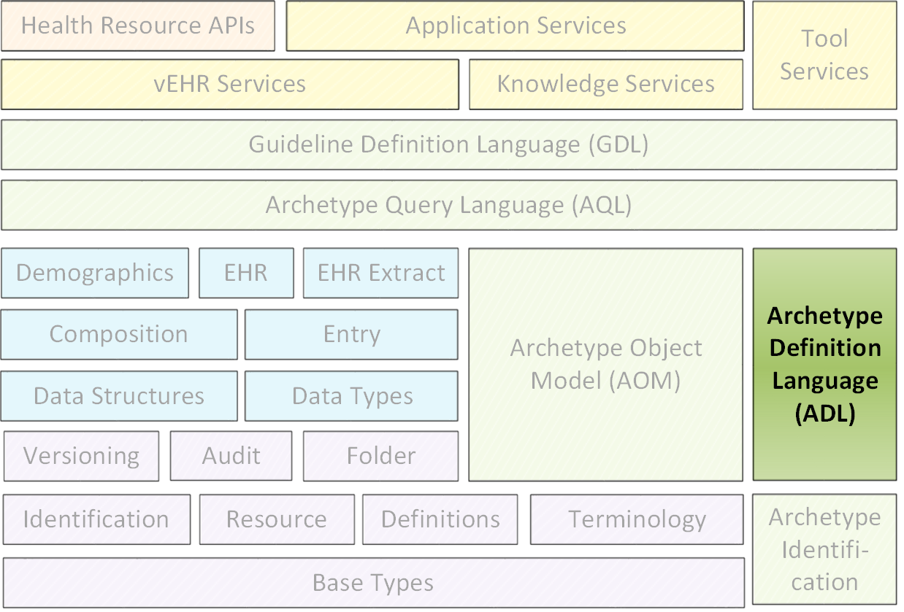
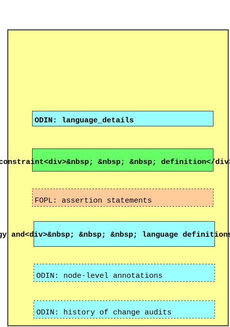
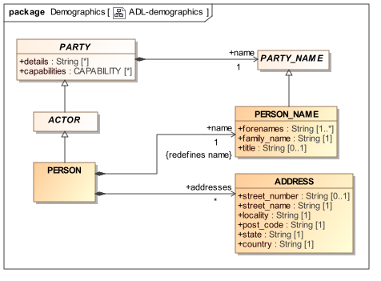
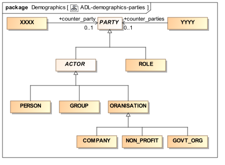
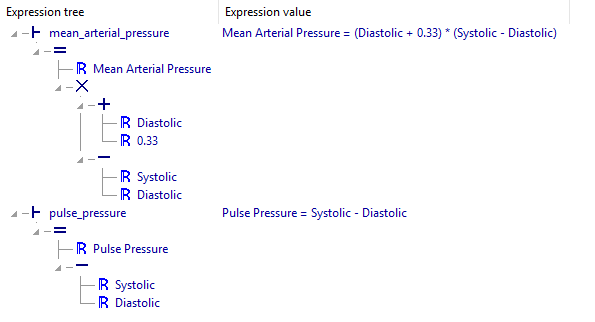
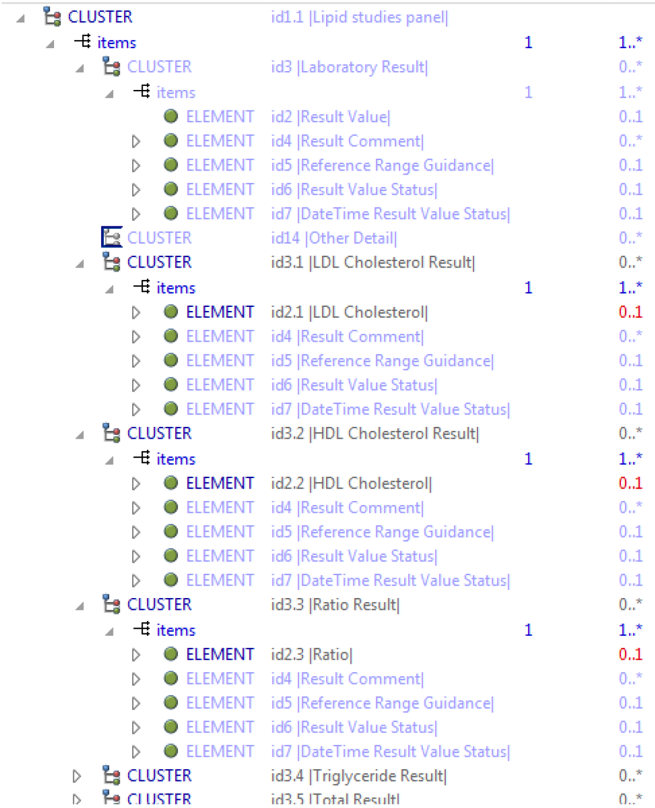
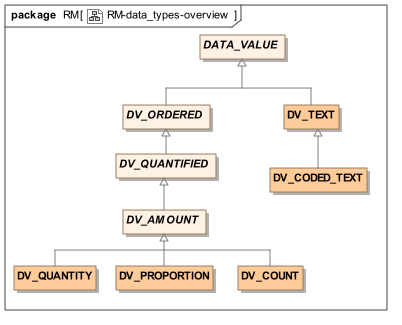

发行人：openEHR规范程序
发布：Release-2.0.6
状态：TRIAL
修订：[latest_issue]
日期：[latestissuedate]
关键词：EHR，ADL，AOM，健康记录，原型，约束语言，13606

©2003 - 2017 openEHR基金会
openEHR基金会是一个独立的非营利社区组织，通过开源，基于标准的实施，促进消费者和临床医生共享健康记录。
许可:
 Creative Commons Attribution-NoDerivs 3.0 Unported。
Creative Commons Attribution-NoDerivs 3.0 Unported。 支持:
本规范及其同类原型定义语言规范受益于openEHR和更广泛的健康信息社群的正式和非正式投入。 openHHR基金会希望承认以下人员的贡献。
Seref Arikan，MEcon，海洋信息学英国，健康信息学和多专业教育中心（CHIME），UCL，英国
约翰·阿内特，NHS连接健康，英国
Koray Atalag博士，奥克兰大学，新西兰
Tony Austin博士，健康信息学和多专业教育中心（CHIME），UCL，英国
Eric Browne博士，澳大利亚健康局
Rong Chen MD，博士，Cambio Heath Systems，瑞典
亚当弗林顿，NHS连接健康，英国
林雪平大学理学院Matias Forss硕士
塞巴斯蒂安加尔德，博士，海洋信息学
澳大利亚分布式系统技术中心Andrew Goodchild博士
Peter Gummer硕士，海洋信息学
Sam Heard MD，海洋信息学
Patrick Langford，NeuronSong有限责任公司
Jose Alberto Maldondo博士，西班牙大学波利尼西亚
西班牙大学博士，瓦伦西亚大学波利特
IsabelRománMartínez博士，西班牙塞维利亚大学
Ian McNicoll硕士，海洋信息学英国
Claude Nanjo MA非洲研究，M公共卫生，认知医疗系统公司，加利福尼亚
澳大利亚联邦健康软件协会Andrew Patterson博士
Ognian Pishev博士，澳大利亚，海洋信息学
Rahil Qamar Siddiqui博士，NHS健康和社会护理信息中心，英国
英国曼彻斯特大学Alan Rector博士，博士
Harold Solbrig MSc，Mayo Clinic，Rochester，USA
Alessandro Torrisi，Code24，荷兰
澳大利亚分布式系统技术中心Zar Zar Tun
Bert Verhees，ROSA软件，荷兰。
感谢澳大利亚中央昆士兰大学的塞巴斯蒂安加尔德，德语翻译。
“Microsoft”和“.Net”是Microsoft Corporation的注册商标。
“Java”是Oracle Corporation的注册商标
“Linux”是Linus Torvalds的注册商标。
'openEHR'是openEHR基金会的注册商标
“SNOMED CT”是IHTSDO的注册商标
本文件所报告的工作由下列组织提供资金：
UCL（伦敦大学学院） - 健康信息学和多专业教育中心（CHIME）;
海洋信息学。
特别感谢UIM的CHIME创始主任David Ingram教授，他提供了自GEHR（1992年）时代以来的愿景和合作的工作环境。
本文档描述了原型定义语言（ADL）2.x的设计基础和语法，原型定义语言（ADL）2.x是ADL的一个新的主要版本，包含相对于ADL 1.x版本的结构变化。
它面向软件开发人员，技术领域专家和主题专家（SME）。 ADL被设计为抽象的人类可读和计算机可处理的语法。 ADL原型可以使用常规文本编辑器手动编辑。
目标受众包括：
生产卫生信息学标准的标准组织;
研究小组使用openEHR，ISO 13606和其他EHR或EHR交换架构;
开源医疗保健社区;
EHR解决方案供应商;
医疗信息学家和临床医生对健康信息感兴趣。
阅读本文档的前提条件包括：
openEHR架构概述;
openEHR原型技术概述;
相关文档包括：
openEHR原型对象模型（AOM2）;
openEHR操作模板规范。
在本文档中，术语“属性”表示在对象模型中定义的类型的任何存储的属性，包括原始属性和任何种类的关系，例如关联或聚合。 XML“属性”总是被明确称为“XML属性”。
我们还在广义上使用单词“原型”来指定通常被理解为“原型”（临床数据组/数据约束的规范）和“模板”（基于原型的数据集，因为在技术层面， ADL / AOM 2模板实际上只是原型。因此，除非另有说明，否则本说明书中关于“原型”的陈述总是可以理解为也适用于模板。
此规范处于TRIAL状态。本文档的开发版本可以在http://www.openehr.org/releases/AM/Release-2.0.6/ADL2.html找到。
已知的遗漏或问题在文本中用“待定”段落表示，如下：
TBD :(例如待定段落）
鼓励用户对这些段落以及主要内容发表评论和/或建议。应在技术邮件列表或规格问题跟踪器上提供反馈。
存在用于创建和处理原型的各种工具。 ADL Workbench是一个参考编译器，可视化工具和编辑器。 openEHR ADL / AOM工具可以从网站下载。源项目可以在openHHR Github项目中找到。
对于ADL或原型开发工具的现有用户，以下提供了语法更改的指南。
用于表示ADL原型的描述，术语和注释部分的对象语法历史上称为“dADL”（即“数据ADL”）。由于此语法是完全通用的，并且对ADL或openEHR没有特定依赖性，因此它已被分离为称为对象数据实例符号（ODIN）的自己的规范。
版本2.0中的更改旨在使原型在术语方面更易于计算。相对于1.x版本的更改包括：
内部节点识别系统已经改变，使得不再使用at码来识别节点;相反，'id-codes'用于此目的;
所有节点现在需要一个id代码;
在专业原型中构造节点标识符代码的规则;
本体部分已经重命名术语;
价值集现在在术语部分的自己的子部分中声明，而不是在定义部分中内联;
在其当前形式中，对于ADL 2.x和AOM相对于ADL / AOM 1.5的内部编码系统和值集表示的改变构成句法上的突变，因此需要将ADL 1.4原型转换为ADL 2形式。这些更改已仔细设计，以允许此转换可实现，并在ADL Workbench工具中实施。 ADL 1.4样式路径可以从ADL 2原型生成，以便AQL查询可以构建用于与基于ADL 1.4的数据一起使用。
版本1.5中的更改是为了更好地促进专业原型的表示。专用原型的关键语义能力是能够支持差分表示，即仅根据其定义中的改变的或新的元素来表达专门的原型，而不是包括未改变的元素的副本。在变更管理方面，后者显然是不可持续的。 ADL 1.4已经支持差异表示，但有点不方便。
ADL 1.5的更改包括：
可选生成标记在原型第一行;
现在描述参考模型子类型匹配的语义;
差分表达形式允许有效地表达专用原型并确保它们是可维护的;
用于定义容器属性内的专用对象节点的顺序的新关键字;
关于如何使用否定匹配运算符（〜matches或∈）来定义特殊原型中的值集排除的解释;
描述“继承 - 扁平化”原型的语义;
可选注释部分添加到原型;
声明和不变量部分合并到规则部分;
在ADL语法中，语言部分现在是强制性的;
.adls文件作为差异ADL文件的标准文件扩展名（.adl文件保留为独立，继承扁平或“平面”原型）。
几乎所有更改都发生在cADL - Constraint ADL或新的专业化部分。
在这一版本中作了一些小的改动，同时大大收紧了解释性案文和例子。
dADL中的所有ISO 8601日期，时间，日期/时间和持续时间值现在都符合（以前'T'分隔符的使用不正确）。日期，时间和日期/时间的cADL中的约束模式也会被更正，并会添加一个新的约束模式，用于添加ISO 8601持续时间。后者允许偏离标准以包括“W”说明符，因为具有混合的周，天等的持续时间经常在医学中使用。
现在可以定义任何有序量（整数，实数，日期，时间，日期/时间，持续时间）的间隔，其中不包括一个或两个限制，例如：
| 0 .. <1000 | - 0> = x <1000
|> 0.5..4.0 | -0.5> x <= 4.0
|> P2d .. <P10d | - 2天> x <10天
现在可以为use_node引用声明出现，覆盖目标节点的出现。如果未声明出现，则使用目标节点出现值。
基于XML / ISO记忆模式（＆ohmgr;等）的旧引用规则被替换为将ADL指定为基于UTF-8，并且任何需要ASCII编码的例外都应该使用在各种编程语言中使用的\ Uhhhh引用unicode样式。
ADL 1.3版中的具体更改如下。
在ADL的1.2版本中，可以使用以下形式的语法包括外部查询：
attr_name = <query（“some_service”，“some_query_string”）>
现在，它被替换为使用URI，它可以表达查询，例如：
attr_name = <http://some.service.org?some%20query%20etc>
没有对URI的假设;它不需要以查询的形式 - 它可以是任何种类的URI。
在这个版本中，不变式只能在顶级块中以类似于面向对象的类定义的方式定义，而不是在定义部分的每个块上定义，如在ADL的版本1.2中的情况。这简化了ADL和原型对象模型，并使原型更易于理解为类型定义。
现在，ADL版本现在可选地（现在）包括在原型的第一行中，如下。
原型（adl_version = 1.2）
强烈建议所有工具实现者在保存原型时包含此信息，从而使原型逐步变成具有正确版本的印记，以实现更可靠的后续处理。在未来的ADL版本中，adl_version指示器可能会成为强制。
容器属性的dADL（现在ODIN）语法已更改，以允许更清晰地表示路径和类型，作为启用使用Xpath样式路径的一部分。 ADL 1.1 dADL具有以下外观：
school_schedule = <
locations（1）= <...>
locations（2）= <...>
locations（3）= <...>
subject（“philosophy：plato”）= <...>
subject（“philosophy：kant”）= <...>
subject（“art”）= <...>
>
这已更改为如下所示：
school_schedule = <
locations = <
[1] = <...>
[2] = <...>
[3] = <...>
>
subject = <
[“philosophy：plato”] = <...>
[“philosophy：kant”] = <...>
[“art”] = <...>
>
>
新的外观更直接地对应于容器类型的实际对象结构，并且具有可以通过在结构中的任何子树的骨干上直接读取标识符来构造路径的属性。它还允许在结构中的任何位置可选地添加打字信息，如以下示例所示：
school_schedule = SCHEDULE <
locations = LOCATION <
[1] = <...>
[2] = <...>
[3] = ARTS_PAVILLION <...>
>
subject = <
[“philosophy：plato”] = ELECTIVE_SUBJECT <...>
[“philosophy：kant”] = ELECTIVE_SUBJECT <...>
[“art”] = MANDATORY_SUBJECT <...>
>
>
这些更改将影响原型的描述和术语部分中的容器结构和键的解析。
修订历史现在记录在原型的单独部分中，以将其与原型描述性细节逻辑地分离，并且便于可以存储archtypes的版本控制系统的自动处理。这部分包含在原型的结尾，因为它通常是单调增长的部分。
在ADL 1.1原型的本体部分中需要以前称为primary_language的属性。这被重命名为original_language，现在移动到称为语言的原型中的新的顶级部分。它的值仍然表示为dADL String属性。之前在原型的本体部分中需要的languages_available属性重命名为翻译，不再包括原始语言，并且也移动到此新的顶级部分。
ADL使用三种语法cADL（ADL的约束形式），ODIN（对象数据实例符号）和一阶谓词逻辑（FOPL）的版本来表示作为基础信息模型的实例的数据的约束，其可以以UML，关系形式或以编程语言表达。 ADL本身是一个非常简单的“glue”语法，它使用另外两种语法分别表示结构化约束和数据。 cADL语法用于表示原型定义部分，而ODIN语法用于表示出现在ADL原型的language，description，terminology和revision_history节中的数据。 ADL原型的顶层结构如图所示
 图1. ADL原型结构
下面是一个非常简单的原型的例子，给出了语法的感觉。 从以下内容中获得的主要观点是，“吉他”的概念是根据对概念“INSTRUMENT”的通用模型的约束来定义的。 在定义部分（INSTRUMENT，size等）左侧提到的名称交替地是来自对象模型的类和属性名称。 每个大括号包围了符合特定概念的一些特定实例集合的规范，例如根据来自通用类模型的类型的约束定义的“吉他”或“颈部”。 大括号的叶对包含对基本类型的约束，例如整数，字符串，布尔等。
archetype (adl_version=2.0.5; rm_release=1.1.5)
adl-test-instrument.guitar.v1.0.4
language
original_language = <[iso_639-1::en]>
definition
INSTRUMENT[id1] matches {
size matches {|60..120|} -- size in cm
date_of_manufacture matches {yyyy-mm-??} -- year & month ok
parts cardinality matches {0..*} matches {
PART[id2] matches { -- neck
material matches {[ac1]} -- timber or nickel alloy
}
PART[id3] matches { -- body
material matches {[at3]} -- timber
}
}
}
terminology
term_definitions = <
["en"] = <
["id1"] = <
text = <"guitar">;
description = <"stringed instrument">
>
["id2"] = <
text = <"neck">;
description = <"neck of guitar">
>
["id3"] = <
text = <"body">;
description = <"body of guitar">
>
["at3"] = <
text = <"timber">;
description = <"straight, seasoned timber">
>
["at4"] = <
text = <"nickel alloy">;
description = <"frets">
>
>
>
value_sets = <
["ac1"] = <
id = <"ac1">
members = <"at3", "at4">
>
>
>
由于ADL文件由于国际化的创作和翻译而固有地包含多种语言，因此它们必须能够适应任何语言的字符。 ADL文件没有显式地指示编码，因为它们被假定为unicode的UTF-8编码。对于表意和脚本导向的语言，这是一个必要。
在ADL文件中有三个位置可能出现非ASCII字符：
在字符串值中，以双引号分隔，例如“xxxx”;
在正则表达式模式中，由//或^^划定;
在字符值中，用单引号分隔。 'X'。
根据RFC 39861 [uri_syntax]，URI（ODIN中的数据类型）假定为“百分比编码”，适用于“未保留集”外的所有字符。未保留集是：
unreserved = ALPHA / DIGIT /“ - ”/“。 /“_”/“〜”
实际上，由于各种原因，以拉丁语1（ISO-8859-1）或ISO-8859的另一个变体编码的ADL文件都可能工作得很好，这两个文件都包含重音符号和Unicode编码在ASCII 0-127范围之外。
只包含ASCII，即unicode代码点0-127;这将是英语写作原型不包含外语的情况;
某些操作系统层足够智能，可以将127以上的字符实时转换为UTF-8，即使所使用的原型工具仅为纯UTF-8设计;
原型工具（或其使用的字符串处理库）可能支持UTF-8和ISO-8859变体。
对于不能支持二进制UTF-8（和其他UTF- *编码）的情况，只能使用当今许多编程语言支持的系统来完成对编码点127之上的unicode字符的ASCII编码，即\ u转义的UTF- 16。在这个系统中，unicode码点被映射到：
\ uHHHH - 将以十六进制表示的Unicode代码点编号相同（可能为0填充在左侧）的4个十六进制数字;这适用于范围U + 0000 - U + FFFF（“基本多语言平面”，BMP）中的unicode码点;
\ uHHHHHHH - 8个十六进制数字，用于编码U + 10000到U + 10FFFF范围内的unicode代码点（非BMP平面）;该算法在IETF rfc2781中描述。
不使用上述方法将是通常情况，并且它可能根本不需要;最好找到确保可以支持本地UTF-8的方法，因为这减少了ADL解析器和工具实现者的负担。因此，提供上述指导仅仅是为了确保如果ASCII编码的unicode变得不可避免则使用标准方法。
因此，虽然ADL及其组成语法的唯一官方指定的编码是UTF-8，但是真实软件系统可以是更宽容的。因此，本文档规定设计用于处理ADL文件的任何工具仅需要支持UTF-8;支持其他编码是可选的额外。如果ADL或openEHR用户社区要求，这可能会在将来更改。
在字符串和字符中，不在较低ASCII（0-127）范围内的字符应使用UTF-8编码，但带引号的单引号和双引号以及一些非打印字符除外，以下常用引号形式允许（但不是必需）：
\ r - 回车
\ n - 换行
\ t - 标签
\\ - 反斜杠
\“ - 双引号
\' - 单引号
从反斜杠开始的任何其他字符组合是不合法的;要获得文字反斜杠的效果，应始终使用\序列。
通常在正常字符串中，包括在ODIN中使用的多行段落，只有\\和\“可能是必要的，因为所有其他字段都可以容纳在其字面形式中;单字符也是如此 - 只有\\和\'很可能会出现，但是，有些作者可能更喜欢使用\ n和\ t使目标格式更加清晰，或者允许对这些字符没有正确反应的文本编辑器。 因此，Parsers应该支持上面的列表。
在正则表达式（仅用于cADL字符串约束）中，根据PERL正则表达式规范，通常会有来自上面列表的反斜杠字符以及其他模式，如\ s（whitspace）和\ d（十进制数字） Perl_regex]）。这些不应该被视为除字面字符串以外的任何东西，因为它们由正则表达式解析器处理。
cADL是一种块结构语法，其使得能够以原型或其他知识定义形式表达对面向对象的信息模型定义的数据的约束。它最适用于定义其实例符合非常一般对象模型的数据的特定可允许配置。 cADL的一般外观是
PERSON[id1] matches { -- constraint on a PERSON instance
name matches { -- constraint on PERSON.name
TEXT[id2] matches {/.+/} -- any non-empty string
}
addresses cardinality matches {1..*} matches { -- constraint on
ADDRESS[id3] matches { -- PERSON.addresses
-- etc --
}
}
}
在该示例中的一些文本关键词可以使用公共数学逻辑符号更有效地呈现。 在以下示例中，matches关键字已替换为等效符号：
PERSON[id1] ∈ { -- constraint on a PERSON instance
name ∈ { -- constraint on PERSON.name
TEXT[id2] ∈ {/..*/} -- any non-empty string
}
addresses cardinality ∈ {1..*} ∈ { -- constraint on
ADDRESS[id3] ∈ { -- PERSON.addresses
-- etc --
}
}
}
完整的等价集如下所示。原始cADL以基于文本的形式持久化，以便在正常文本编辑器中创作cADL文本时解决任何困难，并帮助以英语阅读。然而，符号形式可能更广泛地用于显示目的和更复杂的工具，因为它更简洁和更少依赖于语言。符号或文本的使用完全是品味的问题，并且根据个人偏好完全忽略一种或其他格式而没有任何意义。本文档使用这两种约定。
在本节中记录的标准cADL中，文字叶值（例如上例中的正则表达式/.+/）总是对一组“标准”广泛接受的基本类型的约束，如openEHR ODIN语法中所述规格[openehr_odin]。
在cADL中识别以下关键字：
matches, ~matches, isin, ~isin
occurrences, existence, cardinality
ordered, unordered, unique
usenode, allowarchetype
include, exclude
before , after
上表中的一些符号等效物在下表中给出。
| 文字渲染 | 符号渲染 | 含义 |
| matches | ∈ | 设定“p 在 P内” |
| not | ~ | 否定，非'p' |
| * | * | 无穷，“任何数字” |
cADL约束是以块结构样式编写的，类似于类似于C的块结构化编程语言。典型的块类似于以下（重复模式/.+/是表示“非空字符串”的正则表达式）：
PERSON[id1] ∈ {
name ∈ {
PERSON_NAME[id2] ∈ {
forenames cardinality ∈ {1..*} ∈ {/.+/}
family_name ∈ {/.+/}
title ∈ {"Dr", "Miss", "Mrs", "Mr"}
}
}
addresses cardinality ∈ {1..*} ∈ {
LOCATION_ADDRESS[id3] ∈ {
street_number existence ∈ {0..1} ∈ {/.+/}
street_name ∈ {/.+/}
locality ∈ {/.+/}
post_code ∈ {/.+/}
state ∈ {/.+/}
country ∈ {/.+/}
}
}
}
在上面，一个标识符（在本文件中以绿色显示）后跟∈操作符（等效文本关键字：matches或is_in）后跟一个开放的大括号，是一个“块”的开始，继续直到闭合匹配括号 （通常视觉上缩进以匹配块开始处的线）。
来自底层信息模型的两种标识符被交替使用：类型名称（在本文档中以大写字母表示）和属性名称（以小写字母表示）。
由类型名引入的块被称为对象块或对象节点，而由属性名引入的块是如下所示的属性块或属性节点。
PERSON[id1] ∈ { -- OBJECT block 1 ------------+
name ∈ { -- attribute block A ---+ |
PERSON_NAME[id2] ∈ { ... } -- OBJECT block 2 + |
} -------------------------+ |
}
对象块或节点可以被认为是与引入该块的类型的一组实例匹配的约束。
上面的示例表示对类型PERSON的实例的约束; 约束由PERSON块中的所有内容表示。 下一级的两个块定义了PERSON的属性的约束，在这种情况下是名称和地址。 这些约束中的每一个依次由包含对其他类型的约束的下一级表示，等等。 因此，一般结构是对类型的约束的递归嵌套，随后是对（该类型的）属性的约束，随后是到达叶节点之前的类型（作为其出现的属性的类型）。
cADL文本是交替的对象和属性块的结构，每个分别由来自底层信息模型的类型名称和属性名称引入。
在cADL文本中，注释定义如下：
注释由前导字符“ - ”表示。 多行注释是在注释继续的每一行上使用' - '引号。
cADL文本中的标识符对应于信息模型中的实体（类型和属性）。 后者通常是面向对象的模型，但可以很容易地是实体关系模型或任何其他类型的信息模型。 与上述示例兼容的UML模型在UML Model of Person中示出。 请注意，可以有多个模型与cADL语法的给定片段兼容，并且特别地，在参考模型中通常存在比在cADL约束中提及的更多的属性和类。 换句话说，cADL文本包括仅用于模型中对约束有用或有意义的那些部分的约束。
 图2.人的UML模型
cADL中表达的约束不能比信息模型中的约束更强。例如，PERSON.family_name属性在上述PERSON模型中的模型中是必需的，因此表示允许该属性是可选的约束是无效的。通常，cADL原型只能进一步约束现有的信息模型。然而，必须记住，对于仅由少数类组成的非常通用的模型和许多可选性，该规则不是作为对信息添加含义的方式的限制。因此，对于仅具有类型PARTY和PERSON的人口统计信息模型，可以根据对信息模型中可用类型的约束来编写定义实体（例如COMPANY，EMPLOYEE，PROFESSIONAL等）的概念的cADL 。
这种一般方法可以用于表示任何信息模型的实例的约束。以下示例显示如何将ELEMENT类的value属性的约束表达为具有用于表达血压的合适范围的DV_QUANTITY。
ELEMENT[id10] matches { -- diastolic blood pressure
value matches {
DV_QUANTITY[id11] matches {
magnitude matches {|0..1000|}
property matches {"pressure"}
units matches {"mm[Hg]"}
}
}
}
在本说明书中，术语基础信息模型和参考模型是等价的，并且指代cADL文本所基于的信息模型。
来自底层信息模型的标识符用于引入所有cADL节点。标识符遵守与ODIN中相同的规则：类型名称以大写字母开头，而属性和函数名称以小写字母开头。在cADL中，可以使用类型名称和任何属性的名称（即属性或无参数函数）。
类型名称是具有初始大写字母的任何标识符，后跟字母，数字和下划线的任何组合。通用类型名称（包括嵌套表单）还可以包括逗号，尖括号和空格，并且必须按照OMG UML 2.x规范或更高版本在语法上正确。属性名称是具有初始小写字母的任何标识符，后跟字母，数字和下划线的任何组合。允许遵守此规则的任何约定。
类型标识符在本文档中以全部大写形式示出。 PERSON，而属性标识符全部以小写显示。例如，家庭地址 。在这两种情况下，下划线用于表示分词符。此约定用于提高本文档的可读性，并且可以使用其他约定，例如由Person和homeAddress例示的公共程序员的混合大小写约定。为任何特定cADL文档选择的约定应基于在基础信息模型中使用的约定。
节点标识符代码出现在cADL文本中的所有类型标识符后面。它们采用括号中的“id代码”的形式。例如，[id3]。结构中的根对象的id代码总是id1，或者对于专门的原型，id1.1，id1.1.1等。节点标识符的规则和使用在下面更详细地描述。
匹配或is_in运算符值得特别提及，因为它是cADL中的关键运算符。该算子可以在数学上被理解为集合隶属。当它出现在标识符和由大括号分隔的块之间时，含义是：在大括号之间指定由名称（对象或对象的部分 - 属性）引用的实体允许的值集。在任何匹配的大括号之间出现的内容可以被认为是一组值的规范。由于块可以嵌套，这种指定值的方法可以根据嵌套集或根据类型实例的值空间来理解。因此，在以下示例中，matches运算符将实体的名称链接到由以'ion'结尾的所有单词组成的线性值空间（即列表）。
aaa matches {/\w*ion[\s\n\t ]/} -- the set of words ending in 'ion'
以下示例将类型XXX的名称与层次结构值空间链接。
XXX[id2] matches {
xxx_attr1 matches {
YYY[id3] matches {
yyy_attr1 matches {0..3}
}
}
xxx_attr2 matches {
ZZZ[id4] matches {
zzz_attr1 matches {>1992-12-01}
}
}
}
上述语法的含义是：匹配约束的数据包括类型为XXX的实例或底层信息模型允许的任何子类型，其属性aaa的值为YYY类型，或底层信息允许的任何子类型 模型等等，直到达到叶级约束。
偶尔，匹配运算符需要在负片中使用，通常在叶块。 以下任何一种都可以用于将属性aaa的值空间限制为除5之外的任何数字：
aaa ~matches {5}
aaa ~is_in {5}
aaa ∉ {5}
是否使用matches或is_in的选择是品味和背景的问题;具有数学背景的人可能更喜欢is_in，而具有数据处理背景的人可能喜欢匹配。
cADL完全独立于所有自然语言。唯一可能的例外是其中约束包括来自某种语言的字面值，并且通过使用ADL原型中使用的单独的语言和术语定义，这是容易且常规地避免的。然而，出于可读性的目的，本文档中包括英语评论以帮助读者。在实际的cADL文档中，注释是从语言环境的语言中的原型术语生成的。
本节描述了约束复杂对象（即非原始类型）的语义。语义通过约束结构递归地应用，直到达到限制基本类型的叶节点。
在任何信息模型中，属性都是单值或多值的，即一个通用容器类型如List
存在约束可以与任何属性一起使用以进一步约束由基础参考模型定义的存在。存在约束指示属性值是强制性还是可选的，并且在UML图中的行末端由“0..1”或“1”标记指示（并且经常被错误地称为“基数1..1” ）。在参考模型中定义的属性具有有效存在约束，由相关类的不变量（或缺少）定义。例如，openEHR OBSERVATION类[EHR_IM]中的协议属性在参考模型中定义为可选的，即0..1。原型可以将此重定义为{1..1}，使属性成为强制性的。存在约束在cADL中表示如下：
OBSERVATION[id1] matches {
protocol existence matches {1..1} matches {
-- details
}
}
存在约束的含义是指示所讨论的属性的运行时数据中的值（即，对象）是否是强制性的或可选的（即，强制的或非强制的）。无论属性是单个还是多个基数，即是否是容器类型，都应用相同的逻辑。对于容器属性，存在约束指示整个容器（通常是列表或集合）是否是强制性的;另一基数约束（下面描述）指示容器中允许多少成员。
存在约束可以直接在任何属性标识符之后使用，并且指示属性引用的对象在数据中是强制的还是可选的。
存在使用与原型定义的其余部分相同的约束语言示出。存在约束可以取值{0}，{0..0}，{0..1}，{1}或{1..1}。这些约束中的前两个约束可能看起来并不明显，但可以用于指示属性不能存在于由原型建模的特定情况中。这在某些情况下可能是合理的。
单值属性是在底层类模型中声明的类型是单个对象类型而不是容器类型（如列表或集合）的属性。单值属性可以使用单个对象约束进行约束，如以下示例所示。
value matches {
DV_QUANTITY[id22] matches {
magnitude matches {|0..55|}
property matches {"velocity"}
units matches {"mph"}
}
}
还可以使用多个兄弟块来定义多个替代对象约束，如以下示例所示。 每个块定义了替代约束，其中只有一个约束需要由数据匹配。
value matches {
DV_QUANTITY[id22] matches { -- miles per hour
magnitude matches {|0..55|}
property matches {"velocity"}
units matches {"mph"}
}
DV_QUANTITY[id23] matches { -- km per hour
magnitude matches {|0..100|}
property matches {"velocity"}
units matches {"km/h"}
}
}
这里，没有说明两个DV_QUANTITY约束的出现，导致在运行时数据中只有一个DV_QUANTITY实例可以出现，匹配任何一个约束。
由出现在单值属性之后的类型名称（即没有基数约束的类型名称）引入的两个或多个对象约束被认为是替代约束，其中只有一个与数据匹配。
容器属性的基数可以在具有基数约束的cADL中被约束。 基数表示对容器类型（例如列表和集合）的实例成员数量的限制。 请考虑以下示例：
HISTORY[id2] occurrences ∈ {1} ∈ {
periodic ∈ {False}
events cardinality ∈ {*} ∈ {
EVENT[id3] occurrences ∈ {0..1} ∈ { } -- 1 min sample
EVENT[id4] occurrences ∈ {0..1} ∈ { } -- 2 min sample
EVENT[id5] occurrences ∈ {0..1} ∈ { } -- 3 min sample
}
}
基数关键字首先意味着属性事件必须是容器类型，例如List
events cardinality ∈ {*; ordered} ∈ { -- logical list
events cardinality ∈ {*; unordered; unique} ∈ { -- logical set
events cardinality ∈ {*; unordered} ∈ { -- logical bag
如果不需要容器属性的基数的数字或排序约束，则该关键字将单独使用，并且仅表示该属性是容器，如以下示例所示：
events cardinality ∈ { -- indicates 'events' is a container
尽管如果通常可以引用参考模型，这不是严格地必要的，但是它使得早期解析能够生成正确类型的属性，而不需要参考参考模型模式，在任何情况下都不总是能得到的。这反过来使得在原型编译过程中更早地实现更忠实的可视化。
理论上，没有基数约束可以比参考模型的相关部分中对应容器的语义更强。然而，在实践中，当实际语义旨在是集合时，开发人员经常使用List来促进数据集成;在这种情况下，它们通常在它们自己的代码中确保类集语义，而不是使用Set
必须在任何引用模型容器属性名称之后（或在其存在约束之后，如果有的话）使用基数约束，以便将其指定为容器属性。另外，它可以通过使用关键字“有序”，“无序”，“无序”和“有序”来限制其在数据中可能具有的成员项目的数目，以及其是否具有“列表”，“设置”独特“和”非唯一“。
基数约束的数字部分可以取值{0}，{0..0}，{0..n}，{m..n}，{0 ..}或{}，或者一个句法等价。前两个约束不太可能有用，但没有理由阻止它们。没有默认基数，因为如果没有显示，相关属性被假定为单值（为了原型的一致性，这甚至适用于更聪明的解析器，它可以访问参考模型并确定该属性在事实一个容器）。
基数和存在约束可以共同发生，以便指示容器类型属性上的各种组合，例如，它是可选的，但如果存在，是一个可能为空的容器，如下所示：
events existence ∈ {0..1} cardinality ∈ {0..*} ∈ {-- etc --}
在cADL中，使用类型名后面的形式[idN]的括号中的实体来标识对象节点，即，定义由参考模型定义的类型的实例集合的节点约束。对象节点总是以类型名称开头。尽管可以支持任何节点标识符格式，但是当前版本的ADL假定节点标识符具有原型项标识符的形式，即[idN]，例如[idN]。 [id42]。节点标识符在本文档中以品红色显示。
节点标识符的结构功能是允许形成路径：
启用原型定义中的cADL节点在同一原型中明确引用;
允许使用给定原型创建的数据在运行时匹配;
以使得父原型中的cADL节点能够从专门的子原型明确引用;
以使得能够形成唯一的路径。
所有对象节点都需要一个节点标识符，保证生成唯一路径的能力，并处理关于继承父节点的专用原型。
原型中的每个对象节点都需要节点标识符。
节点标识符还可以通过将节点标识符等同于某个描述来执行语义功能，给予节点设计时间含义。在原型中使用节点标识符是其表达力的主要来源。每个节点标识符在节点上充当“语义标记”或“覆盖”。因此，在基础信息模型中所示的示例中，ELEMENT节点由代码[id10]标识，其可以在原型中被指定为意味着“舒张血压”。以这种方式，丰富的含义被给予由有限数量的对象类型构造的数据。
不是每个对象节点标识符都需要在原型术语中定义：它只对在容器属性下定义的节点的标识符和在单值属性下的多个替代节点是强制的。在单值属性下定义的单个对象节点的标识符可以具有术语定义，但通常不需要它们，因为从属性中的含义是显而易见的。
对发生的约束仅用于cADL对象节点，以指示在数据中可以发生多少次符合约束的实例。它通常只在作为容器属性的子对象的对象上定义，因为根据定义，作为单值属性的值的对象的出现次数只能是0..1或1..1，这是已经由属性的存在定义。但是，它可以在专门的原型中使用，以排除在父原型中定义的可能性（请参阅属性重定义）。
在下面的示例中，显示了三个EVENT约束;第一个（“1分钟样本”）被显示为强制性的，而其他两个是可选的。
events cardinality ∈ {*} ∈ {
EVENT[id2] occurrences ∈ {1..1} ∈ { } -- 1 min sample
EVENT[id3] occurrences ∈ {0..1} ∈ { } -- 2 min sample
EVENT[id4] occurrences ∈ {0..1} ∈ { } -- 3 min sample
}
以下示例表示对GROUP的实例的约束，使得对于表示部落，俱乐部和家庭的GROUP，只能有一个“头部”，但可能有许多成员。
GROUP[id103] ∈ {
kind ∈ {/tribe|family|club/}
members cardinality ∈ {*} ∈ {
PERSON[id104] occurrences ∈ {1} ∈ {
title ∈ {"head"}
-- etc --
}
PERSON[id105] occurrences ∈ {0..*} ∈ {
title ∈ {"member"}
-- etc --
}
}
}
第一次出现约束表示具有标题“head”的PERSON在GROUP中是强制性的，而第二个表示在运行时，具有标题“member”的PERSON的实例可以从无到多。发生可以取任何范围的值，包括{0 ..}，意味着给定类型的任何数量的实例可以出现在数据中，每个符合原型中的一个约束块。单个正整数或无穷大指示符也可以单独使用，因此：{2}，{}。范围{0..0}或{0}表示在此原型中不允许出现此对象。如果未声明出现次数约束，则对象的出现由下层参考模型定义。
出现约束可以直接出现在容器属性内的任何对象约束的类型名称之后，以便指示在数据中可能发生多少次符合块的数据对象。
在使用基数约束的情况下（记住，默认情况下总是存在，如果没有明确指定），基数和出现必须始终兼容。这些规则在原型对象模型规范中正式说明。这些规则的关键要素如下：
其中基数约束用有限上限来表示：
任何具有开放上限（通常为0 ..或1 ..）或推断的出现（0 .. *）的所述出现的任何子对象是合法的，因为出现开放上界被解释为意味着允许的最大值基数上限。
所有子对象出现次数的下限必须小于基数上限;
no'orphans'：至少一个可选子对象的实例（出现次数下限= 0），每个必需子对象的一个实例（出现次数下限> 0）必须在基数范围内包含。
有两种情况可用于说明完全打开或“任何”约束。第一种是当需要重写属性的存在或基数时，例如在下面：
PERSON[id2] ∈ {
name existence ∈ {1}
-- etc --
}
在上述中，在语句中不需要进一步匹配{}部分，因为不再陈述更多的约束。
第二次使用“any”作为约束值是针对类型的，例如下面的：
ELEMENT[id4] ∈ { -- speed limit
value ∈ {
DV_QUANTITY[id5] -- type was 'DATA_VALUE' in RM
}
}
这个约束的含义是在运行时的数据中，ELEMENT的value属性必须是DV_QUANTITY类型，但在内部可以有任何值。这对于将对象约束为特定类型而不进一步限制值最有用，并且在信息模型包含子类型并且需要将数据限制为某些上下文中的某些子类型的情况下尤其有用。
不推荐使用：在ADL 1.4中，“any”约束在语句结尾处用附加匹配项{*}表示。这已被弃用。建议解析器静默接受此表单，但输出现代ADL 2表单。
所有cADL对象约束从底层参考模型中指定类型名称。在词法上，如果所涉及的RM支持通用（模板）类型，这可以是抽象类名，具体类名或通用类型名。在后一种情况下，根据UML中使用的标准通用类型名称语法和C ++，Java，C＃等主流语言，即使用字符<>，和空格，从RM类名称构造类型名称（s）。此外，类型名称的匹配不区分大小写，并且忽略空格。因此，原型中的“SECTION”假定与类型为SECTION或Section的数据实例匹配;原型中的“Interval
在语义术语中，符合原型约束的数据项可以是来自参考模型（即，如上所述的类名或导出的通用类型）的任何具体类型，其符合约束中提及的类型，即，如果它是混凝土或任何子类型。正确评估数据/原型一致性是由实现的工具，并且需要访问参考模型的正式描述。
RM类型匹配的精确规范在Rmtypename部分和AOM2规范的参考模型类型匹配中给出。
基于子类型的类型匹配的后果之一是当在cADL中的同一属性节点下声明多个引用模型子类型时需要语义。考虑下面所示的参考模型继承结构，其中抽象PARTY类具有抽象和具体的后代，包括ACTOR，ROLE等。
 图3.参考模型子类型层次结构
以下cADL语句定义一个实例空间，其中包含图中类XXXX的实例中的PARTY类的任何具体子类型的实例（省略号表示此处未显示的特定约束）。
counter_party ∈ {
PARTY[id4] ∈ { ... }
}
然而，在一些情况下，可能期望定义将以特定方式匹配特定子类型的约束，而其他子类型由更一般的规则匹配。 在单值属性下，可以执行以下操作：
counter_party ∈ {
PARTY[id4] ∈ { ... }
PERSON[id5] ∈ {
date_of_birth ∈ { ... }
}
}
这个cADL文本说，数据中counterparty属性的实例值可以是与PERSON块匹配的PERSON对象，具有与给定范围匹配的dateof_birth，或任何其他种类的PARTY对象。
在多值属性下，备选子类型作为标识的子成员包括在内。 以下示例说明了参考模型子类型层次结构中类YYYY的实例的counter_parties属性的约束。
counter_parties ∈ {
PERSON[id4] ∈ {
date_of_birth ∈ { ... }
}
ORGANISATION[id5] ∈ {
date_of_registration ∈ { ... }
}
PARTY[id6] ∈ { ... }
}
上面说，数据中的ORGANIZATION和PERSON实例只能匹配上述ORGANIZATION和PERSON约束，而PARTY的任何其他子类型的实例必须匹配PARTY约束。
在某些情况下，需要删除一些子类型。 这是通过对出现次数限制为零的特定子类型声明约束来实现的。 以下示例匹配任何PARTY实例，但COMPANY或GROUP子类型的实例除外。
counter_party∈{
PARTY [id4]∈{...}
COMPANY [id5]出现次数∈{0}
GROUP [id6] occurrences∈{0}
}}
所标识的对象节点的使用允许形成原型路径，其可以用于明确地引用相同原型内或专门孩子内的对象节点。 原型路径的语法设计为接近W3C Xpath语法，并且可以直接转换为在XML中使用。
原型路径是从原型的定义部分提取的路径，并引用定义中的对象节点。 路径被构造为“/”字符和属性名称的串联，后者包括节点标识符作为消歧所需的谓词。
在以下示例中，PERSON约束节点是单值属性管理器下的唯一对象约束：
manager ∈ {
PERSON[id104] ∈ {
title ∈ {"head of finance", "head of engineering"}
}
}
标题属性下的对象的两个有效路径是可能的：
manager[id104]/title
manager/title
如果有多个兄弟节点，则必须使用节点标识符以确保唯一引用：
employees ∈ {
PERSON[id104] ∈ {
title ∈ {"head"}
}
PERSON[id105] matches {
title ∈ {"member"}
}
}
现在，各个标题属性的路径为：
employees[id104]/title
employees[id105]/title
下面提供了另一个例子：
HISTORY[id1] occurrences ∈ {1} ∈ {
periodic ∈ {False}
events cardinality ∈ {*} ∈ {
EVENT[id2] occurrences ∈ {0..1} ∈ { } -- 1 min sample
EVENT[id3] occurrences ∈ {0..1} ∈ { } -- 2 min sample
EVENT[id4] occurrences ∈ {0..1} ∈ { } -- 3 min sample
}
}
可以构造以下路径：
/ -- the HISTORY (root) object
/periodic -- the HISTORY.periodic attribute
/events[id2] -- the 1 minute event object
/events[id3] -- the 2 minute event object
/events[id4] -- the 3 minute event object
上述路径都可以用于引用在其中定义它们的原型内的相关节点，或者在任何专门的子原型内。
cADL中使用的路径在ADL路径语法中表示，在ADL路径中详细描述。 ADL路径具有在cADL的一般层次结构中隐含的相同的交替对象/属性结构，服从模式TYPE / attribute / TYPE / attribute / ...。
上面的示例是物理路径，因为它们使用诸如“id4”的节点标识符代码来引用对象节点。 通过将来自术语部分的代码含义添加为节点标识符的注释（如果定义的话），可以将物理路径呈现为逻辑路径。 因此，以下两个路径可能是等效的：
/events[id4] -- the 3 minute event object
/events[id4|3 minute event|] -- the 3 minute event object
在SNOMED CT医学术语中采用在条形码上显示注释的双条（'| xxx |'）方法，并广泛用于医疗保健领域。
上面显示的任何路径在它们出现的cADL文本之外都是有效的，因为它们不包括封闭的伪像的标识符，通常是原型。要从其他地方（例如另一个原型或模板）引用原型中的cADL节点，包含本身的标识符必须以路径为前缀，如以下示例所示：
[openehr-ehr-entry.apgar-result.v] / events [id2]
这种路径表达式是形成当原型被组成以形成更大结构时出现的路径所必需的。
基于原型的与运行时数据一起使用的路径可以以与原型中的路径相同的方式构造，并且除了单值属性之外是相同的。因为在数据中，只有单个实例可以表现为单值属性的值，所以在引用它时从不存在任何歧义，而到达或通过相同属性的原型路径可能需要节点标识符，因为可能存在多个备择方案。考虑上面的例子：
items cardinality matches {*} matches {
ELEMENT[id4] matches { -- speed limit
value matches {
DV_QUANTITY[id22] matches { -- miles per hour
magnitude matches {|0..55|}
property matches {"velocity"}
units matches {"mph"}
}
DV_QUANTITY[id23] matches { -- km per hour
magnitude matches {|0..100|}
property matches {"velocity"}
units matches {"km/h"}
}
}
}
}
可以构造以下原型路径：
items[id4]/value[id22]
items[id4]/value[id23]
例如，根据此原型创建的数据，可以使用以下运行时路径：
items[id4]/value -- since there is only one DV_QUANTITY in the data
使用此路径的查询将匹配数据，而不管DVQUANTITY对象的类型是什么。 然而，在某些情况下，查询可能需要是特定的，在这种情况下，它们将使用完整的原型路径，即items [id4] / value [id22]或items [id4] / value [id23] 或“公里”数据。 这将仅在节点ids（id代码）事实上存储在所有类型的参考模型数据中时才起作用。 如果例如对于DVQUANTITY类型不是这种情况，则来自原型的DVQUANTITY对象的另一个面如“units =”km / h“'将需要在查询中使用以正确地仅定位度量DVQUANTITY对象。
可以在某一点定义约束结构以与在原型中别处定义的结构相同，而不是复制期望的结构。 这是使用代理约束对象，使用以下语法实现：
use_node TYPE[idN] archetype_path
此语句定义TYPE类型的节点，其定义与在路径archetypepath中找到的定义相同。 usenode引用中提到的类型必须始终与引用类型相同。
该路径不能位于代理对象本身的父路径中，但可能是代理对象的同级。同胞情况是一种特殊情况，代理约束的含义是目标对象的孩子应该被重用，而不是目标本身（因为那将非法地创建两个具有相同标识符的兄弟姐妹）。一般情况下，代理对象和目标对象位置不同，其含义是代理对象在逻辑上被目标对象的深层副本替换。 （理论上，兄弟姐妹的情况可以被禁止，并且代理被定义为与原始目标的孩子的目标相比更进一步的水平，但是这对原型作者造成不便，并且可以容易地在工具中处理）。
还假定来自目标的出现，或者可以显式地重写：
use_node TYPE[id4] occurrences ∈ {0..1} archetype_path
代理对象提供了一种内部重用机制。 专用原型可以重新定义这样的节点上的结构，就好像它们已经被内联地定义。 这在“专业化部分中的内部参考（代理对象）重定义”中有更详细的描述。
代理约束对象允许在其他地方定义的对象约束在同一原型或专用子代中重复使用。
以下示例显示了针对家庭联系人的电话，传真和电子邮件的ADDRESS节点的定义，以用于联系工作。
PERSON[id1] ∈ {
identities ∈ {
-- etc --
}
contacts cardinality ∈ {0..*} ∈ {
CONTACT[id2] ∈ { -- home address
purpose ∈ {...}
addresses ∈ {...}
}
CONTACT[id3] ∈ { -- postal address
purpose ∈ {...}
addresses ∈ {...}
}
CONTACT[id4] ∈ { -- home contact
purpose ∈ {...}
addresses cardinality ∈ {0..*} ∈ {
ADDRESS[id5] ∈ { -- phone
type ∈ {...}
details ∈ {...}
}
ADDRESS[id6] ∈ { -- fax
type ∈ {...}
details ∈ {...}
}
ADDRESS[id7] ∈ { -- email
type ∈ {...}
details ∈ {...}
}
}
}
CONTACT[id8] ∈ { -- work contact
purpose ∈ {...}
addresses cardinality ∈ {0..*} ∈ {
use_node ADDRESS[id9] /contacts[id4]/addresses[id5] -- phone
use_node ADDRESS[id10] /contacts[id4]/addresses[id6] -- fax
use_node ADDRESS[id11] /contacts[id4]/addresses[id7] -- email
}
}
}
}
以下示例显示在引用节点中覆盖的事件，以允许重新使用“phone”的规范，但具有不同的事例约束。
PERSON[id1] ∈ {
contacts cardinality ∈ {0..*} ∈ {
CONTACT[id4] ∈ { -- home contact
addresses cardinality ∈ {0..*} ∈ {
ADDRESS[id5] occurrences ∈ {1} ∈ { ...} -- phone
}
}
CONTACT[id8] ∈ { -- work contact
addresses cardinality ∈ {0..*} ∈ {
use_node ADDRESS[id9] occurrences ∈ {0..*} /contacts[id4]/addresses[id5] -- phone
}
}
}
}
在形成通过代理和目标下面的节点的路径时，可以识别两种情况：
如果代理对象是目标对象的兄弟，则在路径中使用代理对象节点标识符，并且目标对象的节点id不是;
否则，使用来自代理目标对象的标识符形成路径。
原型中的另一种参考是另一种原型。有两种方法可以做到这一点：使用直接引用，并使用原型“slot”。第一个是在需要引用一个特定原型（或从另一个模板到模板）时使用，而第二个是允许使用与指定标准匹配的各种原型的约束。插槽概念将在下一节中介绍。
外部引用定义两个原型之间的固定组合连接。
直接引用或外部引用，因为它们将在这里被表示出现两个主要原因：重用和模板。在第一种情况下，当发现另一原型在类似点处包含相同或非常相似的内联约束时，原型最初使用内联约束构建。如在软件设计中正常的，进行重构操作，导致共同部分被创建为其自己的新原型，并且原始原型“引用”它。它们使用外部引用来完成此操作，外部引用具有以下形式的语法：
use_archetype TYPE [idN，archetype_id] <occurrences约束>
在上述中，archetype_id包括在通常的原型节点标识符（id-code）中。通常的发生约束可以在结束时应用。
以下示例显示两个父原型的部分，这两个原型都引用相同的子原型。第一部分是从openHHR INSTRUCTION原型开始与用药订单。
INSTRUCTION[id1] ∈ { -- Medication order
activities cardinality ∈ {0..*; unordered} ∈ {
ACTIVITY[id2] ∈ { -- Medication activity
action_archetype_id ∈ {/openEHR-EHR-ACTION\.medication\.v1/}
description ∈ {
use_archetype ITEM_TREE[id3, openEHR-EHR-ITEM_TREE.medication.v1]
}
}
}
}
本节来自定义药物管理操作的openEHR ACTION原型。
ACTION[id1] ∈ { -- Medication action
ism_transition ∈ {
ISM_TRANSITION[id2] ∈ { ... }
-- ...
}
description ∈ {
use_archetype ITEM_TREE[id3, openEHR-EHR-ITEM_TREE.medication.v1]
}
}
这些原型中的每一个指的是openEHR ITEMTREE原型openEHR-EHR-ITEMTREE.medication.v1，其是描述药物的正常原型。
遵循类型可替换性的标准面向对象语义以及本体包含概念，引用原型（包括模板）的特化也在设计或运行时是有效的替换。 在设计时，这采取重新定义的形式，例如：
description ∈ {
use_archetype ITEM_TREE[id3.1, openEHR-EHR-ITEM_TREE.vaccine.v1]
}
其中“疫苗”原型是“药物”原型的专业化。 这种重新定义在“外部参考重新定义”一节中有更详细的描述。
外部引用当然也可以在容器属性下定义。
外部引用的第二次使用通常在模板中，为没有定义槽的属性指定模板的原型或子模板。 此用法在“无约束属性”部分中有描述。
在源形式原型中终止于外部引用节点的路径将仅包括id代码，如以下示例所示：
/activities[id2]/description[id3]
/description[id2]
然而，在扁平原型中，相应的路径将包括原型标识符而不是id代码，并且可以继续向下通过所包括的原型的结构，如下面的示例所示。
/activities[id2]/description[openEHR-EHR-ITEM_TREE.medication.v1]/...
/description[openEHR-EHR-ITEM_TREE.medication.v1]/...
在cADL定义中的任何点处，可以定义允许使用其他原型而不是在内联定义期望的约束的约束。 这被称为原型“slot”，即一个连接点，其允许的“填充符”受写在{openehr_rules} [openEHR规则语言]中的一组语句的约束。
原型槽在原型中定义受约束的组合链接点，如果它们在由槽约束定义的集合中，则可以插入其他原型。
引入具有关键字allow_archetype的原型槽，并且根据断定语句的两个列表来定义，定义允许和/或排除填充该槽的原型，分别用关键字include和exclude引入。 以下示例说明原型槽的一般形式。
allow_archetype SECTION[id5] occurrences ∈ {0..*} ∈ {
include
-- constraints for inclusion
exclude
-- constraints for exclusion
}
槽约束评估一组原型标识符，从当前模型环境中考虑的任何原型标识符中选择一组作为原型的总集合。
最简单的可能时隙不包括或排除，并且有效地不施加约束。但是，允许创作工具创建一个插槽，其实际约束定义将在稍后的时间点被定义。
槽被设计为“填充”，即具有被选择使用的允许的原型之一。这是在一个子原型，几乎总是一个模板。狭槽也可以是“封闭的”，意味着不可以添加另外的填充物。
槽填充物的实际规格以及槽的“关闭”在专门的原型中进行，并且在专门化章节中的槽填充和重定义部分中描述。
包含和排除列表的语义有点微妙。它们如下：
任何给定环境中的“所有原型集合”的含义是可评估（和评估）为由当前原型库内可用的所有原型组成的有限集合，而不是一些虚拟/全局原型集合或理论可能集合。
包括或排除约束，但不是两者，可以是“实质的”，即定义将在给定时隙内匹配或“打开”的特定的原型集合，即匹配所有可能的原型。
时隙约束可以由单个包含或排除约束或包括/排除对组成。
如果包括或排除约束本身存在，则其被理解为推荐，即其不构成用于匹配或排除的形式约束，但是工具和应用可以以智能方式使用推荐匹配集合。这样的include或exclude的结果集是整个当前原型集。
如果实质性包含或排除约束分别与对应的开放排除或包含存在，则实体约束被认为是形式上约束的。
槽约束的意义是只允许匹配include约束的原型，没有其他。当排除约束是实质性时，相同的逻辑适用于相反的意义。
在这种槽约束中，核心表达式类型具有以下形式：
archetype_id/value ∈ {/openEHR-EHR-\.SECTION\..*\..*/}
其中archetype_id / value表示原型标识符的文字String值，并且正则表达式被识别为发生在两个斜杠分隔符（//）之间。
以下示例显示问题/ SOAP标题原型中的“目标”部分如何定义两个插槽，指示在items属性下允许和排除哪些OBSERVATION和SECTION原型。
SECTION [id1] occurrences ∈ {0..1} ∈ { -- objective
items cardinality ∈ {0..*} ∈ {
allow_archetype SECTION[id2] occurrences ∈ {0..*} ∈ {
include
archetype_id/value ∈ {/.*/}
exclude
archetype_id/value ∈ {/openEHR-EHR-SECTION\.patient_details\..+/}
}
}
}
这里，从allow_archetype行开始的块中的每个约束都包含原型必须满足的约束，以便填充槽。在上面的示例中，约束是原型标识符上的正则表达式的形式。在cADL中，假设使用PERL正则表达式语法。
有两种方法可以使用archetype_id正则表达式模式：
作为针对其测试针对该时隙提出的特定原型标识符的模式;
作为对原型（例如特定存储库中的所有原型）使用的模式，以便生成用于填充该槽的所有可能原型的列表。
由于第二次使用，需要正则表达式模式总是覆盖完整的原型标识符而不是仅子部分。因此，可以定义“元模式”以检查archetype_id正则表达式的有效性：
^.+ - .+ - .+ \ .. * \ .. + $
因为标识符匹配是固有的词汇操作，所提及类型的子类型不匹配，除非明确说明。请考虑以下示例：
allow_archetype ENTRY[id2] ∈ { -- any kind of ENTRY
include
archetype_id/value ∈ {/openEHR-EHR-ENTRY..+\.v1/}
}
目的是允许任何类型的ENTRY，但是上述约束将不具有期望的效果，因为模式openEHR-EHR-ENTRY不可能匹配任何实际原型。 相反，应该使用以下类型的约束：
allow_archetype ENTRY[id2] ∈ { -- any kind of ENTRY
include
archetype_id/value ∈ {/openEHR-EHR-EVALUATION\..+\.v1|openEHR-EHR-OBSERVATION\..+\.v1/}
}
以上将允许任何评估和任何观察原型在插槽中使用。 注意，由于没有使用exclude子句，上述槽定义构成了推荐。 为了使它成为一个硬约束，将需要以下：
allow_archetype ENTRY[id2] ∈ { -- any kind of ENTRY
include
archetype_id/value ∈ {/openEHR-EHR-EVALUATION\..+\.v1|openEHR-EHR-OBSERVATION\..+\.v1/}
exclude
archetype_id/value ∈ {/.*/}
}
其他制约因素也是可能的，包括允许的原型必须包含某个关键字，或某一个路径。 后者允许原型在内容的基础上链接在一起。例如，下“亲缘关系”，在一个家庭历史组织者原型标题，下面的插槽约束可能被用于：
allow_archetype EVALUATION[id2] occurrences ∈ {0..*} matches {
include
archetype_id ∈ {/openEHR-EHR-EVALUATION.family_history.v1/}
∧ ∃ /subject/relationship/defining_code ->
∼ ( [openehr::0] ∈ /subject/relationship/defining_code) -- self
}
这说明槽允许EVALUATION类上的原型，它们的概念为“family_history”，或者如果主体关系存在约束，则它可能不包括代码[openehr :: 0]（openEHR项 为“自我”） - 即它必须是为家庭成员设计的原型，而不是他/她自己的关心的主题。
通过使用use_archetype语句，即与上述外部引用相同的构造，在专门的原型或模板中“填充”槽。 填充槽的典型形式如下：
SECTION[id1] ∈ { -- Past history
/items ∈ {
use_archetype EVALUATION[id2, org.openehr::openEHR-EHR-EVALUATION.problem.v1]
use_archetype EVALUATION[id2, org.openehr::openEHR-EHR-EVALUATION.clin_synopsis.v1]
}
}
在ADL中，时隙填充被认为是时隙的一种特殊化，其使得时隙可以通过与在子原型中发现的任何其他类型的特殊化相同的机制来填充。槽填充和其它形式的槽重定义在槽填充和重定义部分中更详细地描述。
迄今为止已经提出了表示对参考模型对象的约束的四种类型的结构：
在任何给定属性节点下，这些对象约束类型的任何组合可以共存，如以下示例所示：
SECTION[id2000] ∈ {
items cardinality ∈ {0..*; ordered} ∈ {
ENTRY[id2001] ∈ {...}
allow_archetype ENTRY[id2002] ∈ {...}
use_node ENTRY[id2003] /some_path[id4]
ENTRY[id2004] ∈ {...}
use_node ENTRY[id2005] /some_path[id1012]
use_node ENTRY[id2006] /some_path[id1052]
ENTRY[id2007] ∈ {...}
}
}
这里我们有一个名为items（基数0 .. *）的属性的约束，表示为ENTRY类型对象的一系列可能的约束。第1，第4和第7个内联描述;第三，第五和第六以在原型中较早的其他节点的内部引用来表示，而第二是原型槽，其约束以与在该节点的括号之间出现的包括/排除约束匹配的其他原型表示。还要注意，封闭项节点上的有序关键字已用于指示列表顺序意在是重要的。
在现实数据中，需要限制以特定方式共变的多个对象属性并不罕见。一个简单的例子是需要针对Centigrade和Fahrenheit标度来表示温度的范围约束，表示为openEHR DV_QUANTITY类型。在ADL中执行此操作的默认方法如下（DV_QUANTITY类具有属性，单位和幅度属性）：
--
-- basic form of constraint on a Quantity type, allowing unintended combinations
--
value ∈ {
DV_QUANTITY [id14] ∈ {
property ∈ {[openehr::151|temperature|]}
units ∈ {"deg F"}
magnitude ∈ {|32.0..212.0|}
}
DV_QUANTITY [id15] ∈ {
property ∈ {[openehr::151|temperature|]}
units ∈ {"deg C"}
magnitude ∈ {|0.0..100.0|}
}
}
然而，这是冗长的，并且没有清楚地传达单位和幅度对彼此的依赖性。 我们在逻辑上要做的是在DV_QUANTITY上声明一个约束，该约束设置取决于单位约束的幅度范围约束。
可以使用规则部分中的以下断言来满足协变要求：
... / value / units =“deg F” - > magnitude∈{| 32.0..212.0 |}
... / value / units =“deg C” - > magnitude∈{| 0.0..100.0 |}
然而，这似乎模糊了什么是逻辑上一个非常简单的约束。
可以在主定义部分中使用的通用解决方案包括将共变性属性正式地处理为元组，并提供语法以表达对元组的约束。 以下语法实现了这一点：
--
-- Tuple form of constraint on a Quantity type
--
value ∈ {
DV_QUANTITY[id14] ∈ {
property ∈ {[openehr::151|temperature|]}
[units, magnitude] ∈ {
[{"deg F"}, {|32.0..212.0|}] ,
[{"deg C"}, {|0.0..100.0|}]
}
}
}
上面将单位和幅度的约束一起定义为元组，例如[{“deg F”}，{| 32.0..212.0 |}]。
需要围绕每个叶级约束的括号，因为虽然这样的约束通常是原子的，如上所述，但是它们也可以采用其他标准ADL形式，例如字符串列表，整数列表等。在后一种情况下，'，'字符从这样的列表将与元组中的不同约束的'，'分隔符混合。使用{}也是逻辑上合理的：每个这样的实体确实是ADL意义上的约束，并且所有ADL约束由{}定界。
元组形式具有表达附加约束的优点，即只有对应单位和幅度叶级约束可以一起发生，而其他组合，如“deg F”和| 0.0..100.0 |将是非法的。
尝试表示共变约束的效果的另一种方式可以如下所示，使用原始值的列表，如下所示。然而，在这些约束中没有什么强制单位和幅度约束之间的正确关联，防止错误的组合。
--
-- List form of constraint on a Quantity type, also allowing unintended combinations
--
value ∈ {
DV_QUANTITY[id14] ∈ {
property ∈ {[openehr::151|temperature|]}
units ∈ {"deg F", "deg C"}
magnitude ∈ {|32.0..212.0|, |0.0..100.0|}
}
}
已弃用：在openEHR ADL 1.4原型配置文件中，自定义约束器类型CDVQUANTITY用于提供上述约束。 然而，这是特定于参考模型类型，并且不解决在其他类型中发生的类似约束。 此类型和CDVORDINAL类型已从ADL 2完全删除。
这个相同的语法将适用于3个或更多共变性属性的元组。 它涉及编译器实现者的一些额外工作，但这只需要执行一次以支持任何使用元组约束，而不管参考模型类型。
对openEHR DV_ORDINAL类型的约束提供了ADL元组的效用的另一个示例。 首先，标准ADL的典型顺序约束（标度为+，++，+++）
--
-- Basic form of constraint on an Ordinal type, allowing unintended combinations
--
ordinal_attr ∈ {
DV_ORDINAL[id3] ∈ {
value ∈ {0}
symbol ∈ {
DV_CODED_TEXT[id4] ∈ {
code ∈ {"at1"} -- +
}
}
}
DV_ORDINAL[id5] ∈ {
value ∈ {1}
symbol ∈ {
DV_CODED_TEXT[id6] ∈ {
code ∈ {"at2"} -- ++
}
}
}
}
}
DV_ORDINAL[id7] ∈ {
value ∈ {2}
symbol ∈ {
DV_CODED_TEXT[id8] ∈ {
code ∈ {"at3"} -- +++
}
}
}
}
通过使用元组约束，几乎相同的事情可以更高效地chieved。 我们可以写：
--
-- Tuple form of constraint on an Ordinal type
--
ordinal_attr ∈ {
DV_ORDINAL[id3] ∈ {
[value, symbol] ∈ {
[{0}, {[at1]}], -- +
[{1}, {[at2]}], -- ++
[{2}, {[at3]}] -- +++
}
}
}
不推荐使用：在openEHR概要版本的ADL 1.4中，下面使用了自定义语法，现在已由上述通用形式替换：
--
-- ADL 1.4
--
ordinal_attr ∈ {
0|[local::at1], -- +
1|[local::at2], -- ++
2|[local::at3] -- +++
}
这完全隐藏了DVORDINAL类型，但是对于上面的CDV_QUANTITY示例，它是一个自定义解决方案。
与基本形式基本约束不同，元组约束引入多重性，因此，到终端对象的路径不再是唯一的。 因此，路径值[id4] /幅度（Quantity示例）和ordinal_attr [id3] / value（序数示例）可以各自指向一个以上的基本对象。
这通过在从1开始的路径中允许Xpath样式的子编号谓词来解决，如下所示。
value[id4]/magnitude[1] -- refer to the constraint {|32.0..212.0|}
value[id4]/magnitude[2] -- refer to the constraint {|0.0..100.0|}
ordinal_attr[id3]/value[1] -- refer to the constraint {0}
ordinal_attr[id3]/value[2] -- refer to the constraint {1}
ordinal_attr[id3]/value[3] -- refer to the constraint {2}
在容器属性内，可以定义任何数量的对象约束。 上述基数和出现约束示出了如何分别控制整个容器内容以及数据内任何特定对象约束的发生。 然而，对于容器内的构件的重复和分组，有时需要更精细的控制。 这可以通过组构造来实现，其提供内部块，其中整个容器的子组可以被视为子组。 以下示例显示了组构造的典型使用。
ITEM_TREE[id1] ∈ {
items matches {
ELEMENT[id2] occurrences ∈ {1} ∈ {...} -- Investigation type
ELEMENT[id3] occurrences ∈ {0..1} ∈ {...} -- reason
group cardinality ∈ {1} occurrences ∈ {0..1} ∈ { -- Methodology
ELEMENT[id6] occurrences ∈ {0..1} ∈ {...} -- as Text
ELEMENT[id7] occurrences ∈ {0..1} ∈ {...} -- Coded
CLUSTER[id8] occurrences ∈ {0..1} ∈ {...} -- structured
}
ELEMENT[id11] occurrences ∈ {0..1} ∈ {...} -- (other details)
CLUSTER[id12] occurrences ∈ {0..1} ∈ {...} -- (other details)
}
}
在上文中，该组用于表示方法表示的逻辑选择，每个由组内的三个约束之一定义。组结构包括基数和出现限制符约束。前者表示组的大小和顺序，与基数约束对容器属性的整体内容的方式相同。后者定义了组的可重复性。如果组出现的上限大于1，则意味着子组可以重复，其中每次重复都遵循由组基数定义的顺序和大小。
组约束可以用于定界在容器属性内定义的对象约束的总列表内的对象的子列表。必须定义基数，定义大小，排序和子列表的唯一性。还必须定义定义子列表的重复性的事件。组约束可以嵌套。
使用组基数和出现约束，加上每个组成员的出现约束提供了一种指定在其他形式主义（包括XML）中找到的逻辑约束类型的数量的方法，如下所示。
| 逻辑约束组 | 基数组 | 出现项 | 出现 |
| 多选1 | 1..1 | upper=1 | 0..1 |
| 多选1，可重复 | 1..1 | upper>1 | 0..1 |
| M选N | N..N | upper=1 | 0..1 |
| M选N可重复 | N..N | upper>1 | 0..1 |
| 序列，重复 | upper>1, 有序 | upper>1 | 任何 |
| 子组，重复 | upper>1, 无序 | upper>1 | 任何 |
组块可以嵌套，从而允许定义子列表的子列表，如下所示。
items ∈ {
ELEMENT[id2] occurrences ∈ {1} ∈ {...} -- Investigation type
ELEMENT[id3] occurrences ∈ {0..1} ∈ {...} -- Investigation reason
group cardinality ∈ {2} occurrences ∈ {*} ∈ { -- pick any 2 & repeat
ELEMENT[id6] occurrences ∈ {0..1} ∈ {...}
ELEMENT[id7] occurrences ∈ {0..1} ∈ {...}
CLUSTER[id8] occurrences ∈ {0..1} ∈ {...}
group cardinality ∈ {1} occurrences ∈ {0..1} ∈ { -- at least one
ELEMENT[id9] occurrences ∈ {0..1} ∈ {...}
CLUSTER[id10] occurrences ∈ {0..1} ∈ {...}
}
}
ELEMENT[id11] occurrences ∈ {0..1} ∈ {...} -- (other details)
CLUSTER[id12] occurrences ∈ {0..1} ∈ {...} -- (other details)
}
组约束对于槽定义通常是有用的，以便在整个容器内控制由其他原型定义的项的排序和出现。 考虑一般结构的数据的例子：“任何数量的问题和诊断条目，随后是一个或多个计划和治疗条目。 遵循此结构的数据示例如下：
评价：问题1
评价：诊断＃1
评价：问题2
评价：问题3
评价：计划
说明：用药＃1
指导：治疗＃1
可能期望定义这个的时隙约束如下：
SECTION[id2] occurrences ∈ {0..1} ∈ { -- Subjective
items cardinality ∈ {0..*; ordered} ∈ {
allow_archetype EVALUATION[id6] occurrences ∈ {*} ∈ { -- Problem
include
archetype_id/value ∈ {/openEHR-EHR-EVALUATION\.problem\.v*/}
}
allow_archetype EVALUATION[id7] occurrences ∈ {*} ∈ { -- Diagnosis
include
archetype_id/value ∈ {/openEHR-EHR-EVALUATION\.problem-diagnosis\.v*/}
}
allow_archetype EVALUATION[id8] occurrences ∈ {1} ∈ { -- Plan
include
archetype_id/value ∈ {/openEHR-EHR-EVALUATION\.plan\.v*/}
}
allow_archetype INSTRUCTION[id9] occurrences ∈ {*} ∈ { -- Intervention
include
archetype_id/value ∈ {/openEHR-EHR-INSTRUCTION\.plan\.v*/}
}
}
}
上面说的SECTION.items属性是一个有序列表，其内容包括多个评价对象表示问题，诊断和计划，以及多个INSTRUCTION对象表示干预。 现在问题很明显。 每个槽定义是可能性的集合，但是我们不一定要遵循槽排序来选择填充槽的原型的顺序。 为了强制所需的排序和出现，我们可以使用组结构如下。
SECTION[id2] occurrences ∈ {0..1} ∈ { -- Subjective
items cardinality ∈ {0..*; ordered} ∈ {
group cardinality ∈ {0..1} occurrences ∈ {0..*} ∈ {
-- sub-group of any number of problems & diagnoses
allow_archetype EVALUATION[id6] occurrences ∈ {1} ∈ { --Problem
include
archetype_id/value ∈ {/openEHR-EHR-EVALUATION\.problem\.v*/}
}
allow_archetype EVALUATION[id7] occurrences ∈ {1} ∈ { -- Diagnosis
include
archetype_id/value ∈ {/openEHR-EHR-EVALUATION\.diagnosis\.v*/}
}
}
allow_archetype EVALUATION[id8] occurrences ∈ {1} ∈ { -- Plan
include
archetype_id/value ∈ {/openEHR-EHR-EVALUATION\.plan\.v*/}
}
allow_archetype INSTRUCTION[id9] occurrences ∈ {*} ∈ { -- Intervention
include
archetype_id/value ∈ {/openEHR-EHR-INSTRUCTION\.plan\.v*/}
}
}
}
以上在数据中有所期望的结果：一组任何数量的问题和诊断，随后是计划，然后是一个或多个干预。
在cADL文本中的叶节点处，可以在以下原语类型上表示约束：
布尔
字符串
整数，实数;
日期，时间，日期时间，持续时间;
术语代码;
列表和间隔的一些上述。
虽然对复杂类型的约束遵循到目前为止描述的规则，cADL中的基本类型的属性的约束没有表示类型名称，省略一个大括号，如下：
some_attr matches {<some_pattern>}
而不是：
some_attr matches {
PRIMITIVE_TYPE[id3] matches {<some_pattern>}
}
这是可能的，因为所有基本类型约束的语法模式是相互可区分的，即，类型总是可以从语法单独推断。由于所有对象模型的所有叶属性都是原始类型，或者它们的列表或集合，所以使用用于原始类型的简要形式的cADL原型显着地不那么冗长，并且对于人类读者来说更直接可理解。目前，cADL语法仅支持本说明书中使用的简要形式，因为没有标识用于支持更详细的版本的实际原因。理论上，没有什么可以阻止它在未来使用，或在一些专业应用程序。
在包含可选数据元素的原型中，定义“假设”值的能力很有用。例如，用于“血压测量”的原型可以包括描述患者位置的可选数据元素，具有选择“躺着”，“坐着”和“站立”。由于此元素是可选的，因此可以根据不包含它的原型创建数据。然而，如果患者不在某个位置，则不能采取血压，因此显然存在隐含的价值。
原型允许明确地陈述这一点，使得当可选项目不包括在数据中时，所有用户/系统知道假定什么值。假设值可以在任何原语类型上定义，并且在约束表达式后面用分号（';'）表示，后面跟与约束的前面部分所隐含的相同类型的值。包含假设值的约束示例如下所示。
如果没有陈述假设值，则从检查原型中，接收器不能对原始数据关于所移除的可选部分的值可能做出的可靠假设做出。然而，这通常对应于假定值甚至不需要被陈述的情况 - 如果该值不被发送，则该数据的所有用户将采用相同的值。在大多数情况下，如果在原型中指定为可选的元素，则数据用户只关心该值实际存在的值。因此，在大多数情况下，“假设值”概念不可能是需要的。
字符串可以通过两种方式进行约束：使用固定字符串列表，并使用正则表达式。字符串上的所有约束都区分大小写。
字符串值属性可以由字符串列表（使用字符串列表的ODIN语法）约束，包括单个字符串的简单情况。示例如下：
species ∈ {"platypus"}
species ∈ {"platypus", "kangaroo"}
species ∈ {"platypus", "kangaroo", "wombat"}
第一个示例约束某个对象的species属性的运行时值取“platypus”值;第二个约束它是“鸭嘴兽”或“袋鼠”，等等。在几乎所有情况下，都应该避免这种字符串约束，因为它通常渲染原型语言的主体。例外是专有名称（例如“NHS”，“Apgar”），产品商品名（但是注意，即使这些名称在不同语言环境中通常也不同，即使不同名称彼此不是字面上的翻译）。以与语言无关的方式约束字符串属性的优选方式是使用术语代码的值集。请参见术语约束。
约束字符串的第二种方式是使用正则表达式，这是一种广泛使用的语法，用于表示匹配字符串的模式。 cADL中使用的正则表达式语法是Perl语言中使用的正则表达式语法的子集（有关Perl的正则表达式语言的完整规范，请参阅[Perl_regex]）。它使用//或^^分隔符指定为约束：
string_attr matches {/regular expression/}
string_attr matches {^regular expression^}
例如，以下两种模式是等效的：
units ∈ {/km\/h|mi\/h/}
units ∈ {^km/h|mi/h^}
在文件编码和字符引用中描述了在字符串中包含特殊字符的规则。
TBD：有一个参数只允许一个String值，而不是一个列表，其中值是一个正则表达式，因为{“platypus”，“kangaroo”，“wombat”}可以表示为{/ platypus | kangaroo | wombat /}。 参见AOM规范。
cADL中支持的正则表达式模式如下。
| 字符类 | ||
| 。 | 匹配任何单个字符。 | 例如。 ...匹配任何3个字符; |
| [xyz] | 匹配集合xyz中的任何字符（区分大小写）。 | 例如。 [0-9]匹配任何包含单个十进制数字的字符串; |
| [a-m] | 匹配由连续范围从a到m（区分大小写）形成的字符集中的任何字符。 | 例如。 [0-9]匹配包含单个十进制数字的任何单个字符串，[S-Z]匹配范围S - Z中的任何单个字符; |
| [^ a-m] | 匹配除了由a到m的连续范围形成的字符集中的那些字符之外的任何字符。 | 例如。 [^ 0-9]匹配任何单个字符串，只要它不包含一个十进制数字; |
| 分组 | ||
| （模式） | 括号用于分组项目;括号中出现的任何模式都被视为出现操作符的原子项。 | 例如。 （[1-9] [0-9]）匹配任何2位数字。 |
| 出现 | ||
| *： | 匹配0或更多的前面的原子项。 | 例如。 。*匹配任何字符串; [a-z] [a-z0-9] *匹配以字母开头的任何字母数字字符串; |
| + | 匹配前一个原子项的1个或多个出现。 | 例如。 a [^ \ s] +匹配以“a”开头的任何字符串，后跟至少一个非空格字符; |
| ？ | 匹配前一个原子项的0或1个匹配项。 | 例如。 ab？匹配字符串“a”和“ab”; |
| {m，n} | 将前一个原子项目的m个匹配到n个匹配项。 | 例如。 ab {1,3}匹配字符串“ab”和“abb”和“abbb”; [a-z] {1,3}匹配长度为一到三个字符的所有小写字母字符串; |
| {m，} | 匹配前面的原子项的至少m个出现; | |
| {，n} | 匹配前面原子项的最多n个出现; | |
| {m} | 匹配前面的原子项的m个出现; | |
| 特殊字符类 | ||
| \ d，\ D | 匹配十进制数字字符;匹配非数字字符; | |
| \ s，\ S | 匹配空格字符;匹配非空格字符; | |
| 备择方案 | ||
| pattern1 | pattern2 | 匹配pattern1或pattern2。 | 例如。躺着|坐着|站立匹配任何词语“躺着”，“坐着”和“站立”。 |
使用正则表达式约束字符串时，应注意类似的警告：它们应限于非语言依赖的模式，如正确的和科学的名称。 正则表达式对正常单词的约束的使用将使原型在语言上依赖，并且可能由其他人不可用。
整数可以使用整数值列表进行约束，并使用整数间隔。
可以将来自ODIN的语法中表示的整数的列表用作约束，例如：
length matches {1000} -- fixed value of 1000
magnitude matches {0, 5, 8} -- any of 0, 5 or 8
第一个约束要求属性长度为1000，而第二个约束只将幅度值限制为0,5或8。 列表只能包含一个整数：
magnitude matches {0} -- matches 0
整数间隔使用ODIN的间隔语法表示（在ODIN规范[openehr_odin]中描述）。 双侧间隔的示例包括：
length matches {|1000|} -- point interval of 1000 (=fixed value)
length matches {|950..1050|} -- allow 950 - 1050
length matches {|0..1000|} -- allow 0 - 1000
length matches {|0..<1000|} -- allow 0>= x <1000
length matches {|>0..<1000|} -- allow 0> x <1000
length matches {|100+/-5|} -- allow 100 +/- 5, i.e. 95 - 105
单边间隔的示例包括：
length matches {|<10|} -- allow up to 9
length matches {|>10|} -- allow 11 or more
length matches {|<=10|} -- allow up to 10
length matches {|>=10|} -- allow 10 or more
length matches {|>=10|;5} -- allow 10 or more; assumed value = 5
实数值的约束遵循与列表和间隔形式中的整数相同的语法。 唯一的区别是在约束中使用的实数值通过使用小数点和至少一个后续数字来指示，其可以是0.典型的示例是：
magnitude ∈ {5.5} -- list of one (fixed value)
magnitude ∈ {|5.5|} -- point interval (=fixed value)
magnitude ∈ {|5.5..6.0|} -- interval
magnitude ∈ {5.5, 6.0, 6.5} -- list
magnitude ∈ {|0.0..<1000.0|} -- allow 0>= x <1000.0
magnitude ∈ {|<10.0|} -- allow anything less than 10.0
magnitude ∈ {|>10.0|} -- allow greater than 10.0
magnitude ∈ {|<=10.0|} -- allow up to 10.0
magnitude ∈ {|>=10.0|} -- allow 10.0 or more
magnitude ∈ {|80.0+/-12.0|} -- allow 80 +/- 12
布尔运行时值可以限制为True，False或任一，如下所示：
some_flag matches {True}
some_flag matches {False}
some_flag matches {True, False}
some_flag matches {True, False; False} -- with assumed value
字符可以通过两种方式进行约束：使用字符列表，并使用正则表达式。
以下示例显示如何使用固定字符值列表来限制字符值。 每个字符都用单引号括起来。
color_name matches {'r'}
color_name matches {'r', 'g', 'b'}
字符值也可以使用单字符正则表达式字符类进行约束，如下例所示：
color_name matches {/[rgbcmyk]/}
color_name matches {/[^\s\t\n]/}
字符表达式中正则表达式语法的唯一允许元素如下：
上面的字符类列表中的任何项;
上面的特殊字符类列表中的任何项;
一个替代表达式，其部分是任何项目类型，例如'a'|'b'| [m-z]
日期，时间，日期/时间和持续时间都可以通过三种方式进行约束：使用值列表，使用间隔和使用模式。前两种方式允许将值约束为实际的日期，时间等值，而最后一种允许基于日期，时间等的哪些部分存在或丢失来约束值，而不考虑值。首先描述模式方法，因为模式也可以在列表和间隔中使用。
可以使用基于ISO 8601日期/时间语法的模式来约束日期，时间和日期/时间（即时间戳），其指示必须提供日期或时间的哪些部分。约束模式由抽象模式yyyy-mm-ddThh：mm：ss（本身通过将ISO 8601日期/时间的每个字段转换为表示其类型的字母而形成）形成，具有？ （表示可选）或X（不允许）字符替换。法律模式的语法由以下正则表达式显示：
date_pattern: yyyy-(mm|??|XX)-(dd|??|XX)
time_pattern: hh:(mm|??|XX):(ss|??|XX)
time_in_date_pattern: T(hh|??|XX):(mm|??|XX):(ss|??|XX)
date_time_pattern: date_constraint time_in_date_pattern
这些模式生成的所有表达式还必须满足有效性规则：
其中??出现在字段中，只有？或XX可以出现在右侧的字段中
其中XX出现在字段中，只有XX可以出现在右侧的字段中
下表显示了可以使用的有效模式以及每个模式所隐含的类型。
| 隐含类型 | 模式 | 说明 |
| Date | yyyy-mm-dd | 必须指定完整日期 |
| Date | yyyy-mm-？ | 可选日期;例如一个月被忘记 |
| Date | yyyy - ＆Delta; - ＆Delta; | 可选月份，可选日期;即允许的任何日期;例如心理健康问卷包括众所周知的历史日期 |
| Date | yyyy-mm-XX | 强制月份，无日 |
| Date | yyy-??-XX | 可选月份，无日 |
| Time | hh：mm：ss | 必须指定全职 |
| Time | hh：mm：XX | 没有秒;例如约会时间 |
| Time | hh：??：XX | 可选分钟，无秒;例如正常时钟时间 |
| Time | hh：??：?? | 可选分钟，秒;即允许的任何时间 |
| Date/Time | yyyy-mm-ddThh：mm：ss | 必须指定完整的日期/时间 |
| Date/Time | yyyy-mm-ddThh：mm：?? | 可选秒;例如约会日期/时间 |
| Date/Time | yyyy-mm-ddThh：mm：XX | 没有秒;例如约会日期/时间 |
| Date/Time | yyyy-mm-ddThh：Δε：XX | 无秒，分钟可选;例如患者回忆的日期/时间 |
| Date/Time | yyy - ＆tau; - ＆Delta; T＆theta;：＆omega; | 最小有效日期/时间约束 |
在上述模式中，'yyyy'等匹配字符串可以替换为文字日期/时间数字。例如，yyyy - ?? - XX可以转换为1995 - ?? - XX，表示1995年的任何部分日期。
假设值可以与以上任何一个一起使用，如下：yyyy - ?? - ??; 1970-01-01。 间隔
也可以使用间隔约束日期，时间和日期/时间。间隔中的每个日期，时间等可以是文字日期，时间等值。这种约束的例子：
|09:30:00| -- exactly 9:30 am
|< 09:30:00| -- any time before 9:30 am
|<= 09:30:00| -- any time at or before 9:30 am
|> 09:30:00| -- any time after 9:30 am
|>= 09:30:00| -- any time at or after 9:30 am
|2004-05-20..2004-06-02| -- a date range
|2004-05-20T00:00:00..2005-05-19T23:59:59| -- a date/time range
|>= 09:30:00|;09:30:00 -- any time at or after 9:30 am; assume 9:30
基于ISO 8601的模式可以用于以与日期/时间类型相同的方式约束持续时间。 模式的一般形式是：
P [Y | y] [M | m] [W | w] [D | d] [T [H | h] [M | m] [S | s]
注意: 允许W指示符与其他指示符一起使用对应于与openEHR中使用的公开的ISO 8601标准的偏差，即：*持续时间被认为采取PnnW或PnnYnnMnnDTnnHnnMnnS的形式，但是在openEHR中，W（周） 指示符可以与其他指示符一起使用，因为将怀孕期间表示为几周和几天的某种组合是非常常见的。
使用该模式指示可以填充ISO持续时间字符串中的哪些'插槽'。 当在给定模式中提供多个字母时，意思是“或”，即，可以在数据中提供任何一个或多个槽。 此语法允许进行如下规范：
Pd -- a duration containing days only, e.g. P5d
Pm -- a duration containing months only, e.g. P5m
PTm -- a duration containing minutes only, e.g. PT5m
Pwd -- a duration containing weeks and/or days only, e.g. P4w
PThm -- a duration containing hours and/or minutes only, e.g. PT2h30m
注意，'s'（秒）时隙覆盖了小数秒和整秒。 列表和间隔
持续时间也可以通过使用绝对ISO 8601持续时间值或其范围来限制，例如：
PT1m -- 1 minute
P1dT8h -- 1 day 8 hrs
|PT0m..PT1m30s| -- Reasonable time offset of first apgar sample
混合模式和间隔
在一些情况下，需要能够限制允许的单元以及状态持续时间间隔。 这在产科中是常见的，其中医生希望能够设置从0-50周的间隔，并将单位限制为仅仅几周和几天。 这可以如下进行：
PWD/|P0W..P50W| -- 0-50 weeks, expressed only using weeks and days
一般形式是一个模式，后面跟着一个斜杠（'/'），后跟一个间隔，如下所示：
duration_constraint: duration_pattern '/' duration_interval ;
术语约束处理称为“编码术语”或“术语”的特殊类别的数据值。编码数据值都是文本的（例如“舒张血压”）和语义的（可以具有彼此的关系）。想法是，不使用文本，可能的值表示在定义可能的文本（包括翻译）的结构化词汇，术语或本体中，以及术语之间的关系（有时称为“概念”） 。在健康方面，典型的例子包括“术语”资源，如世卫组织ICDx和SNOMED CT术语和药物数据库。
编码的术语在ADL中被视为原始类型，以使形式主义和工具能够使用术语约束。与其他原始约束不同，术语约束可能很复杂，因为它们可以直接引用外部资源，或者通过在原型中其他地方定义的“绑定”。本节仅介绍语法表示和这些之间的关系。
完整的描述，包括绑定和分辨率在术语集成一节中提供。本节仅描述原型定义部分中术语约束的语法。
语法上，在“源形式”ADL中存在可表达的两种类型的术语约束，即，创作的原型和模板。第一个用ac码表示，该ac码指的是在原型术语中或外部定义的值集。第二，为了方便，使用单个at代码，以便表达单个项值而不需要值集。对于第一种情况，也可以说明at-code形式的假定值，并且具有与已经描述的其它基本类型的假设值相同的感觉。
可能性如下所示。
--
-- fragment of openehr-ehr-EVALUATION.term_constraint_variations.v0.0.1
--
items matches {
ELEMENT[id11] occurrences matches {0..1} matches {
name matches {
DV_CODED_TEXT[id8] matches {
defining_code matches {[at5]} -- set name to 'Substance'
}
}
value matches {
DV_CODED_TEXT[id55] matches {
defining_code matches {[ac1]} -- Type of Substance/Agent
}
}
}
ELEMENT[id22] occurrences matches {0..1} matches { -- Certainty
value matches {
DV_CODED_TEXT[id58] matches {
defining_code matches {[ac2; at23]}
}
}
}
...
}
在上面，路径项[id11] / name [id8]上的约束在表示ELEMENT的名称的DVCODEDTEXT.defining_code上。它被约束为表示“物质”的单个代码值（假设这是创建此原型的机构的首选名称）。 at-code在原型的术语部分中定义，并且也可以具有在那里定义的绑定。这些在后面的章节中描述。
第二个变体使用代码ac1，它指的是一个值集合。这是定义：ADL中的所有交流代码仅参考值集。这是术语约束的最常见形式 - 定义模型中可编码值的可能代码。代码和任何绑定也在术语部分中定义。
最后一个变体显示第二个值集，这次使用假设代码，其中at23必须在由ac2引用的值集中。
存在另外的语法可能性，用于在操作模板生成时使用。如在从数据中的约束到具体代码部分中所描述的，可以做出选择，特定操作模板（OPT）应当使用来自原型绑定（诸如来自SNOMED CT，ICD10等）的外部代码作为一些或所有编码节点，而不是使用内部代码。
为了表达这个选择，OPT的定义部分包含在使用绑定的外部项的那些节点中的通常语法[at1]或[ac1]的修改版本。它采用[acN @ ttttt]或[atN @ ttttt]的形式，其中ttttt是原型术语部分中绑定的命名空间标识符。
指定哪些可编码节点（包括'all'和'none'选项）应该用外部代码替换它们的值，它们被认为是OPT生成器工具的一部分。不同的术语绑定可以在相同原型的不同节点上指定，或者根本不指定，允许根据节点的外部术语替换的混合。
以下示例显示操作模板片段中的结果。
--
-- extract of an operational template based on openehr-ehr-EVALUATION.term_constraint_variations.v0.0.1
--
value matches {
DV_CODED_TEXT[id55] matches {
defining_code matches {[ac1@snomed_ct]} -- use snomed_ct binding for value from ac1 at runtime
}
}
请参见术语集成部分以更全面地了解这是如何工作的。
在许多情况下，要约束的属性的信息模型中的类型是原语类型的列表或集合，例如。 List
some_attr cardinality ∈ {0..*} ∈ {some_constraint}
最终大括号中匹配的模式将具有一个或一组值约束的含义，而不是单个值约束。 可以使用上面针对单值属性描述的任何约束，其与所讨论的属性的类型相称。 但是，与复杂对象一样，现在的意义是列表中的每个项目都被约束为约束表达式所隐含的任何一个值。 例如，
speed_limits cardinality ∈ {0..*; ordered} ∈ {50, 60, 70, 80, 100, 130}
将列表中对应于属性speed_limits（类型为List
假定参考模型中的枚举类型具有在UML和主流编程语言中定义的语义，即，基于原始类型（通常为整数或字符串）的不同类型。每个这样的类型由来自其底层类型的域的一组值组成，因此，一组Integer，String或其他原始值。假定这些值中的每一个以符号常数的方式命名。虽然严格地说，UML不需要枚举类型是基于底层基本类型，编程语言，因此这里假设涉及来自这种类型的域的值。
在ADL中，枚举类型的约束由对底层原始值的约束表示。以下示例显示了来自openEHR参考模型的类型PROPORTION_KIND的属性的2个约束。
ITEM_TREE[id4] ∈ {
items ∈ {
ELEMENT[id5] occurrences ∈ {0..1} matches { -- test enum 1
value ∈ {
DV_PROPORTION[id6] ∈ {
numerator ∈ {|0.0..1.0|; 0.0}
type ∈ {1} -- pk_unitary
}
}
}
ELEMENT[id7] ∈ { -- test enum 2
value ∈ {
DV_PROPORTION[id8] ∈ {
numerator ∈ {|0.0..1.0|; 0.0}
type ∈ {2, 3} -- pk_percent, pk_fraction
}
}
}
}
}
PROPORTIONKIND被定义为{pkratio = 0; pkunitary = 1; pkpercent = 2; pkfraction = 3; pkinteger_fraction = 4}。 依靠建模工具以合适的方式可视化枚举约束，通过基于对原型所基于的参考模型的检查来推断类型。
已为cADL语法定义了各种编码语法规则，供解析器和编译器作者使用。 这些可以在GitHub位置找到：https：//github.com/openEHR/adl-resources/blob/master/messages/ADL/adlsyntaxerrors.txt。
本文档发行时此文件的状态如下。
syntax_errors = <
["SUNK"] = <"Syntax error (unknown cause)">
["SARID"] = <"Syntax error in artefact identification clause; expecting archetype id (format = model_issuer-package-class.concept.version)">
["SASID"] = <"Syntax error in 'specialise' clause; expecting parent archetype id (model_issuer-ref_model-model_class.concept.version)">
["SACO"] = <"Syntax error in 'concept' clause; expecting TERM_CODE reference">
["SALA"] = <"Syntax error in language section">
["SALAN"] = <"Syntax error no language section found">
["SADS"] = <"Syntax error in description section">
["SADF"] = <"Syntax error in definition section">
["SAIV"] = <"Syntax error in invariant section">
["SAON"] = <"Syntax error in terminology section">
["SAAN"] = <"Syntax error in annotations section">
["SDSF"] = <"Syntax error: differential syntax not allowed in top-level archetype">
["SDINV"] = <"Syntax error: invalid ODIN section; error: $1">
["SCCOG"] = <"Syntax error: expecting a new node definition, primitive node definition, 'use' path, or 'archetype' reference">
["SUAID"] = <"Syntax error: expecting [archetype_id] in use_archetype statement">
["SUAIDI"] = <"Syntax error: invalid archetype id $1">
["SOCCF"] = <"Syntax error: expecting an 'occurrences expression', e.g. 'occurrences matches {n..m}'">
["SUNPA"] = <"Syntax error: expecting absolute path in use_node statement">
["SCOAT"] = <"Syntax error: expecting attribute definition(s)">
["SUAS"] = <"Syntax error: error after 'use_archetype' keyword; expecting Object node definition">
["SCAS"] = <"Syntax error: expecting a 'any' node, 'leaf' node, or new node definition">
["SINVS"] = <"Syntax error: illegal invariant expression at identifier $1">
["SEXPT"] = <"Syntax error: expecting absolute path after exists keyword">
["SEXLSG"] = <"Syntax error: existence single value must be 0 or 1">
["SEXLU1"] = <"Syntax error: existence upper limit must be 0 or 1 when lower limit is 0">
["SEXLU2"] = <"Syntax error: existence upper limit must be 1 when lower limit is 1">
["SEXLMG"] = <"Syntax error: existence must be one of 0..0, 0..1, or 1..1">
["SCIAV"] = <"Syntax error: invalid assumed value; must be an integer">
["SCRAV"] = <"Syntax error: invalid assumed value; must be a real number">
["SCDAV"] = <"Syntax error: invalid assumed value; must be an ISO8601 date">
["SCTAV"] = <"Syntax error: invalid assumed value; must be an ISO8601 time">
["SCDTAV"] = <"Syntax error: invalid assumed value; must be an ISO8601 date/time">
["SCDUAV"] = <"Syntax error: invalid assumed value; must be an ISO8601 duration">
["SCSAV"] = <"Syntax error: invalid assumed value; must be a string">
["SCBAV"] = <"Syntax error: invalid assumed value; must be a 'True' or 'False'">
["SCOAV"] = <"Syntax error: invalid assumed value; must be an ordinal integer value">
["SCDPT"] = <"Syntax error: invalid date constraint pattern '$1'; allowed patterns: $2">
["SCTPT"] = <"Syntax error: invalid time constraint pattern '$1'; allowed patterns: $2">
["SCDTPT"] = <"Syntax error: invalid date/time constraint pattern '$1'; allowed patterns: $2">
["SCDUPT"] = <"Syntax error: invalid duration constraint pattern '$1'; legal pattern: P[Y|y][M|m][W|w][D|d][T[H|h][M|m][S|s]] or P[W|w] [/duration_interval]">
["SCSRE"] = <"Syntax error: regular expression compile error '$1' is not a valid regular expression">
["STCCP"] = <"Syntax error: invalid term code constraint pattern '$1': $2">
["STCDC"] = <"Syntax error: duplicate code(s) found in code list">
["STCAC"] = <"Syntax error: assumed value code $1 not found in code list">
["STCNT"] = <"Syntax error: terminology not specified">
>
路径的概念是ADL的一部分，公共路径语法用于引用原型的ODIN和cADL节中的节点。 相同的路径语法适用于两者，因为ODIN和cADL具有交替的对象/属性结构。 然而，ODIN和cADL中的路径表达式的解释略有不同; 差异在本文档的ODIN和cADL部分中进行了说明。 本节仅介绍常见的语法和语义。
路径语法的一般形式如下（完整规范请参见下面的语法部分）：
path: '/'? path_segment ( '/' path_segment )+ ;
path_segment: attr_name ( '[' object_id ']' )? ;
本质上，ADL路径由以斜线（'/'）分隔的段组成，其中每个段是具有可选对象标识符谓词的属性名称，由括号（'[]'）表示。
ADL路径由由属性名称和可选对象节点标识符谓词组成的段的交替形成，由斜杠（'/'）字符分隔。节点标识符由括号（即[]）分隔。
与文件系统中使用的路径类似，ADL路径是绝对路径或相对路径，前者由前导斜杠指示。
相对于其中提到它们的文档，路径是绝对的或相对的。绝对路径以一个初始斜杠（'/'）字符开头。
ADL路径语法还支持“可移动”路径模式的概念，即可用于在与路径模式匹配的层级中的任何地方找到段的路径。路径模式用前导双斜杠（'//'）表示，如在Xpath中。
相对于提及它们的文档，路径模式是绝对的或相对的。绝对路径以一个初始斜杠（'/'）字符开头。
ADL路径语法在语义上是Xpath查询语言的一个子集，有一些句法快捷方式可以减少最常见的情况的冗长。由于元素（真子对象）和属性（嵌入标签的原始值）之间的XML差异，Xpath区分对象的“子”和“属性”子项。在ADL中，与任何纯对象形式主义一样，没有这样的区别，任何对象的所有子部分都以Xpath子节点的方式引用;特别是在Xpath的缩写语法中，不需要使用关键child ::。
ADL不区分属性和子元素，并且还假定为node_id属性。因此，以下表达式对于cADL结构是合法的：
items[1] -- the first member of 'items'
items[systolic] -- the member of 'items' with meaning 'systolic'
items[id1] -- the member of 'items' with node id 'id1'
Xpath等效项是：
items[1] -- the first member of 'items'
items[meaning() = 'systolic'] -- the member of 'items' for which the meaning()
-- function evaluates to "systolic"
items[@archetype_node_id = 'id1'] -- the member of 'items' with key 'id1'
在上述中，meaning（）是为openEHR中的Xpath定义的概念函数，它返回当前节点的nodeid的Rubric。这样的路径仅用于显示目的，并且用于计算的路径总是使用'id'代码，例如。项[id1]，其Xpath等价物是项[@nodeid ='id1']。
ADL可移动路径模式是“后代”轴的Xpath语法缩写的直接模拟。
在ADL中，可以为任何对象节点指定默认值。这几乎总是限制在模板中使用，因为默认值通常特定于本地上下文或用例。然而，它们可以有效地用于任何原型。
在模板中，可以定义默认值以支持由于模板的特定性质而仅数据项的一个值可能的情况。例如，血压原型可以允许“患者位置”的多个可能值，例如“躺着”和“坐着”，“站立”。当在医院中使用时，患者通常躺卧，因此可以设置其默认值，如以下示例所示：
/data[id2]/events[id6]/state[id7]/items[id8]/value ∈ {
DV_CODED_TEXT ∈ {
_default = <
(DV_CODED_TEXT) <
defining_code = <[snomedct::163033001]> -- lying BP
>
>
}
}
默认值以ODIN语法表示，因为它们是对象的实例，而不是约束。 它们是使用伪属性“default”引入的，它由编译器检测为一个元属性。 上面的例子只设置默认值，但它也可以修改值对象上的约束，如下面的版本（原型中的血压可能性已被删除）：
/data[id2]/events[id6]/state[id7]/items[id8]/value ∈ {
DV_CODED_TEXT ∈ {
defining_code ∈ {
[snomedct::163035008] -- sitting blood pressure
}
_default = <
(DV_CODED_TEXT) <
defining_code = <[snomed::163033001]> -- lying BP
>
>
}
}
可以以相同的方式对容器对象设置默认值，以便在同一容器内以节点标识符或名称（如果在模板中使用重命名）区分的一个或多个容器对象可以具有分配给它们的默认值。
TBD：示例
默认值为与相应原型节点（rmtypename AOM属性）或参考模型允许的任何子类型指定的类型相同的类型。
本节描述整个ADL文件。详细讨论cADL编码定义部分和ODIN编码术语部分的关系。
定义了一些语法规则规则，但是通常由AOM规范中规定的规则来定义有效性，一旦从ADL文档（或其他串行格式）解析AOM结构，就可以由编译器检查它们。
ADL的一般结构如下（完整的定义显示在下面的语法规范部分）：
adl_artefact: artefact_type meta_data?
ARCHETYPE_HRID
('specialize'
ARCHETYPE_REF)?
'language'
odin_text
'description'
odin_text
'definition'
c_complex_object
('rules'
assertion+)?
'terminology'
odin_text
('annotations'
odin_text)?
('revision_history'
odin_text)?
;
artefact_type: 'archetype' | 'template' | 'template_overlay' | 'operational_template' ;
meta_data: '(' meta_data_item (';' meta_data_item )* ')' ;
metadataitem，ARCHETYPEHRID和ARCHETYPEREF的语法可以在下面的基本模式部分找到。
'原型'文物类型可以具有任何或所有上述部分。 其他人工制品类型在其形式上更具体。
ADL源模板具有以下结构。
adl_template: 'template' meta_data?
ARCHETYPE_HRID
'specialize'
ARCHETYPE_REF
'language'
odin_text
'description'
odin_text
'definition'
c_complex_object
('rules'
assertion+)?
'terminology'
odin_text
('annotations'
odin_text)?
('revision_history'
odin_text)?
;
ADL模板覆盖具有如下所示的结构。
adl_template_overlay: 'template_overlay'
ARCHETYPE_HRID
'specialize'
ARCHETYPE_REF
'definition'
c_complex_object
('rules'
assertion+)?
'terminology'
odin_text
;
操作模板的结构如下。
adl_operational_template: 'operational_template' meta_data?
ARCHETYPE_HRID
'language'
odin_text
'description'
odin_text
'definition'
c_complex_object
('rules'
assertion+)?
'terminology'
odin_text
('annotations'
odin_text)?
'component_terminologies'
odin_text
;
直到ADL 1.4，原型以“平”形式ADL表示，并保存在扩展名为.adl的文件中。这些现在被视为传统平面格式文件。从ADL 2开始，原型的源文件格式是“差分”形式，扩展名为.adls。工具生成的平面格式现在具有扩展名.adlf。
对于专门的原型，差分形式遵循面向对象的约定，并且仅包括重写的或新的元素，但不包括未更改的继承元素。继承的元素通过相对于其继承谱系中的父原型来编译和“扁平化”差异原型来确定。
对于顶级原型，完整结构包含在差异文件中，但内部引用（如果存在）将以平面形式展开。
ADL有少量关键字保留用于原型声明，如下所示：
archetype, template, templateoverlay, operationaltemplate,
specialise / specialize,
language ,
description , definition , rules , terminology
annotations
所有这些词都可以安全地作为标识符出现在定义和术语部分。
已弃用的关键字包括：
- invariant — replaced by rules
- ontology — replaced by terminology
- concept — obsolete
源ADL原型中的第一个字声明了伪影类型，并且是以下关键字之一：
- archetype: signifies an archetype;
- template: signifies a template;
- template_overlay: signifies an overlay component of a template.
上述任何类型的扁平形式都以关键字'flat'开头，后跟人工类型。
第四种人工制品类型也是可能的。
operational_archetype：表示通过展平模板生成的操作原型。
在ADL原型的定义部分中，特定的一组代码用作节点标识符。标识符代码总是出现在括号（[]）中，并以“id”前缀开头。本地编码概念的专门化具有相同的根，其后是“点”扩展，例如。 [id10.2]。从术语的角度来看，这些代码没有隐含的语义 - “点”结构用作节点标识的优化。
已弃用：在ADL 1.4中，at-codes用作节点标识符。这些通过ADL 1.4到ADL 2转换器转换为id码。
在ADL原型的定义部分中，第二组代码用于表示对编码项目的约束的术语。术语代码对于原型是本地的，或者是来自外部词典。这意味着原型描述在所有语言中都是相同的，并且可以以代码已翻译成的任何语言提供。所有术语代码显示在括号（[]）中，并以“at”为前缀，例如。 at10。任何长度的代码在ADL原型中都是可接受的。本地编码概念的专门化具有相同的根，其后是“点”扩展，例如。 at10.2。从术语的角度来看，这些代码没有隐含的语义 - “点”结构用作节点标识的优化。
第三种类型的本地代码用于表示原型主体中的编码文本项的值集约束。因为它们是语言和/或术语敏感的，所以它们在术语部分中定义，并且由以“ac”为前缀的代码引用。 [ac9]。
已弃用：在ADL 1.4和ADL 1.5 / 2的过渡形式中，在顶层原型中使用了0填充的“at”和“ac”代码。在ADL 2中，所有这样的代码被重新格式化以去除0填充。
本部分介绍具有关键字archetype，template，templateoverlay或operationalarchetype的原型，后面是括号中的许多元数据项，在下一行中是人类可读的原型标识符。下面示出具有所有可能的元数据项的标识部分。
archetype (adl_version=2.0.5; rm_release=1.0.3; provenance_id=15E82D77-7DB7-4F70-8D8E-EED6FF241B2D; build_id=E163E472-3E90-409C-9803-0668A7DA48CE; generated; controlled)
openEHR-EHR-OBSERVATION.haematology_result.v0.1.9
ADL版本标识符在所有原型中是强制的，并且表示为adl_version = N.M或N.M.P的形式的字符串，其中N.M [.P]是ADL版本标识符。
RM（参考模型）发布标识符在所有原型中是强制的，并且表示为形式为rm_release = N.M或N.M.P的字符串，其中版本号表示原型所基于的参考模型的发布。
可以使用以下语法指定GUID形式的原型的唯一标识符：
原型（adlversion = 2.0.5; rmrelease = 1.0.3; uid = 15E82D77-7DB7-4F70-8D8E-EED6FF241B2D）
此标识符在初始创建时设置，或在以后的任何时间设置，并且从不随后更改。它充当物理人工产物的标识符，而不管什么语义被改变，包括对多轴标识符的组成部分的改变。
还可以使用GUID值指定build_id标识符，以标识当前的伪影。每当对原型的文本进行任何改变时，该标识符就改变，并且因此可以用于消除随后的版本的歧义。
命名空间原型具有标识部分，如以下示例所示：
archetype (adl_version=2.0.5; rm_release=1.0.2)
br.gov.saude::openEHR-EHR-OBSERVATION.haematology_result.v1.0.0
template (adl_version=2.0.5; rm_release=1.0.2)
uk.org.primary_care::openEHR-EHR-OBSERVATION.haematology_result.v1.2.15
archetype (adl_version=2.0.5; rm_release=1.0.2)
org.openehr::openEHR-EHR-OBSERVATION.haematology_result.v3.22.125-rc.7
命名空间用于区分表示给定概念（诸如“血液学结果”）的本地创建的伪像与在其他地方创建的旨在表示相同概念的伪像。
一旦命名空间附加到原型，它被认为是标识符的一部分，并且从不改变，即使原型移动到新的发布组织。这确保原型和使用它们创建的数据之间的常数关系。
原型标识符可以包括以反向域名的形式的名称空间，其表示原始创作组织。标识符中缺少命名空间表示特殊的，不受控制的伪像，未正式与任何组织相关联，典型的实验原型和尚未升级为具有命名空间的ADL 1.5之前的原型。标识符的主要部分是多轴概念标识符。
特设原型的典型识别部分如下：
archetype (adl_version=2.0.5; rm_release=1.0.2)
openEHR-EHR-OBSERVATION.haematology_result.v0.1.9
不再支持：在ADL 1.4和ADL 1.5的过渡形式中，原型标识符仅包含一个版本号，这通常从1开始。处理旧原型的工具应接受这些标识符，并将版本部分转换为“v1.0.0”或任何其他适当的标识符，遵守openEHR人工智能知识标识规范。
多轴原型标识符标识给定命名空间内的全局概念空间中的原型。它也被称为“本体论”标识符，因为概念空间可以被理解为原型所基于的信息概念的本体论。标识符的语法在openEHR标识规范中描述。概念空间的结构基本上是两级的，第一级是参考模型类（例如openEHR OBSERVATION类），第二级是域概念（例如“血液学结果”）。
因为命名空间通常被分层处理，所以更高级别的命名空间（例如“.org”域）被假定为可由更多的本地命名空间包含，结果是概念定义空间也被继承。
任何专门原型的原型标识符，包括所有模板，遵循与非专业原型相同的规则。
不再支持：在先前版本的ADL中，专用原型的原型标识符具有概念部分，该概念部分由父级的概念部分，后面跟着“ - ”和另一个专门概念组成。例如，openEHR-EHR-OBSERVATION.haematology-cbc。 v1是openEHR-EHR-OBSERVATION.haematology.v1的有效孩子。这种限制不再是这样。以前的标识符样式仍然合法，但是' - '不再有任何意义。
ADL 2原型包含3部分版本标识符，带有可选的限定符，遵循openEHR工件知识标识规范。示例如下：
br.ms::openEHR-EHR-OBSERVATION.haematology_result.v1.0.0
br.ms::openEHR-EHR-OBSERVATION.haematology_result.v1.2.15-alpha.45
br.ms::openEHR-EHR-OBSERVATION.haematology_result.v3.22.12
版本标识符变体总结如下：
N.M.P - 3部分版本id，没有限定符表示major.minor.path版本
N.M.P-alpha.N-a -alpha.N限定词表示N.M.P上的不受控制的变化，导致尚未决定的新版本
N.M.P-rc.N - a -rc.N限定符指示发布候选。
以下语法有效性规则适用于标识部分：
SARID：原型标识符有效性。 该文件的标识符必须符合openEHR.Support IM规范中定义的ARCHETYPE_ID标识符语法。
指示原型是生成还是创建的标志可以包括在版本之后，如下所示：
archetype (adl_version=2.0.5; rm_release=1.0.2; generated)
org.openehr::openEHR-EHR-OBSERVATION.haematology.v1.2.0
此标记用于支持迁移到ADL 1.5中引入的差异原型表示，以实现专用原型的正确表示。 “生成的”标记可以用于从平面原型（ADL 1.4 .adl文件）生成的专用原型（即ADL 1.5风格的.adls文件），也可以在继承平展过程中用于从差异文件生成的平面原型中。
在版本之后可以包括指示原型是否是改变控制的标志，如下：
archetype (adl_version=2.0.5; rm_release=1.0.2; controlled)
org.openehr::openEHR-EHR-OBSERVATION.haematology.v1.2.0
该标志可以仅具有“受控”和“不受控”这两个值，并且是对软件的辅助。 包括“受控”标志的原型应该包括修订历史部分，而具有“不受控制”标志或者根本没有标志的原型可以省略修订历史。 这使得原型在早期开发阶段被私有编辑，而不产生很少或没有价值的大的修订历史。
这个可选部分表示原型是一些其他原型的特殊化，其身份必须给出。 只允许一个专业化父类，即原型不能从其他原型“乘法 - 继承”。 声明专门化的示例如下：
archetype (adl_version=2.0.5; rm_release=1.0.2)
openEHR-EHR-OBSERVATION.cbc.v1.0.0
specialise
openEHR-EHR-OBSERVATION.haematology.v1
这里，新原型的标识符通过向其领域概念部分添加新部分而从父代的标识符导出。请参见openEHR支持IM规范中标识包中的ARCHETYPE_ID定义。
请注意，美国和英国英语版本的“specialize”一词在ADL中有效。
以下语法有效性规则适用于专业化部分：
SASID：原型专用化父标识符有效性。对于专用工件，专用化父节点的标识符必须符合openEHR支持IM规范中定义的ARCHETYPE_ID标识符语法。
语言部分包括描述原型被创作的原始语言的元数据（评估自然语言质量所必需的），以及原型中可用的语言的总列表。只能有一个original_language。翻译列表必须在每次进行原型翻译时更新。下面显示了一个典型的例子。
language
original_language = <[iso_639-1::en]>
translations = <
["de"] = <
language = <[iso_639-1::de]>
author = <
["name"] = <"Frederik Tyler">
["email"] = <"freddy@something.somewhere.co.uk">
>
accreditation = <"British Medical Translator id 00400595">
>
["ru"] = <
language = <[iso_639-1::ru]>
author = <
["name"] = <"Nina Alexandrovna">
["organisation"] = <"Dostoevsky Media Services">
["email"] = <"nina@translation.dms.ru">
>
accreditation = <"Russian Translator id 892230-3A">
>
>
原型必须总是完全翻译，或者根本不翻译成有效。这意味着，当进行新的翻译时，描述和术语部分的每个语言相关部分必须被翻译成新语言，并且对语言部分中的翻译列表进行适当的添加。
注意: 过去一些不合格的ADL工具创建了没有语言部分的原型，依赖于术语部分来提供originallanguage（有称为primarylanguage）和语言列表（languages_available）。为了向后兼容性，工具构建器应该考虑接受旧形式的原型并且在解析到正确形式时升级它们，然后将其用于序列化/保存。
原型的描述部分包含描述性信息，或者一些人认为是文档“元数据”，即可以在存储库索引中使用和用于搜索的项目。 ODIN语法用于描述，如以下示例所示。
description
original_author = <
["name"] = <"Dr J Joyce">
["organisation"] = <"NT Health Service">
["date"] = <2003-08-03>
>
lifecycle_state = <"initial">
resource_package_uri = <"http://www.aihw.org.au/data_sets/diabetic_archetypes.html">
details = <
["en"] = <
language = <[iso_639-1::en]>
purpose = <"archetype for diabetic patient review">
use = <"used for all hospital or clinic-based diabetic reviews,
including first time. Optional sections are removed according to the particular review">
misuse = <"not appropriate for pre-diagnosis use">
original_resource_uri = <"http://www.healthdata.org.au/data_sets/diabetic_review_data_set_1.html">
other_details = <...>
>
["de"] = <
language = <[iso_639-1::de]>
purpose = <"Archetyp für die Untersuchung von Patienten mit Diabetes">
use = <"wird benutzt für alle Diabetes-Untersuchungen im
Krankenhaus, inklusive der ersten Vorstellung. Optionale
Abschnitte werden in Abhängigkeit von der speziellen
Vorstellung entfernt.">
misuse = <"nicht geeignet für Benutzung vor Diagnosestellung">
original_resource_uri = <"http://www.healthdata.org.au/data_sets/diabetic_review_data_set_1.html">
other_details = <...>
>
>
这里有很多细节值得注意。 首先，ODIN的自由层次结构化能力被用于表达细节部分及其子部分的“深”结构。 其次，ODIN限定列表形式用于允许多个翻译的目的和用途被显示。 最后，诸如滥用（结构化如果有数据）之类的空项目只显示一个空的方括号。 上面的例子显示了基于openEHR原型对象模型（AOM）的元数据。
根据AOM，描述部分在技术上是可选的，但是在任何实际使用ADL的原型中，它将是必需的。 满足AOM的最小描述部分如下：
description
original_author = <
["name"] = <"Dr J Joyce">
["organisation"] = <"NT Health Service">
["date"] = <2003-08-03>
>
lifecycle_state = <"initial">
details = <
["en"] = <
language = <[iso_639-1::en]>
purpose = <"archetype for diabetic patient review">
>
>
需要一个“概念”部分，直到ADL 1.4。在ADL 1.5中，概念部分已弃用，但允许使用，以使ADL 1.4原型被视为有效。它将在ADL的未来版本中删除，因为它是完全冗余的。
所有原型代表一些现实世界的概念，例如“患者”，“血压”或“产前检查”。这个概念总是被编码，确保它可以用原型被翻译成的任何语言显示。典型的概念部分如下：
concept [at0000] -- haematology result
在该概念定义中，[at0000]的术语定义是对应于上述原型标识符的“hematology-cbc”部分的适当描述。
以下语法有效性规则适用于概念部分（如果存在），允许解析器正确忽略它：
SACO：原型概念有效性：如果存在概念部分，则它必须由“概念”关键字和单个局部术语组成。
定义部分包含原型的主要形式定义，并以约束定义语言（cADL）编写。典型的定义部分如下：
definition
OBSERVATION[id1] ∈ { -- blood pressure measurement
name ∈ { -- any synonym of BP
DV_CODED_TEXT[id2] ∈ {
defining_code ∈ {
CODE_PHRASE[id3] ∈ {[ac1]}
}
}
}
data ∈ {
HISTORY[id4] ∈ { -- history
events cardinality ∈ {1..*} ∈ {
POINT_EVENT[id5] occurrences ∈ {0..1} ∈ { -- baseline
name ∈ {
DV_CODED_TEXT[id6] ∈ {
defining_code ∈ {
CODE_PHRASE[id7] ∈ {[ac2]}
}
}
}
data ∈ {
ITEM_LIST[id8] ∈ { -- systemic arterial BP
items cardinality ∈ {2..*} ∈ {
ELEMENT[id9] ∈ { -- systolic BP
name ∈ { -- any synonym of 'systolic'
DV_CODED_TEXT[id10] ∈ {
defining_code ∈ {
CODE_PHRASE[id11] ∈ {[ac2]}
}
}
}
value ∈ {
DV_QUANTITY[id12] ∈ {
magnitude ∈ {|0..1000|}
property ∈ {[properties::944]} -- "pressure"
units ∈ {[units::387]} -- "mm[Hg]"
}
}
}
ELEMENT[id79] ∈ { -- diastolic BP
name ∈ { -- any synonym of 'diastolic'
DV_CODED_TEXT[id14] ∈ {
defining_code ∈ {
CODE_PHRASE[id15] ∈ {[ac3]}
}
}
}
value ∈ {
DV_QUANTITY[id16] ∈ {
magnitude ∈ {|0..1000|}
property ∈ {[properties::944]} -- "pressure"
units ∈ {[units::387]} -- "mm[Hg]"
}
}
}
ELEMENT[id17] occurrences ∈ {0..*} ∈ {*} -- unknown new item
}
...
该定义表达对类型ENTRY，HISTORY，EVENT，ITEMLIST，ELEMENT，QUANTITY和CODEDTEXT的实例的约束，以便允许它们表示由测量事件的历史组成的血压测量，每个测量事件由至少收缩期和舒张压，以及任何数量的其他项目（由靠近底部的[id17]“任何”节点表示）。
所有原型对象约束节点都需要节点标识符。当根据原型的定义部分创建数据时，可以将原型节点标识符写入数据，提供找到数据节点的可靠方式，而不管用户为节点选择了什么其他运行时名称题。这有两个原因。首先，查询不能依赖于节点的运行时名称（例如，由医生输入的诸如“sys BP”，“收缩bp”，“sys血压”的名称对于查询是不可靠的）;其次，它允许从持久机制检索的运行时数据与用于创建它的cADL结构重新关联。
示出与节点标识符和运行时名称相关联的设计时间意义之间的差异的示例如下，来自表示问题/ SOAP标题的SECTION原型（临床医生通常用于在顶级标题下记录患者联系人的简单标题结构对应于患者的问题，并且在每个问题标题下，标题“主观”，“客观”，“评估”和“计划”）。
SECTION[id1] matches { -- problem
name matches {
DV_CODED_TEXT[id2] matches {
defining_code matches {[ac1]} -- any clinical problem type
}
}
}
在上述中，节点标识符[id1]被赋予原型术语部分中的诸如“临床问题”的含义。后续行使用内部代码[ac1]表示对运行时名称属性的约束。约束[ac1]也在原型术语部分中定义，具有意义为“任何临床问题类型”的形式语句，其可以清楚地评估数千个可能的值，例如“糖尿病”，“关节炎”等。结果，在运行时间数据中，对应于“临床问题”的节点标识符和用户在运行时选择的实际问题类型，例如， “糖尿病”，都可以找到。这使得查询能够找到具有含义“问题”的所有节点，或者所有描述问题“糖尿病”的节点。内部[acNNNN]代码在[本地约束代码]部分中描述。
注意: 本节的语法不应该被认为是稳定的，因为它依赖于仍然被稳定的openEHR表达式语言。
ADL原型中的规则部分包含与整个原型相关的断言，可用于在定义段的块结构中进行不可能的语句。引用多个属性的任何约束都在此类别中，大多数包含数学或逻辑公式的约束也是如此。原型断言是openEHR规则的一个子集，在openEHR表达式语言规范中进行了描述。
语义上，断言是一阶谓词逻辑语句，其可以在运行时被评估为布尔结果。使用断言中的路径引用对象和属性。
对数据中的对象（包括叶值）的引用使用原型路径表示。所有这样的路径是绝对的（即，包含前导'/'），并且被理解为相对于当前原型的根。
原型中使用的断言类型包括：
算术标识：在原型中涉及多于一个节点的约束，诸如断言，其表明Apgar测试（心率，呼吸，肌肉紧张，反射，颜色）中的五个0-2值得分的总和等于Apgar总计，记录在第六节点;
数学公式：涉及将各种项目连接在一起的数学公式的约束，例如心脏病学中使用的脉压和平均动脉压公式;
值依赖存在：在某些情况下，如果同一原型中的某些其他元素具有特定值，则可选原型节点旨在是强制性的（或偶尔不存在），例如记录“烟草使用”可以被认为是强制的，如果较早的布尔节点表示“烟草使用者？”具有确定的值。
这些中的每一个描述如下。
可以声明断言，在原型中的值节点之间做出明确的期望算术识别。例如，在表示Apgar评分的原型中，五个值应该总和等于总和。这可以表示为以下断言：
rules
$respiratory_effort: Integer := /data[id3]/events[id4]/data[id2]/items[id10]/value[id39]/value
$heart_rate: Integer := /data[id3]/events[id4]/data[id2]/items[id6]/value[id40]/value
$muscle_tone: Integer := /data[id3]/events[id4]/data[id2]/items[id14]/value[id41]/value
$reflex_irritability: Integer := /data[id3]/events[id4]/data[id2]/items[id18]/value[id42]/value
$skin_colour: Integer := /data[id3]/events[id4]/data[id2]/items[id22]/value[id43]/value
$apgar_score: Integer := /data[id3]/events[id4]/data[id2]/items[id26]/value[id44]/magnitude
Apgar_total: $apgar_score = $respiratory_effort + $heart_rate + $muscle_tone + $reflex_irritability + $skin_colour
以下ADL示例显示包含血压MAP和脉搏压力公式的规则部分，使用参考原型中的相关输入和输出值。
rules
$pulse_pressure: Real := /data[id2]/events[id7]/data[id4]/items[id1008]/value/magnitude
$map: Real := /data[id2]/events[id7]/data[id4]/items[id1007]/value/magnitude
$systolic_value: Real := /data[id2]/events[id7]/data[id4]/items[id5]/value/magnitude
$diastolic_value: Real := /data[id2]/events[id7]/data[id4]/items[id6]/value/magnitude
mean_arterial_pressure: $map = $diastolic_value + 0.33 * ($systolic_value - $diastolic_value)
pulse_pressure: $pulse_pressure = $systolic_value - $diastolic_value
这些断言可以在工具中可视化，例如。 如下在ADL Workbench中。

在原型中通常需要的一种特定类型的逻辑表达式用于将某些数据点的强制（或其他）状态表示为另一特定数据点的条件。 一个例子是一个原型，记录烟草使用。 这通常包含表示物质“使用状态”的数据点，其可以具有诸如“从未使用”，“偶然用户”，“频繁用户”等等的值; 和另一组数据点量化使用。 显然，如果“使用状态”是“从不”，则不需要后一组数据; 相反，如果“使用状态”是任何其他值，则需要量化数据项。 如果'使用状态'是除了“从未使用”之外的任何值，使它们成为强制性的，可以使用如下的规则。
rules
$substance_use_status: Boolean := /data[id2]/items[id3]/value[id18]
$substance_use_data: Object_ref := /data[id2]/items[id8]
Substance_use: $substance_use_status /= [at17] implies exists /data[id2]/items[id8] -- [at17] = 'never used'
本节介绍原型术语部分的语法。 以下关于术语集成的部分描述了语义。
原型的术语部分用ODIN表示，并且是定义代表节点标识符，对编码项值的约束以及与术语的绑定的代码。 语言语言翻译以由相关语言键入的额外块的形式添加。 以下示例显示此部分的一般布局。
terminology
term_definitions = <
["en"] = <
["id1"] = <...>
["at1"] = <...>
["ac1"] = <...>
>
["de"] = <
["id1"] = <...>
["at1"] = <...>
["ac1"] = <...>
>
>
value_sets = <
["ac1"] = <
id = <"ac1">
members = <"at1", "at2", "at3", ...>
>
>
term_bindings = <
["snomed_ct"] = <
["id4"] = <...>
["ac1"] = <...>
...
>
>
term_definitions部分是必需的，并且在原型中使用的所有翻译中必须包含所有需要它们的术语的定义。 需要定义的术语包括：
容器属性下的对象节点的所有id代码，或者是单值属性下的多个备选兄弟节点
所有at代码
所有ac码
以下示例显示了问题/ SOAP标题原型中原型本地术语的英语和德语术语定义的摘录。 每个术语使用名称/值对的结构来定义，并且必须至少包括名称“文本”和“描述”，其对应于在术语SNOMED CT中找到的通常的标题和完整定义。 然后，每个术语对象都包含在术语定义的适当语言列表中，如下面的示例所示。
term_definitions = <
["en"] = <
["id1"] = <
text = <"problem">
description = <"The problem experienced by the subject of care to which the contained information relates">
>
["id2"] = <
text = <"problem/SOAP headings">
description = <"SOAP heading structure for multiple problems">
>
...
["id3"] = <
text = <"plan">
description = <"The clinician's professional advice">
>
>
["de"] = <
["id1"] = <
text = <"klinisches Problem">
description = <"Das Problem des Patienten worauf sich diese Informationen beziehen">
>
["id2"] = <
text = <"Problem/SOAP Schema">
description = <"SOAP-Schlagwort-Gruppierungsschema fuer mehrfache Probleme">
>
["id3"] = <
text = <"Plan">
description = <"Klinisch-professionelle Beratung des Pflegenden">
>
>
在某些情况下，术语定义可能已经从现有术语中取消（只有在定义完全匹配原型中的需要时才能做的安全事情）。 为了指示定义来自哪里，可以使用“原点”标签，如下所示：
term_definitions = <
["en"] = <
...
["id3"] = <
text = <"plan">
description = <"The clinician's professional advice">
provenance = <"ACME_terminology(v3.9a)">
>
...
>
注意，这不表示绑定到任何术语，只是其定义的起源。 绑定如下所述。
term_definitions部分还包括原型局部约束代码的定义，原型的定义部分为[acN]。 每个这样的代码指代术语“值集合”，即可以用作被约束的数据项的值的一组可能的术语。 这些约束分为两部分。 首先，ac代码本身被定义 - 这命名了值集。 例如：
--- within a specialist diagnosis archetype
term_definitions = <
["en"] = <
...
["ac1"] = <
text = <"type of hepatitis">
description = <"any term which means a kind of viral hepatitis">
>
...
>
>
--- within a blood pressure measurement archetype
term_definitions = <
["en"] = <
...
["ac3"] = <
text = <"patient position">
description = <"patient position for blood pressure measurement">
>
>
第二部分是值集的内容。 这可以被定义为由at代码组成的“内部”值集合，或者被定义为在外部术语中定义并通过绑定引用的值集合。 内部值集是使用accode的value_sets子部分中的条目定义的，其中包含代码成员值的列表。 每个成员必须在term_definitions部分中具有自己的定义。 下面显示了所需的结构。
terminology
term_definitions = <
["en"] = <
["ac1"] = <...>
["at1"] = <...>
["at2"] = <...>
["at3"] = <...>
>
>
value_sets = <
["ac1"] = <
id = <"ac1">
members = <"at1", "at2", "at3", ...>
>
>
值集和/或其组成术语还可以具有与外部定义的术语和值集的“绑定”。对象节点id代码也可以具有绑定，为原型中的元素的名称建立外部编码。绑定在term_bindings子部分中实现。绑定按照它们相关的目标术语进行分组，每个绑定由一个键和一个目标组成。每个都有变化。
键可以是以下任何一种：
对于id编码的对象节点：
只是id代码，例如。 id4;
终止于id代码的目标节点绝对路径，例如“/ data [id2] / events [id3] / data [id1] / item [id4]”;
代码;
ac码。
在除SNOMED CT之外的术语的情况下，结合靶标表示为遵循由IHTSDO IHTSDO_URIs公布的术语URI的模型或类似模型的URI。因为URI是ADL / ODIN中的本机类型，所以它们不需要引号。
可以针对多于一个术语的给定术语集合定义绑定，使得能够在不同上下文中使用不同的绑定，例如，医院部署与老年护理。
以下是基于openEHR Apgar原型的测试原型的提取，显示了不同类型的绑定：
--
-- Derived from openEHR-EHR-OBSERVATION.term_bindings_paths_use_refs.v1.adls
--
term_definitions = <
["en"] = <
["id1"] = <
text = <"Apgar score">
description = <"Clinical score derived from assessment of respiratory effort, heart rate, reflex irritability, muscle tone and skin colour.">
>
["id4"] = <
text = <"1 minute">
description = <"Apgar score 1 minute after birth.">
>
["id6"] = <
text = <"Heart Rate">
description = <"Recording of the infant's heart rate.">
>
["id26"] = <
text = <"Total">
description = <"The sum of the 5 ordinal scores for each component parameter.">
>
...
["at7"] = <
text = <"Absent">
description = <"No heart beat is seen, felt or heard.">
>
...
>
>
term_bindings = <
["snomed_ct"] = <
["/data[id3]/events[id4]/data[id2]/items[id26]"] = <http://snomedct.info/id/169895004> -- Apgar score at 1 minute
["id26"] = <http://snomedct.info/id/249228009> -- Total Apgar score (observable entity)
>
["loinc"] = <
["/data[id3]/events[id4]"] = <http://loinc.org/id/48334-7> -- 1-minute Apgar panel
["/data[id3]/events[id4]/data[id2]/items[id6]"] = <http://loinc.org/id/32407-9> -- 1 minute Apgar Heart rate
["at7"] = <http://loinc.org/id/LA6716-0> -- No heart rate
...
>
["umls"] = <
["id1"] = <http://umls.nlm.edu/id/C124305> -- apgar result
["id6"] = <http://umls.nlm.edu/id/C234305> -- cardiac score
>
>
id代码的代码和路径键的原因是启用两种类型的id代码绑定。绑定到简单代码（例如上面的id26 | Total |）意味着绑定的术语（由URI http://snomedct.info/id/249228009引用）与id代码具有上下文无关的相关性。然而，“预协调”代码，如SNOMED CT 169895004 |在1分钟| Apgar得分不能只绑定到id26 | Total |，而是绑定到代表1分钟总数的节点，即在路径/ data [id3] / events [id4 | 1 minute |] / data [id2] / items [id26] 。这样的路径可以被认为等同于“后协调”代码，因此绑定建立了内部后协调和外部预协调代码之间的对应关系。
在下面示出的示例中，id4代码标识原型中的“温度”节点，并且代码id3，id5，id6等对应于各种时间，诸如“任何”，“1小时平均”，“1小时最大' 等等。一些术语（特别是LOINC，本实施例中的实验室术语）定义预协调代码，例如“1小时体温”;这些清楚地对应于不是单个代码，例如原型中的id4，而是整个路径。
term_bindings = <
["LNC205"] = < -- LNC205 is a namespace corresponding to LOINC 205
["/data[id2]/events[id3]/data[id1]/item[id4]"] = <http://loinc.org/id/8310-5>
["/data[id2]/events[id5]/data[id1]/item[id4]"] = <http://loinc.org/id/8321-2>
["/data[id2]/events[id6]/data[id1]/item[id4]"] = <http://loinc.org/id/8311-3>
>
绑定到外部值集也包括在绑定部分中，也作为URI：
term_bindings = <
["snomed_ct"] = <
["ac1"] = <http://snomed.info/id/123456789>
["ac2"] = <http://snomed.info/id/987654321>
>
在该示例中，每个局部约束代码被正式定义为指代其标识符在SNOMED CT术语中已知的值集合。
下一节将详细描述术语约束，值集和绑定的语义。
在ADL 2中，at-codes仅用作代码值，而不是节点标识符。 Id码用于后一目的。这为其值是编码项的节点的类型提供了节点“名称”和节点“值”之间的清晰分离。
在ADL 1.4中，需要一个terminologiesavailable头语句来标识已经写入termbindings段的所有术语。例如：
terminologies_available = <“snomed_ct”，“loinc”>
这不再需要。在具有它的原型中，它被忽略，并且不应包括在ADL 2或更高版本的语法输出序列化中。
在ADL 1.4中，有两个单独的定义部分，termdefinitions和constraintdefinitions，用于分别定义at和ac代码。在ADL 2中，这些被合并到一个termdefinitions部分，包含id，at和ac代码的定义。类似地，还有绑定部分，termbindings`和constraintbindings。这些已合并到一个termbindings部分。
以下显示了ADL 1.4原型中使用的术语部分的结构。额外项目属性注释由ADL 2工具删除，应该被视为已弃用。
term_definitions = <
["en"] = <
items = <
["at0001"] = <...>
["at0002"] = <...>
>
>
原型或模板的注释部分为要添加的节点级元数据提供了一个位置。这可以在设计阶段使用以跟踪依赖性，设计决策和特定资源引用。
注释分为主要命名组。当前定义了文档组，用于记录（即，人类可读的文本）注释。对于各种类型的处理，其他组可能在将来被定义，其中注释可以是正式表达式或代码片段。
每个注释由路径键入，并且可以具有任何数量的被标记元素。路径密钥可以是：
被注释的原型节点的路径，或
纯RM路径
通常的情况是第一，因为注释主要涉及原型中的节点。然而，可能的情况是，在原型的上下文中，需要引用原型所基于的参考模型类型的一部分（观察，评估等），其不限于原型中，在以指示如何在该原型结构中理解它（记住原型不需要约束信息模型类的所有可能的路径，但是这样的结构仍然可以被实例化）。
典型的注释部分如下（原型源）。 /主题路径是一个非约束的“RM路径”。
--
-- Extract from test archetype openEHR-EHR-EVALUATION.annotations_1st_child.v1.0.0
--
definition
EVALUATION[id1.1] matches { -- Exclusion statement - Adverse Reaction
/data[id2]/items matches {
...
ELEMENT[id0.8] occurrences matches {0..1} matches { -- No known allergic reaction to
value matches {
DV_TEXT[id0.6]
}
}
...
ELEMENT[id0.10] occurrences matches {0..1} matches { -- No known intolerance to
value matches {
DV_TEXT[id0.8] -- No known allergic reaction to
}
}
}
}
terminology
...
annotations
documentation = <
["en"] = <
["/subject"] = <
["design note"] = <"xxxxxx">
>
["/data[id2]/items[id0.8]"] = <
["design note"] = <"this is a design note on allergic reaction">
["requirements note"] = <"this is a requirements note on allergic reaction">
["medline ref"] = <"this is a medline ref on allergic reaction">
>
["/data[id2]/items[id0.10]"] = <
["design note"] = <"this is a design note on intelerance">
["requirements note"] = <"this is a requirements note on intolerance">
["national data dictionary"] = <"NDD ref for intolerance">
>
>
>
因为注释定义为单独的部分，所以它们可以在原型或模板的生产版本中轻松删除，并在生成数字签名时被忽略。
原型的修订历史记录部分显示原型更改的审计历史记录，并以ODIN语法表示。 它是可选的，并且包含在原型的末尾，因为它不包含对原型作者直接感兴趣的内容，并且将在大小上单调增长。 当原型存储在版本控制的存储库（例如CVS或一些商业产品）中时，修订历史部分通常将由创作软件（例如， 通过处理与SCCS文件一起使用的prs命令的输出，或者用于RCS文件的rlog。 下面显示了一个典型的例子，条目以most-first-first顺序（尽管在技术上，顺序与ADL无关）。
revision_history
revision_history = <
["1.57"] = <
committer = <"Miriam Hanoosh">
committer_organisation = <"AIHW.org.au">
time_committed = <2004-11-02 09:31:04+1000>
revision = <"1.2">
reason = <"Added social history section">
change_type = <"Modification">
>
-- etc
["1.1"] = <
committer = <"Enrico Barrios">
committer_organisation = <"AIHW.org.au">
time_committed = <2004-09-24 11:57:00+1000>
revision = <"1.1">
reason = <"Updated HbA1C test result reference">
change_type = <"Modification">
>
["1.0"] = <
committer = <"Enrico Barrios">
committer_organisation = <"AIHW.org.au">
time_committed = <2004-09-14 16:05:00+1000>
revision = <"1.0">
reason = <"Initial Writing">
change_type = <"Creation">
>
>
前面的章节提供了在原型中表达术语约束，定义，值集和绑定的语法可能性。本节描述对术语实体的约束的语义，以及如何将这些约束解析为具体的术语集。
关于术语的原型的语义需求如下：
以识别，即“名称”节点;
定义其值被编码的节点的可能值;
以定义原型中的编码元素与外部术语的关系。
在机械意义上实现这些是很容易的，但是有各种复杂的来源使事情复杂化。第一个最基本的点是促使ADL原始设计中的内部和外部代码分离的一个点：没有术语可以依赖于提供给定原型内的所有或甚至大多数编码实体。主要原因不在于术语有限（主要术语，如SNOMED CT，LOINC，ICD11是相当广泛的），但原型用于创建信息的务实的，常常可变的模式结构;并且这样的模式可以容易地太可变和/或详细以具有任何东西但是由发布的术语和本体（例如OBG本体例如OGMS）的补丁覆盖。
虽然一些术语爱好者喜欢认为有一天信息模型的每一个元素可以使用外部术语的代码来识别，但现实是，这是不可能的。信息结构是分形的，因为它们报告的事物（实体和过程）是分形的 - 有人总是希望记录没有在任何术语中定义的更多细节。更深层的原因是信息元素和术语与本体实体之间的关系主要是基于“is-about”关系，这显然是一个无关的N：1关系，而不是等价关系。
术语的混乱现实的另一方面是值集的可用性和正确性（特别是对于特定使用上下文），其可以用作可编码数据点的数据值。医疗保健的主要术语为许多核心概念如疾病，发现，程序，实验室结果，药物等提供了良好的质量等级体系（因此，在理论上，价值集）。这些层次结构（通常任何衍生值集合）可能包含非常大量的术语（考虑药物类型的数量，传染性疾病的类型等），以及术语如ICD10AM或SNOMED CT，LOINC，ICPC等是唯一现实方式来表达这样大的价值集。不幸的是，医疗保健也需要大量的“小”，务实的价值集，例如：
测量血压时的患者位置;
类型的BP测量袖带;
例如Apgar，Barthel，Waterlow等的“分数”中的数据点的可能的值集;
许多小的价值集与身体检查，听力和眼试验;
许多小值集分类结果状态，报告状态等;
除了诸如“呈现条件”的关键项目之外的形式上的大多数多值字段。
这个类别对应于以下值集合：a）足够小以容易地在原型中创建; b）通常在外部术语中不可用; c）通常非常特定于原型题目或使用。这些值集比“大”类更多数量级，并且在公布的术语中仅稀疏表示。
下一个复杂性的来源是术语可能包含错误，一些只是一些用户已知的，或者甚至由作者识别，不能在没有重大结构变化的情况下容易地解决，因此不会被快速校正。这意味着解决方案系统必须能够采用解决方法。
最后的复杂性是与术语的商业许可有关。原型不能（至少目前）是基于所有或者甚至大多数原型用户具有对给定术语的法律和技术访问的假设而开发的。这意味着原型形式主义和工具需要使原型在任一情况下工作。
总体来说，外部术语非常好地处理某些类型的信息，并且许多其它元素仅微弱地或可变地。问题是，由原型建模的大量域信息不在外部术语的强度领域之外。
最终，这些问题需要一种设计策略，它不依赖于第一种情况外部术语来提供标识符（事物的名称），值（单独采取）或显式值集。相反，原型依赖于所有可识别元素（具有id码的节点）的内部编码，以及用于定义至少“小”值集合--AC码和at码的机制的可用性。
与外部术语的连接使用前面描述的term_binding部分进行管理，也可以通过从原型和模板到可部署操作模板的转换来管理。以下部分描述了术语约束，绑定和部署的各种用例。
在术语约束中简要描述了在cADL中表达术语约束。原型的定义部分中的约束只是图片的一小部分。 at-和ac-码的目标在原型术语部分中定义，可能具有与外部术语的绑定。为了清楚地说明该方法，这里重复了前面的cADL示例，减去包含假定值的节点，这次使用术语部分的提取。
--
-- extract of openehr-ehr-EVALUATION.term_constraint_variations.v0.0.1
--
definition
...
items matches {
ELEMENT[id11] occurrences matches {0..1} matches {
name matches {
DV_CODED_TEXT[id8] matches {
defining_code matches {[at5]} -- set name to 'Substance'
}
}
value matches {
DV_CODED_TEXT[id55] matches {
defining_code matches {[ac1]} -- Type of Substance/Agent
}
}
}
...
}
...
terminology
term_definitions = <
["en"] = <
["id11"] = <
text = <"Specific Substance/Agent">
description = <"Specific identification of the actual Substance/Agent considered to be responsible for the Adverse Reaction event.">
>
["at5"] = <
text = <"Substance">
description = <"Physical substance.">
>
["ac1"] = <
text = <"Type of substance">
description = <"Type of substance that was the cause of the Adverse Reaction">
>
["at10"] = <
text = <"Pollen">
description = <"Pollen">
>
["at11"] = <
text = <"Insect allergen">
description = <"Insect allergen">
>
["at12"] = <
text = <"Animal protein">
description = <"Animal protein.">
>
["at13"] = <
text = <"Plant material">
description = <"Plant material.">
>
["at14"] = <
text = <"Dust">
description = <"Dust.">
>
>
>
上述中的at和ac码（以及当然的id码）以正常方式在原型术语中定义（注意，代码id8和id55不需要局部术语定义，遵循前面描述的节点标识符） 具有用于定义和绑定由代码ac1表示的值集合的各种可能性。 下面显示了第一个选择：本地值集定义。
terminology
term_definitions = <
...
>
--
-- alternative #1: purely local definition
--
value_sets = <
["ac1"] = <
id = <"ac1">
members = <"at10", "at11", "at12", "at13", "at14">
>
>
value_sets子部分显示了设置为包含五个代码at10 - at14的ac1值的定义（注意：这不会尝试临床完成）。本地值集定义是原型的一部分，并且不依赖于外部术语。对于许多值集，原型中的定义是唯一可用的选项，由于它们的任意内容，特异性（原型）或简单的实际事实，没有人已经完成了在其他地方创建它们的工作。
下一个变化是针对来自诸如SNOMED CT的术语的at代码找到绑定。这将使在运行时在系统中使用原型选择的代码被映射到SNOMED CT代码。
警告: 相当普遍的是，只有一些本地代码在外部术语中具有等同物，特别是如果原型具有所讨论的概念的更细粒度的编码。一般来说，给定内部代码的任何外部代码的可用性并不意味着该值集合被术语完全覆盖。
terminology term_definitions = < ... >
--
-- alternative #2: add individual bindings to member terms
--
value_sets = <
["ac1"] = <
id = <"ac1">
members = <"at10", "at11", "at12", "at13", "at14">
>
>
term_bindings = <
["snomed_ct"] = <
["at10"] = <http://snomed.info/id/406464007> -- Pollen allergen (substance)
["at11"] = <http://snomed.info/id/406470001> -- Insect allergen (substance)
["at12"] = <http://snomed.info/id/406472009> -- Animal protein and epidermal allergen (substance)
["at13"] = <http://snomed.info/id/410981007> -- Plant extract and epidermal allergen (substance)
["at14"] = <http://snomed.info/id/410980008> -- Dust allergen (substance)
>
>
请注意，绑定仅在SNOMED CT在执行环境中可用时可用。非常一般的临床原型如过敏反应可能被部署在各种环境中，包括没有SNOMED CT的那些，因此局部定义在至少一些位置具有效用。
显然，某些价值集，包括上面关于过敏原物质的价值集，可能比单一原型更广泛地应用，并且可能需要正确的分析和维护（一方面，我们可能发现新类型的过敏原）。此外，诸如过敏原，疾病类型等的总值集合可能是结构化分层结构，诸如可以在SNOMED CT术语中找到，而不是简单的平面列表。
这为下一个变体提供了基础。假设显式地创建了外部值集合，在这种情况下在SNOMED CT或其扩展之一中，原型现在可以包括对值集合的绑定。记住一些原型用户可能无法访问术语，本地定义可以保持不变。外部值集合当然可以比内部值集合更丰富，通常包含更深层次结构，但是只要局部定义包含顶层术语，如果保持正确可以使这种方法相当可靠（它可以在临床上通过启用纯文本选项，以防在某些情况下本地代码不足而安全）。
将由执行环境中的应用程序或基础设施决定所需的外部术语是否可用并且应该使用;如果是，则可以忽略本地值集定义和代码绑定。
terminology
term_definitions = <
...
>
--
-- alternative #3: add a binding for the value set itself
--
value_sets = <
["ac1"] = <
id = <"ac1">
members = <"at10", "at11", "at12", "at13", "at14">
>
>
term_bindings = <
["snomed_ct"] = <
["ac1"] = <http://snomed.info/id/900000000000123456> -- value set binding
["at10"] = <http://snomed.info/id/406464007> -- Pollen allergen (substance)
["at11"] = <http://snomed.info/id/406470001> -- Insect allergen (substance)
["at12"] = <http://snomed.info/id/406472009> -- Animal protein and epidermal allergen (substance)
["at13"] = <http://snomed.info/id/410981007> -- Plant extract and epidermal allergen (substance)
["at14"] = <http://snomed.info/id/410980008> -- Dust allergen (substance)
>
>
在上述中，值集合绑定目标是到目标术语中的值集合定义的URI，在这种情况下是SNOMED CT。在原型中没有做出关于如何完成的假设 - 它可以是静态列表或所谓的“密集参考集合”，意思是其集合的内容由查询描述的值集合，当根据术语执行时，生成正确的值集。
作为强度参考的示例，考虑逻辑上定义为“任何肺部细菌感染”的值集合。可能的值将是来自目标术语的代码，对应于肺炎球菌，葡萄球菌等的许多菌株，但不包括从未在肺中发现的物种。值集合可以被定义为诸如is-a细菌和有肺部的参考查询。所有的语法和机制实现这一假定是在原型之外。对强化参照物的结合的吸引力在于其内容物可以随时间改变（例如，“肝炎类型”在过去15年中已经改变），而不依赖于原型。另一个是，强度参考集可以用于定制所设置的值到期望的细节水平，并去除已知的错误。
最后的变化是假定局部值集定义被删除，或者因为它不可靠或者难以维护，或者因为现在可以获得对术语的普遍访问。在这种情况下，不再需要与各个at-code的绑定。在此基础上设计的新原型甚至不需要代码定义（然而，将会有旧版原型的新修订版本）。结果如下。
terminology
term_definitions = <
...
>
--
-- alternative #4: external value set only
--
term_bindings = <
["snomed_ct"] = <
["ac1"] = <http://snomedct.info/id/900000000000123456> -- value set binding
>
>
上面没有回答的一个关键问题是：什么代码最终找到了通过原型与术语结合使用创建的数据？除了上面的备选方案＃4之外，存在两种在数据中记录编码项的值的方式。一个是在执行时使用由用户（或软件组件）选择的at码，另一个是存储术语绑定的目标，即SNOMED CT，LOINC或其他外部码。使用哪种策略取决于许多因素，在原型开发时间大多不可确定。
有两个与确定存储方法相关的维度。一个是区分内部环境中的数据表示与用于共享的数据格式。在内部环境中，如果系统主动使用原型，则可以存储本地代码，因为它们总是可以通过原型转换为可用的绑定。第二个是前面提到的“大”和“小”值集之间的区别。大价值集是那些总是用术语来建模的价值集，即使今天不可用，术语也将是实现它们的唯一实用方法。
在这种情况下，存储在数据中的值将始终是外部术语代码，否则，如果不可用，则为纯文本。
“小”值集的图片不太清楚。 openEHR.org原型例如包含几百个（可能几千个）小的值集合，只有几百个原型，全部由临床专家设计。这些价值集在技术上可以在外部术语中表示（一些无疑将在未来）。然而，这样做有危险。原型中的值集仅适用于该原型，并且在其外部没有使用的含义。当在所述SNOMED CT内创建相同的值集合时，没有等效封装 - 特异性通常必须使用预协调或后协调来实现。然而，在术语中设置一个“小”值是完全可行的，在某些情况下是可取的。这意味着在数据中存储编码值有两种选择：内部代码或绑定外部代码。
各种论点指出使用前者的效用：
今天可能没有绑定，所以必须存储代码;
可能存在仅部分覆盖模型中的at码的绑定;
可存在多于一个结合，用于不同目的。医院与一般实践;
今天的绑定可能会被发现在将来是不正确的，并且可能被改变。
看起来最可靠的事情是将原型本地代码存储在主计算环境中使用的值。
当涉及与外部数据合作伙伴共享数据时，可能需要对某些数据字段使用外部术语代码（如果可用）。一个实例是实验室分析物，其可以使用原型内部代码来编码，但是对于其可以使用广泛的LOINC术语，以及许多现有的国家级实验室代码系统。一个策略是在内部环境中使用at-code，并且总是生成包含共享所需的代码的消息。
这些考虑的结果是，在给定的部署或情况下选择使用哪种类型的术语（内部或外部）是比原型创作更晚的阶段。 ADL所采用的方法是“源形式”原型和模板总是使用内部编码和可选地绑定，并且如果外部代码要直接替换原型或模板中的某些字段的一些部署情况的内部代码，在操作模板生成时指定为选项。
如术语约束中所述，形式[acN]和[atN]的约束被替换为[acN @ ttttt]和[atN @ ttttt]。生成的操作模板包括上述原型，可以选择使用snomed_ct绑定的某些节点上的外部术语，可以包括以下内容。
--
-- extract of operational template based on openehr-ehr-EVALUATION.term_constraint_variations.v0.0.1
--
ELEMENT[id11] occurrences matches {0..1} matches {
name matches {
DV_CODED_TEXT[id8] matches {
defining_code matches {[at5@snomed_ct]} -- set name to 'Substance'
}
}
value matches {
DV_CODED_TEXT[id55] matches {
defining_code matches {[ac1@snomed_ct]} -- Type of Substance/Agent
}
}
}
原型可以类似于面向对象编程语言中的类的方式专门化。两种情况的共同之处在于使用差分风格的声明，即专用伪像的内容被表示为相对于父伪像的差异 - 来自父母的先前定义的元素不被改变，不在后代中重复。 ADL语法中包含两个额外的结构，以支持在专门的原型或模板中重新定义。
专业原型必须满足的基本测试如下：
此条件确保由不是由两个系统共享的专用原型创建的数据可以通过使用共享的更一般的父进行处理。
允许这种情况的语义类似于在一些面向对象编程语言中使用的“协变重定义”[cov_contra]概念，并且可以概括如下。
非专用（即顶级）原型定义实例空间，该实例空间是原型基于的参考信息模型中的类所定义的空间的子集。
一个专门的原型可以专门只有一个父原型，即单继承。
专用原型指定由以下元素定义的实例空间：
从父原型继承的不变的对象和属性约束;
以及一个或多个重新定义，添加和删除。
在父原型中定义的所有元素或者在专门的孩子中被继承未改变或重新定义。
专用原型相对于父代表示不同，即它们不提纯粹继承的元素，只是重新定义和扩展。
扩展总是定义由被扩展的引用模型元素（即“新”对象所属的）定义的实例空间的附加子集。扩展能力允许原型保持可扩展性，而不必事先知道它们将如何扩展。
为了正确理解专业化，需要面向对象的扁平化概念。该术语指的是在其“平面父”上叠加专用原型的（差分）定义的操作，其是通过对该过程的先前调用获得的平坦原型。第一个调用通过覆盖“顶级”非专用原型上的专用原型来创建平面原型。
因此，任何专门原型的定义的内容被理解为相对于平面父代而不是差分父代的差异。这正是面向对象编程语言的工作原理。
以下部分描述了专业化的细节。术语“对象”与“对象约束”同义使用，因为除非另有说明，否则ADL中的所有元素都是约束。
他们创作的专业原型以“差分”形式表示。语法与非专用原型相同，另有两个附加项：专业化路径（请参阅专业化路径）和排序指示器（请参阅有序同级节点）。因此，对于一个专门的原型，必须考虑原型返回最终父类的谱系，以获得其完整的语义。
差分形式意味着所提到的唯一的属性或对象是重新定义父级中的对应元素和引入新元素的那些。专门原型的表示方法的差异导致需要一种平面形式的专门原型：由（差异）子及其父母的总和所定义的等价原型，好像子原型是独立定义的。原型的平面形式用于构建模板，随后在运行时。它是通过“压缩”父节点继承到专门的子节点到单个原始节点的效果生成的，并且递归地应用原型沿袭到最终父节点，它必须是顶级（非专用）原型。对于顶级原型，平面形式与其差分形式相同（即在顶级原型中，每个节点被认为是扩展节点）。
为了讨论不同专业化水平的原型，使用了一种标识专业化水平的标准方法，如下：
0级：顶级，非专业原型
第1级：0级原型的专业化
第二级：1级原型的专业化
等等
对于携带节点标识符的节点，专门化级别始终为
对于携带节点标识符的节点，专门化级别总是等于'的数目。 在标识符中找到的字符。
因为ADL是一种块结构语言，所以在父结构深处的节点的重新定义通常需要下降到结构中。 由于通常想要进一步约束在专门原型中的结构内深处的节点，因此在ADL中提供了一种更方便的方式，使用专用化路径来实现这一点，如以下示例所示：
OBSERVATION[id1.1] ∈ { -- Thyroid function tests
/data[id2]/events[id3]/data[id4]/items ∈ {
ELEMENT[id79.2] occurrences ∈ {0..1} ∈ { -- TSH
value ∈ {
DV_QUANTITY[id0.7] ∈ { ... }
}
}
ELEMENT[id79.7] occurrences ∈ {0..1} ∈ {...} -- Free T3
...
}
}
}
在此片段中，使用路径而不是属性名称。 只有在除了id代码覆盖（因为它们可以语法上容纳在路径内）之外不需要进一步约束到深层结构中的路径，才能以这种方式使用路径。
专业化路径的规则如下。
专用化路径被构建到具有在当前原型中进一步约束的任何子对象的第一属性。
所有路径段必须携带id代码谓词。
可以使用的最短有用路径是/后面是来自由原型约束的顶级类的属性名称。
原型中的任何节点可以通过其原型路径明确地定位。 例如，显示在专业化重定义示例顶部的openEHR-EHR-EVALUATION.problem.v1原型的“问题”节点的文本值为：
/data[id2]/items[id3]/value
类似地，在同一图底部的openEHR-EHR-EVALUATION.problem-diagnosis.v1原型中同一节点的重定义版本的路径是：
/data[id2]/items[id3.1]/value
通过检查，可以看出，该路径是父原型中的相应路径的变体，其中特定的对象节点标识符已被专门化。
通常，专用原型中每个重新定义的节点的路径将在父原型中具有直接等价物，其可以通过从专用路径内的任何节点标识符移除一个专业化级别来确定，专用原型（即，不改变对应于较高专业化级别的节点标识符）。以这种方式，为了验证和展平的目的，专用原型源中的节点可以连接到它们在父原型中的对应部分。
相反，具有子节点的原型中的任何给定路径将在节点已被专门化的子节点中具有全等路径。
在任何级别的专用原型定义包括关于其平面父代的一组改变。技术上可用的变化被分类如下。
| 逻辑意图 | 物理重定义 | 标准 |
| Attibute节点约束 | ||
| MANDATE现有节点。 | 差分属性节点将存在精简为1。 | 差分节点具有与平面父节点中相同路径位置处的节点相同的属性名称。 |
| EXCLUDE现有节点。 | 差分属性节点将存在精简为0。 | 差分节点具有与平面父节点中相同路径位置处的节点相同的属性名称。 |
| REFINE现有节点。 | 差分属性节点在平面父代中的相应位置处精化属性的基数。 | 差分节点具有与平面父节点中相同路径位置处的节点相同的属性名称。 |
| 添加一个新节点。 | 差分属性节点将被添加到父对象节点在平面父对象的相应位置。 | 差分节点不存在于平面父节点中，仅在参考模型中。 |
| 对象节点约束 | ||
| REFINE现有节点。 | 差分对象节点和子元素将OVERRIDE相应的节点，以及来自平面父节点的一些/所有子元素 | 差分节点具有专门的节点标识符，并且平父节点中的对应节点具有最大出现次数= 1或者差分节点是唯一替换，并且具有最大出现次数= 1。 |
| SPECIALIZE现有节点。 | 差分对象节点和子元素将覆盖相应节点的CLONE，以及其一些/所有子元素 | 差分节点具有专用节点标识符，并且平父节点中的对应节点具有最大出现> 1。 |
| 添加一个新节点。 | 差分对象节点和子元素将添加到容器或单值属性。在容器的情况下，可以使用before / after约束来控制排序。 | 差分节点具有专用节点标识符，并且平父节点中的对应节点具有最大出现> 1。 |
| EXCLUDE现有节点。 | 差分对象节点删除具有最小出现次数= 0的现有节点（即，不能删除必需节点）。 | 差分节点与父节点中的对应节点具有相同的节点标识符，并且occurrence = 0..0。 |
| FILL一个插槽。 | 外部参考节点将作为插槽填充添加到平坦父级的相应插槽旁边。 | 差分节点是外部参考节点，具有扁平父节点中的槽的专用节点标识符。 |
| 关闭插槽。 | 原型槽节点使得来自平坦父级的相应槽被关闭以进一步填充。 | 差分节点是原型时隙节点，具有与平父节点中的槽相同的节点标识符，并且设置了“关闭”标志。 |
在ADL语法中，可以在两个位置指定对象：单值属性下和多值（容器）属性下。
单值属性下的每个对象定义可用于在该属性位置约束数据的替换。一个示例是openEHR引用模型中的OBSERVATION.protocol属性：如果多个对象出现在此属性下，则在运行时只能使用一个来约束数据。
在容器属性中，多个对象的含义是每个子对象定义对数据中容器的一个或多个成员的约束。每个对象上的事件约束确定数据中有多少对象与属性中的给定对象约束匹配。
对象约束可以通过重定义，细化和排除在两个地方专门化。添加也可以在任一种属性下使用：在这两种情况下，它对应于一个替代。实际语义按照对象节点标识，类型重定义和结构约束（存在，基数和出现）来描述，并且对于单值和多值属性下的对象是相同的。以下部分描述详细信息。
下面的示例提供了理解后续章节讨论的大多数语义的基础。
下面显示的示例来自openEHR'Problem'原型的旧版本，并说明了重定义和扩展的使用。第一个文本是顶层“Problem”原型的定义部分，并以展开形式显示一个ELEMENT节点，其余节点以省略形式显示。
-- openEHR-EHR-EVALUATION.problem.v1 --
EVALUATION[id1] ∈ { -- Problem
data ∈ {
ITEM_TREE[id2] ∈ {
items cardinality ∈ {0..*; ordered} ∈ {
ELEMENT[id3] occurrences ∈ {1} ∈ {
value ∈ {
DV_TEXT[id4] -- *** NODE A
}
}
ELEMENT[id5] occurrences ∈ {0..1} ∈ {...} -- Date of initial onset
ELEMENT[id6] occurrences ∈ {0..1} ∈ {...} -- Age at initial onset
ELEMENT[id7] occurrences ∈ {0..1} ∈ {...} -- Severity
ELEMENT[id8] occurrences ∈ {0..1} ∈ {...} -- Clinical description
ELEMENT[id10] occurrences ∈ {0..1} ∈ {...} -- Date clinically received
CLUSTER[id11] occurrences ∈ {0..1} ∈ {...} -- Location
CLUSTER[id14] occurrences ∈ {0..1} ∈ {...} -- Aetiology
-- etc
}
}
}
}
第二个文本来自“问题诊断”原型，即“诊断”专业化的“问题”的一般概念。 在这种情况下，节点[id2]，出现1，即强制非多重，其含义缩小到[id2.1]'诊断'（诊断的问题被看作是医学中所有问题的一个子集），而 新的兄弟节点被添加到items属性以定义特定于记录诊断的细节。 扩展节点由代码[at0.32]，[at0.35]和[at0.37]标识，后两个以省略的形式显示。
-- openEHR-EHR-EVALUATION.problem-diagnosis.v1 -- -- specialises openEHR-EHR-EVALUATION.problem.v1
EVALUATION[id1.1] ∈ { -- Recording of diagnosis
/data[id2]/items[id3]/value ∈ {
DV_CODED_TEXT[id4] ∈ { -- << This node redefines 'NODE A' above
defining_code ∈ {[ac0.1]}
}
}
/data/items cardinality ∈ {0..*; ordered} ∈ {
before [id5]
ELEMENT[id0.32] occurrences ∈ {0..1} ∈ { -- Status ++ This node added
value ∈ {
DV_CODED_TEXT[id0.33] ∈ {
defining_code ∈ {
[local::at0.33, at0.34] -- provisional
}
}
}
}
after [id31]
CLUSTER[id0.35] occurrences ∈ {0..1} ∈ {...} -- Diag. criteria ++ This node added
CLUSTER[id0.37] occurrences ∈ {0..1} ∈ {...} -- Clin. staging ++ This node added
}
}
下面显示的示例说明了在专门原型中的重定义。 第一个文本取自“实验室结果”OBSERVATION原型（可从openEHR CKM获得）的定义部分，并包含标识符为[id79]的ELEMENT节点，原型术语中定义为“面板项” 这里未示出）。 目的是根据特定类型的测试结果将id79节点专用于特定的“面板项”或分析物。 因此，id79节点出现0 .. *，并且其值不受参考模型约束，这意味着值attirbute的类型可以是DATA_VALUE的任何后代。
------ openEHR-EHR-OBSERVATION.laboratory.v1 ------
OBSERVATION[id1] ∈ { -- Laboratory Result
data ∈ {
HISTORY[id2] ∈ {
events ∈ {
EVENT[id3] ∈ { -- Any event
data ∈ {
ITEM_TREE[id4] ∈ {
items cardinality ∈ {0..*; unordered} ∈ {
CLUSTER[id5] occurrences ∈ {1} ∈ {...} -- Specimen
ELEMENT[id8] occurrences ∈ {0..1} ∈ {...} -- Diagnostic services
CLUSTER[id11] occurrences ∈ {0..*} ∈ {...} -- level 1
ELEMENT[id79] occurrences ∈ {0..*} -- panel item
ELEMENT[id17] occurrences ∈ {0..1} ∈ {...} -- Overall Comment
CLUSTER[id18] occurrences ∈ {0..1} ∈ {...} -- Quality
ELEMENT[id37] occurrences ∈ {0..1} ∈ {...} -- Multimedia rep.
}
}
}
}
}
}
}
}
下面的第二个文本是实验室结果原型的专用版本，定义了“甲状腺功能测试结果”。
------ openEHR-EHR-OBSERVATION.laboratory-thyroid.v1 ------
OBSERVATION[id1.1] -- Thyroid function tests
/data[id2]/events[id3]/data[id4]/items ∈ {
ELEMENT[id79.2] occurrences ∈ {0..1} ∈ { -- TSH
value ∈ {
DV_QUANTITY[id0.7] ∈ {
property ∈ {[at15]}
magnitude ∈ {|0.0..100.0|}
units ∈ {"mIU/l"}
}
}
}
ELEMENT[id79.7] occurrences ∈ {0..1} ∈ {...} -- Free Triiodothyronine (Free T3)
ELEMENT[id79.8] occurrences ∈ {0..1} ∈ {...} -- Total Triiodothyronine (Total T3)
ELEMENT[id79.3] occurrences ∈ {0..1} ∈ {...} -- Free thyroxine (Free T4)
ELEMENT[id79.4] occurrences ∈ {0..1} ∈ {...} -- Total Thyroxine (Total T4)
ELEMENT[id79.5] occurrences ∈ {0..1} ∈ {...} -- T4 loaded uptake
ELEMENT[id79.9] occurrences ∈ {0..1} ∈ {...} -- Free Triiodothyronine index (Free T3 index)
ELEMENT[id79.6] occurrences ∈ {0..1} ∈ {...} -- Free thyroxine index (FTI)
}
}
重新定义包括：
具有专用节点标识符[id1.1]的顶级对象节点标识符[id1]的重新定义;
示出了重新定义[id79]节点的八个节点，具有重写的节点标识符[id79.2] - [id79.9];
减少事件（每种情况0..1）;
将每个ELEMENT类型的value属性重新定义为DV_QUANTITY，以节点[id79.2]的展开形式显示。
这种原型是典型的一类专门化，只使用重定义，因为在专门版本的重新定义部分中的所有对象是语义特定种类的一般对象，在这种情况下，“面板项”。
在前面的示例中，具有形式id79.N的标识符的每个节点将被有效地复制到平面输出，因为被重新定义的节点（id79）没有子结构，即它是“匹配任何”节点。然而，一般情况下，父节点中的节点具有其自己的结构，通常是将由任何专业化使用的一些样板节点。在这种情况下，包含专门化具有现有结构的节点的节点的原型导致“克隆和覆盖”操作。也就是说，为了生成专用原型的平坦输出，首先将父节点从平面父代克隆到新的平面输出，然后将专门节点覆盖在克隆结构上。下面的示例显示了一个父原型，它将“实验室结果”结构定义为包含多个ELEMENT对象的CLUSTER，定义了诸如Result值，参考范围指导等内容。 id2结果值节点旨在进行专门化。
父原型：
CLUSTER[id1] ∈ { -- Laboratory test panel
items ∈ {
CLUSTER[id3] ∈ { -- Laboratory Result
items ∈ {
ELEMENT[id2] occurrences ∈ {0..1} -- Result Value
ELEMENT[id4] ∈ { -- Result Comment
value ∈ {
DV_TEXT[id15]
}
}
ELEMENT[id5] occurrences ∈ {0..1} ∈ { -- Ref. Range Guidance
value ∈ {
DV_TEXT[id16]
}
}
ELEMENT[id6] occurrences ∈ {0..1} ∈ { -- Result Value Status
value ∈ {
DV_CODED_TEXT[id17] ∈ {
defining_code ∈ {[ac1]}
}
}
}
ELEMENT[id7] occurrences ∈ {0..1} ∈ { -- D/T Result Val Status
value ∈ {
DV_DATE_TIME[id18]
}
}
}
}
allow_archetype CLUSTER[id14] ∈ { -- Other Detail
include
archetype_id/value ∈ {/.*/}
}
}
}
特定子原型：
CLUSTER[id1.1] ∈ { -- Lipid studies panel
/items ∈ {
CLUSTER[id3.1] ∈ { -- LDL
items ∈ {
ELEMENT[id2.2] ∈ {
value ∈ {
DV_QUANTITY[id0.1] ∈ {
property ∈ {[at0.1]}
magnitude ∈ {|>=0.0|}
units ∈ {"mmol/l"}
}
}
}
}
}
CLUSTER[id3.2] ∈ { -- HDL
items ∈ {
ELEMENT[id2.3] ∈ {
value matches {
DV_QUANTITY[id0.2] ∈ {
property ∈ {[at0.1]}
magnitude ∈ {|>=0.0|}
units ∈ {"mmol/l"}
}
}
}
}
}
CLUSTER[id3.5] ∈ { -- Cholesterol Result
items ∈ {
ELEMENT[id2.4] ∈ {
value matches {
DV_QUANTITY[id0.5] ∈ {
property ∈ {[at0.1]}
magnitude ∈ {|>=0.0|}
units ∈ {"mosmol/l"}
}
}
}
}
}
}
}
展平的结果包括来自父代的整个CLUSTER [id3]结构的多个重复，对应于子代中的特殊化。 ADL源表单太大，无法在此显示，但ADL Workbench在“专业化克隆”一节中提供了可视化。 在这个图中我们可以看到，来自子原型的CLUSTER / ELEMENT覆盖已经覆盖在来自父的CLUSTER [id3]结构的克隆上，保留了id4，id5等节点。 淡蓝色显示的元素是继承的; 它们出现在节点[id3.1]，[id3.2]等下，它们从[id3]下的相应节点克隆。

还可以看出，原始的[id3]子树仍然存在。如果需要，这可以被去除，如[穷尽和非穷尽专门化]中所述。
少量的东西可以在属性上重新定义，包括存在和基数。重定义的基本规则是，专用原型不能改变属性的多样性类型。
原型中提到的所有属性都有一个存在约束，指示一个值是否是必需的。约束明确地说明 - 通常对单值attirbutes做，或者它是来自参考模型的值 - 典型的多值属性。在这两种情况下，父原型中的属性的存在可以使用标准的cADL语法在专门的原型中重新定义。在以下示例中，从{0..1}的引用模型中提取的隐式存在约束在{1}的子原型中重新定义，即必需的。
父原型：
OBSERVATION[id1] ∈ { -- blood pressure measurement
protocol ∈ { -- existence not changed from reference model
-- etc
}
}
子原型：
OBSERVATION[id1.1] ∈ { -- paediatric blood pressure measurement
/protocol existence ∈ {1} ∈ {
-- etc
}
}
通过这种方法将存在重新定义为“{0}”表示排除，即从结果结构中移除整个属性（包括所有子结构）。 在原型中，由于删除可选属性的决定更可能是局部的，因此更适合于模板而不是原型; 在模板内它会完全正常。 以下示例显示了上述“OBSERVATION”原型中的协议属性以这种方式排除：
OBSERVATION[id1] ∈ { -- paediatric blood pressure measurement
/protocol existence ∈ {0}
}
注意，在上面，'/'用于表示“/协议”作为差分路径。没有斜线，“协议”属性将被认为试图约束一个称为“协议”的未约束属性，而不是重新定义已经存在于父原型中的约束。
以下子部分描述特定于容器属性的专用语义。
基数约束定义数据（而不是原型）中容器中可以有多少对象实例。在专门原型中，基数可以被重新定义为比父代中更窄的范围，进一步限制可能在容器内发生的数据中的项目的有效范围。这通常只有当对包含的项目的出现进行改进时才有意义，例如：
缩小对象的出现范围;
通过将其出现设置为{0}来排除对象;
添加新对象，其本身将具有出现约束;
将某些对象出现设置为强制，将封闭基数下限设置为某些非零值。
只要遵守包含属性的基数约束和对所有包含的项定义的出现约束（包括那些继承未改变，因此在专门原型中未提及的）（参见VCOC有效性规则，AOM规范）之间的关系，任何可能发生上述专业化。
下面提供了基数重定义的示例。
父原型：
ITEM_LIST[id3] ∈ { -- general check list
items cardinality ∈ {0..*} ∈ { -- any number of items
ELEMENT[id12] occurrences ∈ {0..*} ∈ {...} -- generic checklist item
}
}
子原型:
ITEM_LIST[id3] ∈ { -- pre-operative check list
/items cardinality ∈ {3..10} ∈ { -- at least 3 mandatory items
ELEMENT[id12.1] occurrences ∈ {1} ∈ {...} -- item #1
ELEMENT[id12.2] occurrences ∈ {1} ∈ {...} -- item #2
ELEMENT[id12.3] occurrences ∈ {1} ∈ {...} -- item #3
ELEMENT[id12.4] occurrences ∈ {0..1} ∈ {...} -- item #4
...
ELEMENT[id12.10] occurrences ∈ {0..1} ∈ {...} -- item #10
}
}
在容器属性内，对象的顺序从域用户的观点来看可能是重要的，即容器可以被认为是有序列表。 这在顶级原型中很容易实现，在基数约束上使用'ordered'限定符。 然而，当将特定节点重新定义为多个专用节点或通过扩展添加的新节点时，新节点的期望顺序可以使得它们应当发生散布在父原型中定义的节点中的特定位置。 以下文本是[[显示重新定义和扩展的专用原型]中显示的问题原型的项目属性的略微概括视图：
items cardinality ∈ {0..*; ordered} ∈ {
ELEMENT[id2] occurrences ∈ {1} ∈ {...} -- Problem
ELEMENT[id3] occurrences ∈ {0..1} ∈ {...} -- Date of initial onset
ELEMENT[id4] occurrences ∈ {0..1} ∈ {...} -- Age at initial onset
ELEMENT[id5] occurrences ∈ {0..1} ∈ {...} -- Severity
ELEMENT[id9] occurrences ∈ {0..1} ∈ {...} -- Clinical description
ELEMENT[id10] occurrences ∈ {0..1} ∈ {...} -- Date clinically received
CLUSTER[id11] occurrences ∈ {0..*} ∈ {...} -- Location
CLUSTER[id14] occurrences ∈ {0..1} ∈ {...} -- Aetiology
CLUSTER[id18] occurrences ∈ {0..1} ∈ {...} -- Occurrences or exacerb'ns
CLUSTER[id26] occurrences ∈ {0..1} ∈ {...} -- Related problems
ELEMENT[id30] occurrences ∈ {0..1} ∈ {...} -- Date of resolution
ELEMENT[id31] occurrences ∈ {0..1} ∈ {...} -- Age at resolution
}
为了表示专门的问题诊断原型中的重要排序，可以使用关键词before和after，如下：
/data[id3]/items ∈ {
before [id3]
ELEMENT[id2.1] ∈ {...} -- Diagnosis
ELEMENT[id0.32] occurrences ∈ {0..1} ∈ {...} -- Status
after [id26]
CLUSTER[id0.35] occurrences ∈ {0..1} ∈ {...} -- Diagnostic criteria
CLUSTER[id0.37] occurrences ∈ {0..1} ∈ {...} -- Clinical Staging
}
这些关键字后面是节点标识符引用，并且用于修改紧接着的节点定义。 从技术上讲，下面的视觉再现将更加忠实，但是它的可读性较差，并且对解析器没有什么区别：
after [id26] CLUSTER[id0.35] occurrences ∈ {0..1} ∈ {...} -- etc
指定顺序的规则如下。
排序仅适用于在基数包括有序约束的多值（即容器）属性中定义的对象节点;
任何before或after语句可以引用原型的平面形式中已知的任何同级节点的节点标识符，即：
任何重定义节点的标识符;
任何新节点的标识符;
在兄弟节点中未重新定义的任何继承节点的标识符。
如果没有给出排序指示，重定义的节点应该出现在与它们替换的节点相同的位置，而扩展节点应该出现在结尾。
如果在自身进一步专门化的原型中使用排序指示符，则以下规则适用：
如果引用的标识符由于在新原型中重新定义而变得不可用，则必须重新定义引用标识符以根据上述规则引用可用的同级标识符。
如果这没有发生，则前引用将默认为符合原始标识符的当前可用的第一同级节点标识符，而后引用将默认为当前平面原型中可用的最后这样的标识符。
如果由于多个级别的重定义，在给定节点之前（或之后）有多于一个候选者，则编译器应输出警告。该问题将通过改变候选中的一个的指示来解决，以指示其在候选之前（之后）被排序，而不是原始声明的节点。
对象重定义可以对父原型中的任何对象约束发生，并且可以包括节点标识符，事件，参考模型类型的重新定义。对于某些种类的对象约束，可以进行特定种类的重新定义。
在原型中，节点标识符（'id-codes'）在所有对象约束节点上是强制的。定义为多值属性的子节点和单值属性的多个备选子节点（请参阅节点标识符）的那些对象节点的标识符需要原型术语中的定义。定义对于单值属性的其他单个子约束是可选的。此规则适用于专业以及顶级原型。
一个关键问题是：什么时候节点标识符需要重新定义？有三种可能的情况：
当节点是原型的根节点时，意思总是被认为是重新定义的;
它可以在其它节点上的纯语义目的被重新定义。将“心率”重新定义为“胎儿心率”;
如果节点被重定义到多个子节点中，或者在多值属性下，或者作为单值属性下的替代，则节点标识符必须被重新定义。
对于纯粹语义目的的对象节点标识符的重新定义，不进行任何其他种类的约束改变，如以下示例所示。
父原型：
EVALUATION[id1] ∈ { -- Medical Certificate
data ∈ {
ITEM_TREE[id2] ∈ {
items ∈ {
ELEMENT[id5] occurrences ∈ {0..1} ∈ { -- Description
value ∈ {
DV_TEXT[id7]
}
}
}
}
}
}
子原型：
EVALUATION[id1.1] ∈ { -- Singapore Medical Certificate
/data[id2]/items ∈ {
ELEMENT[id5.1] -- Summary
}
}
这里id5（'说明'）节点的意义细化到id5.1（'摘要'）。由于没有要说明的其他约束，因此不需要进一步的匹配块。
上述重定义的第三种情况的例子示出在[显示重定义和扩展的专门原型中]的第一原型中，其中节点[id79]被重新定义为多个更专用的节点[id79.2] - [id79.9 ]，而在第二个，标识符[id2]被重新定义为单个节点[id2.1]。
重定义节点的标识符的句法形式是原文的副本，后面跟着点（'。'），可选地插入模式“0”的实例。然后是另一个非零数，即：
这允许来自给定级别的节点标识符不仅在下一级而且在下面的多级上被重新定义。
重定义节点标识符的示例：
id2.1 - 重定义id1在第1级专业化
id2.0.1 - 重新定义级别2专业化原型中的id1节点
id2.1.1 - 重定义id2.1在2级专业化原型。
添加的对象约束节点根据上述规则携带标识符。第二示例包括新的节点标识符id0.32，id0.35和id0.37，其代码以“0”开始。表示它们在父原型中没有等效代码。
扩展节点的节点标识符语法从模式“0”的至少一个实例开始。因此，两种类型的节点的节点标识符的结构总是指示在什么级别上引入标识符，由点的数量给出。
重定义节点标识符的示例：
id0.1 - 在级别1引入的扩展节点的标识符
id0.0.1 - 在级别2引入的扩展节点的标识符
当创建平面形式时，由于标识符编码系统，任何给定节点被引入或重新定义的级别是清楚的。
对象节点上的事件约束指示数据中的多少个实例可以符合该约束（请参阅容器属性）。如果在标识的节点上重新定义了出现，则节点标识符必须是专用的。在容器属性中，出现通常被重新定义，以使给定对象是强制性的而不是可选的;它也可以用于排除对象约束。在下面的示例中，id3节点的出现从{0..1}（即可选）重新定义到{1}，即是强制的。
父（openEHR-EHR-EVALUATION.problem.v1.0.3）：
EVALUATION[id1] ∈ { -- Problem
data ∈ {
ITEM_TREE[id2] ∈ {
items cardinality ∈ {0..*; ordered} ∈ {
ELEMENT[id3] occurrences ∈ {1} ∈ {...} -- Problem
ELEMENT[id4] occurrences ∈ {0..1} ∈ {...} -- Date of initial onset
-- etc
}
}
}
}
子 (openEHR-EHR-EVALUATION.problem-diagnosis.v1):
/data[id2]/items ∈ {
ELEMENT[id4] occurrences ∈ {1} -- Date of initial onset
}
在上面的例子中，我们可以看到，如果重定义的唯一变化是出现，则来自父节点的块的其余部分不会在子节点中重复。 发生通常仅限于容器属性的子对象，但可以对任何属性的对象设置，以实现排除部分实例空间。 这在原型中是有用的，其中已经陈述了单值属性的多个替换，并且需要去除专门的子原型中的一些替换。 例如，原型可能具有以下约束：
ELEMENT[id3] ∈ {
value ∈ {
DV_QUANTITY[id4] ∈ {...}
DV_INTERVAL<DV_QUANTITY>[id5] ∈ {...}
DV_COUNT[id6] ∈ {...}
DV_INTERVAL<DV_COUNT>[id7] ∈ {...}
}
}
并且目的是移除DV_INTERVAL <*>个替代方案。 这是通过重新定义包围对象以删除相关类型实现的：
ELEMENT[id3] ∈ {
value ∈ {
DV_INTERVAL<DV_QUANTITY>[id4] occurrences ∈ {0}
DV_INTERVAL<DV_COUNT>[id7] occurrences ∈ {0}
}
}
通过将出现设置为{0}进行排除在模板中也很常见，用于删除容器属性的特定子对象，如以下示例所示：
/data[id2]/items ∈ {
CLUSTER[id26] occurrences ∈ {0} -- remove 'Related problems'
ELEMENT[id31] occurrences ∈ {0} -- remove 'Age at resolution'
}
如果要删除整个属性，可以通过重新定义对{0}的存在来完成，如“存在重定义：任务和排除”中所述。
在上面示出的示例中，存在两种类型的重新定义。第一个显示由单个节点重新定义的父原型中的单个节点，都由[id4]标识。第二个节点显示父节点中由多个子节点重新定义的单个节点。在第一个例子中，展平的结果是就地覆盖，而在第二个例子中，它是覆盖的克隆。第二种类型的重定义的结果是，原始父节点以其原始形式存在于子原型中，而在第一种情况下，它被替换。这背后的原因是对多个孩子的重新定义被认为意味着后来对多个孩子的重新定义可能发生在更深的子原型中，并且为了发生这种情况，原始的父需要被保持原样。相反，单亲/单子重定义意味着现有节点的逻辑细化，因此应当在逻辑上被替换。
克隆是否发生的正式规则如下：
clone not needed = max effective_occurrences of object node in parent archetype = 1 OR
object node in child differential archetype is sole child of its parent, and has max occurrences = 1
第一种情况对应于属性的任何子元素的“有效出现次数”可以推断为最大值1的情况，即属性是单值的，或者它是具有最大值为1的基数约束的容器。第二个是子原型中的对象具有最大值1的显式出现约束的地方。在上面，在AOM2规范中定义了effective_occurrences函数。
在任何多个专业化情形中，存在着一个问题，即专用的原始节点（例如上面的示例中的id79和id2）是否仍然可用于在随后的子原型中进一步重新定义，或者重定义子元素穷尽地定义给定的实例空间父节点？
这些孩子应该被认为是详尽无遗的吗？一个观点认为这样，因为所有随后发现的肝炎（C，D，E等）的变种现在将成为“非甲非乙型肝炎”的孩子。然而，这可能是次优的，因为现在类别“非A非乙型肝炎”可能仅仅由于各种肝炎病毒测试的顺序完善而存在。因此，另一个论点会说，类别“丙型肝炎”，“乙型肝炎”等应直接定义在“肝炎”之下，好像“非甲非乙型肝炎”从未存在过。根据这个论点，孩子们不会被宣布，即使他们在理论上是详尽无遗的。
这种论证一次又一次地出现，并且不能预测对所有类别（原型节点）的需要和未来发现的可能性。即使在诸如实验室结果（例如胆固醇）的情况下，其中分析物的列表似乎是已知的和固定的，临床建模者的经验已经表明，不存在不需要另一个数据点的保证，例如除了分析物。
默认情况是它们这样做，除非另有明确说明，这是通过以正常方式排除父节点，即使用出现次数匹配{0}来完成的。如果包括排除节点，它必须在专用于父节点的兄弟节点集中的最后，否则将发生删除，而不使节点专门化。第一个例子将变成：
父原型：
items cardinality ∈ {0..*; unordered} ∈ {
CLUSTER[id4] occurrences ∈ {1} ∈ {...} -- Specimen
CLUSTER[id11] occurrences ∈ {0..*} ∈ {...} -- level 1
ELEMENT[id79] occurrences ∈ {0..*} ∈ { -- panel item
value ∈ {*}
}
ELEMENT[id17] occurrences ∈ {0..1} ∈ {...} -- Overall Comment
ELEMENT[id37] occurrences ∈ {0..1} ∈ {...} -- Multimedia rep.
}
}
子原型：
/data/events[id2]/data/items ∈ {
ELEMENT[id79.2] occurrences ∈ {0..1} ∈ {...} -- TSH
ELEMENT[id79.7] occurrences ∈ {0..1} ∈ {...} -- Free Triiodothyronine
ELEMENT[id79.8] occurrences ∈ {0..1} ∈ {...} -- Total Triiodothyronine
ELEMENT[id79.3] occurrences ∈ {0..1} ∈ {...} -- Free thyroxine (Free T4)
ELEMENT[id79.4] occurrences ∈ {0..1} ∈ {...} -- Total Thyroxine (Total T4)
ELEMENT[id79.5] occurrences ∈ {0..1} ∈ {...} -- T4 loaded uptake
ELEMENT[id79.9] occurrences ∈ {0..1} ∈ {...} -- Free Triiodothyronine index
ELEMENT[id79.6] occurrences ∈ {0..1} ∈ {...} -- Free thyroxine index (FTI)
ELEMENT[id79] occurrences ∈ {0} -- MUST COME LAST!
}
没有上述规范，更深的子原型然后可以重新定义原始id79节点（例如，进入id79.0.1，id79.0.2）和任何id79.x节点（例如id79.1.1，id79.1.2）;有了它，只有后者是可能的。因此，id79节点可以被认为是在逻辑上“冻结”，类似于一些编程语言中的冻结类方法。
对象的类型可以被重新定义为由参考模型定义的其子类型之一。在基于openEHR参考模型的原型中发生这种情况的典型示例是当父原型中的ELEMENT.value被限制为*时，意味着对其RM类型DATAVALUE没有进一步的约束，但是在专门的原型中被约束DATAVALUE的子类型，例如DVQUANTITY或DVPROPORTION（请参见openEHR数据类型）。下图包含openEHR参考模型的数据值部分的简化摘要，并且是下面示例的基础。
 图6.示例参考模型类型结构
类型细化的最基本形式如以下示例所示：
父原型：
value ∈ {*} -- any subtype of DATA_VALUE, from the ref model
特定原型：
.../value ∈ {
DV_QUANTITY[id8] -- now limit to the DV_QUANTITY subtype
}
上述的意义在于，由值节点处的专门原型约束的实例数据必须仅与DVQUANTITY约束相匹配 - 不允许DATAVALUE的其他子类型。
当原型中的类型被重新定义为其子类型之一时，尊重父类原型中原始类型的任何现有约束。 在下面的示例中，要求精度存在并且在+/- 5％的范围内的DVAMOUNT约束被细化为DVQUANTITY，其中子类型的两个属性被约束。 原始精度属性继承而不更改。
父原型：
value ∈ {
DV_AMOUNT[id4] ∈ {
accuracy ∈ {|-0.05..0.05|}
}
}
特定原型：
.../value ∈ {
DV_QUANTITY[id4] ∈ {
magnitude ∈ {|2.0..10.0|}
units ∈ {"mmol/ml"}
}
}
以相同的方式，可以将对象节点专门化为多于一个子类型，其中每个这样的约束选择实例空间的互斥子集。 以下示例显示了将上述DV_AMOUNT约束专门化为两个子类型约束。
.../value ∈ {
DV_QUANTITY[id4] ∈ {
magnitude ∈ {|2.0..10.0|}
units ∈ {"mmol/ml"}
}
DV_PROPORTION[id5] ∈ {
numerator ∈ {|2.0..10.0|}
type ∈ {pk_unitary}
}
}
这里，实例数据可以只是类型DVQUANTITY或DVPROPORTION，并且必须满足这些类型的相应约束。
子类型的最终变体是当意图将数据约束到具有特定子类型的异常的超类型时。 在这种情况下，基于子类型的约束首先匹配，基于父类型的约束用于约束所有其他子类型。 以下示例将value节点处的数据限制为：
具有在给定范围等级内的DV_QUANTITY的实例;
在给定范围等中的分子的DV_PROPORTION的实例;
DV_AMOUNT的任何其他子类型的实例，精度在给定范围内。
.../value ∈ { DVQUANTITY[id4] ∈ { magnitude ∈ {|2.0..10.0|} units ∈ {"mmol/ml"} } DVPROPORTION[id5] ∈ { numerator ∈ {|2.0..10.0|} type ∈ {pkunitary} } DVAMOUNT[id6] ∈ { accuracy ∈ {|-0.05..0.05|} } }
在openEHR中这种细化的典型用途是为名称属性中的现有DVTEXT约束添加用于特定术语的DVCODED_TEXT约束的备选项，如下所示：
definition
...
name ∈ {
DV_CODED_TEXT[id79] ∈ {
defining_code ∈ {[ac1]}
}
DV_TEXT[id14] ∈ {
value ∈ {/.+/} -- non-empty string
}
}
...
terminology
...
term_bindings = <
["snomed_ct"] = <
["ac1"] = <http://snomed.info/123456789> -- any SNOMED CT code
>
>
基于参考模型子类型的所有上述专业化可以以相同的方式应用于所识别的对象约束。
原型代理对象或use_node约束用于引用来自原型中其他位置的点的对象约束。这些引用可以以两种方式重新定义，如下所述。
目标重定义：目标参考约束可以自己重新定义。这意味着所有内部引用现在都采用重新定义的形式。
参考重定义：专门的原型可以将use_node对象重新定义为正常的内联具体约束，a）替换引用，并且b）必须完全符合作为原始引用的目标的结构。
注意，如果意图是重新定义由usenode约束引用的结构，但是将约束留在父级中的引用指向的形式的引用源点处，则每个usenode引用需要被手动地重新定义为最初指向的目标结构。
上面第二种类型的重定义是最常见的，如下面的例子所示。
父原型：
ENTRY[id1]∈ {
data ∈ {
CLUSTER[id2] ∈ {
items ∈ {
-- etc --
}
}
use_node CLUSTER[id3] /data[id2]
}
}
子原型：
ENTRY [id1.1]∈ {
/data[id3]/items ∈ {
ELEMENT [id0.1] ∈ {
-- etc --
}
}
}
记住父原型本质上只是定义两个具有标识符id1和id2（由use_node引用定义）的同级对象结构，子节点重新定义了id2节点（也可以重新定义id1节点）。 在扁平输出中的结果如下：
ENTRY [id1.1] ∈ {
data ∈ {
CLUSTER[id2] ∈ {
items ∈ {
-- etc --
}
}
CLUSTER[id3] ∈ {
items ∈ {
ELEMENT[id0.1] ∈ {
-- etc --
}
}
}
}
}
有一个细微的关系来重定义usenode目标的出现：如果它被重新定义为出现匹配{0}（通常只在模板中），那么任何usenode引用定义的效果都是相同的，除非它们在参考点本地定义事件。这种实际发生的机会似乎很小，因为在时间“排除”发生重定义是在模板中完成，use_node对象定义很可能已被本地覆盖。
最后，另一种类型的重定义在技术上似乎是可能的，但似乎没有用处，因此不是ADL的一部分：
外部参考节点可以通过以下方式由另一个外部参考节点重新定义：
排除 - 使用出现次数匹配{0}方法;
以正常方式对节点标识符进行语义细化;
重新定义对另一个原型的引用，该原型是来自平父类中的相应引用节点的一个特殊化。
插槽和插槽填充是ADL中的一种特殊类型的“重定义”，通常只在模板中使用。逻辑上，原型槽约束理解为包括a）其定义（允许什么样的原型填充它）和b）当前填充列表。在定义的点，当前填充物总是空的。更专业的后代可以逐步添加或替换插槽的填充程序。因此，其标识符是扁平父节点中的槽节点的专用化的对象节点的外观总是被理解为其部分专门化。
换句话说，原型中的槽可以通过以下的任何组合来专门化：
一个或多个槽填充物;
对槽本身的重定义，要么缩小其匹配的原型集合，要么关闭它以填充进一步的专门化，或者在运行时间，或者去除它。
两种类型的重定义通常由模板而不是已发布的原型使用，因为填充插槽的业务主要与本地特定于原型的用途相关，而不是初始设计的一部分。
以下示例显示了“historymedicalsurgical”原型的SECTION原型的插槽。
SECTION[id1] ∈ { -- Past history
items ∈ {
allow_archetype EVALUATION[id2] ∈ { -- Past problems
include
archetype_id/value ∈ {
/openEHR-EHR-EVALUATION\.clinical_synopsis\.v1
|openEHR-EHR-EVALUATION\.excluded(-[a-z0-9_]+)*\.v1
|openEHR-EHR-EVALUATION\.injury\.v1
|openEHR-EHR-EVALUATION\.problem(-[a-z0-9_]+)*\.v1/}
}
}
}
这个槽规范允许评价原型的概念的临床概要，各种“排除”和“问题”，和“伤害”使用，没有其他人。 以下ADL片段显示了如何使用关键字use_archetype在模板中填充广告位。 在此语法中，节点标识是正常原型id代码的变体。 在模板中，所使用的原型的标识符也是该节点的标识符。 然而，还必须提及原始的at-code（如果定义的话），以便指示所使用的原型正在填充哪个槽。 模板也可以用于以相同的方式填充槽。 因此，在以下示例中，指定两个原型和模板来填充在上述ADL片段中定义的id2槽。 没有提到槽定义，因此它保持不变，即“打开”。
SECTION[id1] ∈ { -- Past history
/items ∈ {
use_archetype EVALUATION[id2, org.openehr::openEHR-EHR-EVALUATION.problem.v1]
use_archetype EVALUATION[id2, uk.nhs.cfh::openEHR-EHR-EVALUATION.t_ed_diagnosis.v1]
use_archetype EVALUATION[id2, org.openehr::openEHR-EHR-EVALUATION.clin_synopsis.v1]
}
}
由于仅需要节点标识符来消除多个同级节点的歧义，所以它们可能不存在于典型原型中的所有节点上。 因此，可以具有不携带节点标识符的时隙（例如，由于处于单值属性之下）。 因此，模板中的use_archetype规范仅提及原型标识符，没有节点id，如下例所示（原型后跟模板）。
ACTIVITY[id1] ∈ { -- Medication activity
description ∈ {
allow_archetype ITEM_TREE[id4] ∈ {
include
archetype_id/value ∈ {...}
}
}
}
包含此插槽填充程序的模板将如下所示：
use_archetype INSTRUCTION[openEHR-EHR-INSTRUCTION.medication.v1] ∈ {
/activities[id1]/description ∈ {
use_archetype ITEM_TREE[id4, org.openehr::openEHR-EHR-ITEM_TREE.medication.v1]
}
}
根据由所选择的原型或模板提供的可能性，可以以上述方式递归地填充槽。 以下ADL片段显示两个级别的插槽填充：
use_archetype COMPOSITION[openEHR-EHR-COMPOSITION.xxx.v1] ∈ {
/content ∈ {
use_archetype SECTION[id1, org.openehr::openEHR-EHR-SECTION.yyy.v1] ∈ {
/items ∈ {
use_archetype EVALUATION[id2, uk.nhs.cfh::openEHR-EHR-EVALUATION.t_xx.v1]
use_archetype EVALUATION[id2, org.openehr::openEHR-EHR-EVALUATION.xx.v1]
use_archetype EVALUATION[id3, org.openehr::openEHR-EHR-EVALUATION.xx.v1]
}
}
}
}
注意，在上面的原型填充器被指定为已发布的原型，但在现实中，更可能使用这些原型的模板特定专门化。 openEHR模板文档中描述了这种原型的标识和组织。
除了指定槽填充之外或者代替指定槽填充，在槽特殊化中可以缩小槽定义或者关闭槽定义。 如果指定了填充物，则通常也关闭槽。 后者是通过包含原型槽对象本身的重写版本，并设置“closed”约束来完成的，如下例所示：
use_archetype SECTION[org.openehr::openEHR-EHR-SECTION.history_medical_surgical.v1] ∈ {
/items ∈ {
use_archetype EVALUATION[id2, openEHR-EHR-EVALUATION.problem.v1]
allow_archetype EVALUATION[id2] closed
}
}
缩小插槽是使用包含一组缩小的匹配条件的替换allow_archetype语句来完成的。
use_archetype关键字可用于在引用模型中任何属性下指定子对象约束，该引用模型到目前为止不受原型或模板的平面父对象约束。 技术上，这可能发生在任何种类的原型，但通常在一个专门的原型或模板。 这只是“外部参考”的标准使用（见外部参考）。
任何指定的引用都不会有槽，而是相对于底层引用模型的适当部分进行有效性检查。
以下来自openEHR参考模型的示例是典型的。
COMPOSITION[id1] matches { -- Referral document
category matches {...}
context matches {
EVENT_CONTEXT[id2] matches {
participations matches {...}
other_context matches {...}
}
}
}
上述cADL块通过约束（通常包括槽定义）部分地指定COMPOSITION对象，该约束在参考模型中的类上定义的类别和上下文属性上。 然而，在COMPOSITION对象中最感兴趣的属性通常是内容属性，这在这里不受约束。 参考模型将它定义为List
这种约束类似于“槽填充”，除了没有槽提供任何约束，并且通常发生。 在RM结构的未定型部分中使用外部引用几乎总是在专门的原型或模板中完成，但在顶级原型中在技术上是有效的。
以下示例显示在专门原型中使用use_archetype。
COMPOSITION[id1.1] matches { -- Referral document (specialisation)
content matches {
use_archetype SECTION[id2, openEHR-EHR-SECTION.history_medical_surgical.v1]
}
}
对于终端对象（即类型CPRIMITIVEOBJECT的元素），重定义包括：
使用较窄的值范围或集合重新定义值范围或集合;
对先前定义的值范围或集合的排除，其具有缩小原始范围或集合的效果。
以下示例显示了重新定义的实际值范围。
父原型：
value ∈ {
DV_QUANTITY[id3] ∈ {
magnitude ∈ {|2.0..10.0|}
units ∈ {"mmol/ml"}
}
}
特定原型：
.../value ∈ {
DV_QUANTITY[id3] ∈ {
magnitude ∈ {|4.0..6.5|}
}
}
以下示例显示了重新定义的内部值集。
父原型：
definition
...
ELEMENT[id7] occurrences ∈ {0..*} ∈ { -- System
name ∈ {
DV_CODED_TEXT[id14] ∈ {
defining_code ∈ {[ac1]}
}
}
}
...
terminology
...
value_sets = <
["ac1"] = <
id = <"ac1">
members = <
"at8", -- Cardiovascular system
"at9", -- Respiratory system
"at10", -- Gastro-intestinal system
"at11", -- Reticulo-Endothelial system
"at12", -- Genito-urinary system
"at13", -- Endocrine System
"at14", -- Central nervous system
"at15" -- Musculoskeletal system
>
>
>
特定原型：
definition
.../name[id14]/defining_code ∈ {[ac1.1]}
terminology
...
value_sets = <
["ac1.1"] = <
id = <"ac1.1">
members = <
"at10", -- Gastro-intestinal system
"at11", -- Reticulo-Endothelial system
"at12", -- Genito-urinary system
"at13", -- Endocrine System
"at15" -- Musculoskeletal system
>
>
>
术语外部子集约束用于将术语的值集设置为术语中外部定义的术语，在术语部分的term_definitions子部分中指定，如以下示例所示。
definition
ELEMENT [id79] ∈ { -- cuff size
value ∈ {
DV_CODED_TEXT[id4] ∈ {
defining_code ∈ {[ac1]}
}
}
}
terminology
term_bindings = <
["snomed_ct"] = <
["ac1"] = <http://terminology.org/id/12000001>
>
>
在原型的专业化中，值集合引用可以以两种不同的方式重新定义。 第一个是通过将约束重新定义为更窄的约束。 这是通过重新定义约束代码并在专门原型的术语中添加新定义来实现的，如下所示。
definition
ELEMENT [id79] ∈ { -- cuff size
value ∈ {
DV_CODED_TEXT[id14] ∈ {
defining_code ∈ {[ac1.1]}
}
}
}
terminology
term_bindings = <
["snomed_ct"] = <
["ac1.1"] = <http://terminology.org/id/12000002>
>
>
第二种重定义是通过内部值集合，如下。
terminology
...
value_sets = <
["ac1"] = <
id = <"ac1">
members = "<at22", -- child cuff
"at23"> -- infant cuff
>
>
这些重新定义假设是有效的，虽然它不是直接可验证的，除非术语子集可用于工具。
第三种变化是当术语约束被用作先前不受约束的术语代码的重新定义时，例如。 如下面的片段所示。
ELEMENT[id79] ∈ { -- cuff size
value ∈ {
DV_CODED_TEXT[id14]
}
}
元组约束可以通过缩小来重新定义，如对于其他原始约束。 典型的例子如下。
父原型：
DV_QUANTITY[id42] ∈ {
property ∈ {[at29]}
[magnitude, units] ∈ {
[{|>=50.0|}, {"mm[Hg]"}],
[{|>=68.0|}, {"cm[H20]"}]
}
}
子原型：
DV_QUANTITY[id42] ∈ {
property ∈ {[at29]}
[magnitude, units] ∈ {
[{|>=50.0|}, {"mm[Hg]"}]
}
}
原型中的规则部分由定义和断言语句组成。原型中的断言具有通过指定必须包含的值之间的关系来进一步减少符合原型的实例空间的效果。例如，原型的主要部分可以指定例如包含与“烟草使用”相关的数据点的子树的存在取决于表示“吸烟者？”的另一数据点的值。是真的。
在专门的原型中，可以添加另外的不变量，但是不能改变现有的不变量。新的不变量不能在逻辑上与现有的不变量相矛盾，并且被认为在逻辑上与逻辑上与来自平的父亲的不变量相关，通过逻辑半精确算子'然后'。
专用原型或模板只需要具有与其平面前体共同的一种语言，从而实现包含该语言的平面输出。这支持了一种常见情况，即将具有多种翻译的国际标准原型用作在特定国家或项目中进一步专门化的基础。显然，后者不需要，并且很可能不具有将所有原始翻译包括在专业化中的能力。
但是，如果专用原型语言在父平面中根本不存在，则需要首先将其添加到专业化谱系中的原型。
因此，平面输出中存在的语言将是平面父代（意味着专业化谱系中的所有先前原型/模板）和新专业化中可用的那些语言。在后者中引入的任何新语言在平面父代中不可用将被丢弃。
可以为原型中的任何语言元素（包括术语）引入特定于语言环境的覆盖。这种覆盖具有符合IETF RFC 5646语言标记标准（见[rfc5646]）的子集的语言代码，即由“en-GB”（英国英语）示例的通用2部分语言区域标记，“pt -BR'（巴西葡萄牙语），等等。标记不区分大小写，但创建标记的工具应遵循标准的建议，即：
语言标记为小写;
区域标签为大写。
专用原型或模板的描述部分始终替换扁平结果中的父代的原型。明显的替代方案是自动包括来自前体原型的相应描述部分元素备份专业化谱系。替换方法的理由是，如果一个专业原型，特别是模板的记录视图以其扁平形式，如果它由那些专门的人工制品的开发人员创造的描述而不是一个因为工具或特殊的可视化可以提供对描述的每个部分的视图，如果需要，可以备份专业化层次结构。
TBD：在某些编程语言中使用的第三种替代方式是，允许继承的注释可以是可选地包括对子原型的相应元素内的父原型的描述性元素的测试，例如通过包括特殊字符串[ ]在文本中的某处。 flattener将搜索这个，如果找到，包括来自父的文本。为了具有包括所有父文本元素的效果，可以使用类似[all_precursors]的东西。
术语部分中的专业化在term_definitions子部分中以专门的和附加的术语表示。
值集可以是专门的，其以替换原始的而不是添加到其的扁平形式的效果，如以下示例所示。
父原型：
archetype (adl_version=2.0.0; generated)
openEHR-EHR-EVALUATION.code_list_parent.v1.0.0
language
original_language = <[ISO_639-1::en]>
description
...
definition
EVALUATION[id1] matches { -- General statement of exclusions or states
data matches {
ITEM_TREE[id2] matches {
items cardinality matches {1..*; unordered} matches {
ELEMENT[id3] occurrences matches {1..*} matches { -- Statement
value matches {
DV_CODED_TEXT[id4] matches {
defining_code matches {[ac1]} -- Statement
}
}
}
}
}
}
}
terminology
term_definitions = <
["en"] = <
["id1"] = <
text = <"General statement of exclusions or states">
description = <"A category of ... have been excluded">
>
["id3"] = <
text = <"Statement">
description = <"The statement about what is excluded">
>
["at4"] = <
text = <"No significant illness">
description = <"The person ... condition">
>
["at5"] = <
text = <"No significant past history">
description = <"The person has no ... history">
>
...
["at13"] = <
text = <"No relevant family history">
description = <"No family history ... situation">
>
["at14"] = <
text = <"No known allergies">
description = <"No allergies known to any ... or substances">
>
["ac1"] = <
text = <"Statement">
description = <"The statement about what is excluded">
>
>
>
value_sets = <
["ac1"] = <
id = <"ac1">
members = <"at4", "at5", "at6", "at7", "at10", "at13", "at14", "at11", "at12", "at8", "at9">
>
>
扁平子原型：
archetype (adl_version=2.0.0; generated)
openEHR-EHR-EVALUATION.code_list_constrained.v1.0.0
-- ...
terminology
term_definitions = <
["en"] = <
["id1"] = <
text = <"General statement of exclusions or states">
description = <"A category of ...have been excluded">
>
["id3"] = <
text = <"Statement">
description = <"The statement about what is excluded">
>
...
["at13"] = <
text = <"No relevant family history">
description = <"No family history relevant .. situation">
>
["ac1"] = <
text = <"Statement">
description = <"The statement about what is excluded">
>
["ac1.1"] = <
text = <"(added by post-parse processor)">
description = <"(added by post-parse processor)">
>
["id1.1"] = <
text = <"Adverse reaction exclusions">
description = <"A category of ... of adverse reaction">
>
>
>
value_sets = <
["ac1.1"] = <
id = <"ac1.1">
members = <"at6", "at7", "at10", "at13">
>
>
展平的结果始终包括来自父代的术语定义的和。
专用原型中的绑定可以包括绑定到在当前原型或任何父原型中定义的at码或ac码。可以定义覆盖来自平面父代的一个绑定，在这种情况下，绑定目标 - 术语（代码绑定）或值集合（ac代码绑定）应该是绑定的正确的专用概念或子集更换。由于绑定目标是外部代码或子集，创作工具需要连接到适当的术语服务以验证关系。
在ADL2中，模板是一种专门的原型，它使用ADL的一个特征来表达原型的组成：状态“槽填充”的能力。这是通过重新定义槽节点来实现的，其中后者通过指定一个或多个与槽规范匹配的填充原型来改变槽。
值得强调的是这一点，因为'slot-filling'通常被认为是一个组合关系（连接原型），而不是一个专业化关系。然而，ADL将填充的或部分填充的槽视为一种槽，即初始空槽的特殊化。其结果是在ADL中不需要特殊的关系或操作来实现时隙填充 - 正常的节点重新定义就足够了。
在模板中使用的所有其他约束通常发生在正常原型中，有一个例外：将多重性减少到存在的基本{0}，基数和出现。这个特定约束可以用于原型，但是通常仅在模板中有用，因为模板的主要功能之一是从结构中组成的原型中选择特定数据项。
ADL提供了另一个特定于模板的特殊功能：定义“覆盖”的能力。覆盖图只是模板本地的一个专门的原型，而不是一个独立的原型。它用于使模板不仅用可用的正常原型填充插槽，而且使用原型的局部约束版本。此功能使模板能够表达对填充原型的约束，而无需创建新的独立原型。
通过说明ADL的模板相关的ADL特征，一个例子是有用的。以下是openEHR原型openEHR-EHR-COMPOSITION.discharge.v1的通用概念“disharge summary”，后面是一个模板，代表一个完整的患者临床信息放电概要，由组合物，SECTION和各种ENTRY原型组成。
archetype (adl_version=2.0.5; rm_release=1.0.2)
openEHR-EHR-COMPOSITION.discharge.v1.0.0
language
original_language = <[ISO_639-1::en]>
description
lifecycle_state = <"unmanaged">
original_author = <
["name"] = <"Heather Leslie">
["organisation"] = <"Ocean Informatics">
["email"] = <"heather.leslie@oceaninformatics.com">
["date"] = <"14/11/2007">
>
details = <
["en"] = <
language = <[ISO_639-1::en]>
purpose = <"For communication at the time of discharge from an episode of care or an institution.">
>
>
definition
COMPOSITION[id1] matches { -- Discharge
category matches {
DV_CODED_TEXT[id29] matches {
defining_code matches {[at10]}
}
}
content matches {
allow_archetype CONTENT_ITEM[id2] matches {
< openEHR-EHR-SECTION or < openEHR-EHR-EVALUATION
}
}
context matches {
EVENT_CONTEXT[id30] matches {
other_context matches {
...
}
}
}
}
terminology
term_definitions = <
["en"] = <
["id1"] = <
text = <"Discharge">
description = <"A summarising communication about at the time of discharge from an institution or an episode of care">
>
["id2"] = <
text = <"Cinical discharge notes">
description = <"*">
>
>
>
下面是模板。根项目是专门设计原型的自立式模板openEHR-EHR-COMPOSITION.tclinicalinfodssf.v1.0.0。作为一个“模板”的声明主要是向工具表明人工制品的意图使用 - 它没有任何正式的含义。模板的工作是定义放电概要中需要的特定临床信息（注意，并不是所有常见的项目都包括在内，以减少模板的大小，如图所示 - 省略了临床概要和药物列表） 。
在根模板中，定义部分包含许多usearchetype语句，这些语句指定要用作父原型的id2槽的填充程序的原型。每个插入式填充程序是一个templateoverlay，而不是一个独立的原型或模板。结果，每个覆盖不包括其自身的描述性元数据，并且出现在由长注释行分隔的模板制品内。这种简单的机制使得在所有其他方面的正式原型的覆盖被视为模板的本地添加，在外部是不可见的。模板（如果保存为文件）将所有叠加层包含在一个文件中。
每个填充原型可以以正常方式单独约束它的出现。
每个叠加层都可以看作是原型的专业化（它也可以是一个模板）。覆盖图也不包含任何语言或描述节，因为作为父模板的一部分，它们从根模板继承这些节。
此外，一些覆盖层包含元素删除约束（出现次数匹配{0}），用于将数据集减少到此模板目的的预期最终结果。显然，其他模板可以对来自相同原型的数据项进行完全不同的选择。
template (adl_version=2.0.5; rm_release=1.0.2)
openEHR-EHR-COMPOSITION.t_clinical_info_ds_sf.v1.0.0
specialize
openEHR-EHR-COMPOSITION.discharge.v1
language
original_language = <[ISO_639-1::en]>
description
lifecycle_state = <"unmanaged">
original_author = <
["name"] = <"Ian McNicoll">
["organisation"] = <"Ocean Informatics">
["email"] = <"ian.mcnicoll@oceaninformatics.com">
["date"] = <"01/04/2011">
>
copyright = <"copyright (c) 2011 openEHR Foundation">
details = <
["en"] = <
language = <[ISO_639-1::en]>
purpose = <"Templated clinical COMPOSITION for Simple discharge summary">
>
>
definition
COMPOSITION[id1.1] ∈ { -- Clinical detail
context existence ∈ {0}
content ∈ {
use_archetype SECTION[id0.1, openEHR-EHR-SECTION.t_patient_event_info_ds_sf.v1] occurrences ∈ {1}
use_archetype EVALUATION[id0.2, openEHR-EHR-EVALUATION.t_clinical_info_ds_sf-1.v1] occurrences ∈ {0..1}
use_archetype EVALUATION[id0.3, openEHR-EHR-EVALUATION.t_clinical_info_ds_sf-2.v1]
use_archetype EVALUATION[id0.5, openEHR-EHR-EVALUATION.t_clinical_info_ds_sf-4.v1] occurrences ∈ {1..*}
use_archetype EVALUATION[id0.6, openEHR-EHR-EVALUATION.t_clinical_info_ds_sf-5.v1] occurrences ∈ {0..1}
use_archetype EVALUATION[id0.8, openEHR-EHR-EVALUATION.t_clinical_info_ds_sf-7.v1] occurrences ∈ {0..*}
use_archetype EVALUATION[id0.9, openEHR-EHR-EVALUATION.t_clinical_info_ds_sf-8.v1]
}
}
terminology
term_definitions = <
["en"] = <
["id1.1"] = <
text = <"Clinical detail">
description = <"Clinical detail of Simple discharge summary">
>
["id0.1"] = <
text = <"Event data">
description = <"Event data">
>
["id0.2"] = <
text = <"Allergies & adverse reactions">
description = <"Allergies & adverse reactions">
>
["id0.3"] = <
text = <"Alerts">
description = <"Alerts">
>
["id0.5"] = <
text = <"Diagnosis">
description = <"Diagnosis">
>
["id0.6"] = <
text = <"Investigations">
description = <"Investigations">
>
["id0.8"] = <
text = <"Procedures">
description = <"Procedures">
>
["id0.9"] = <
text = <"Medical certificate">
description = <"Medical certificate">
>
>
>
-------------------------------------------------------------
template_overlay
openEHR-EHR-EVALUATION.t_clinical_info_ds_sf-1.v1.0.0
specialize
openEHR-EHR-EVALUATION.adverse.v1
definition
EVALUATION[id1.1] ∈ { -- Adverse reaction details for episode of care
/data[id3]/items ∈ {
ELEMENT[id11] occurrences ∈ {0}
}
/data[id3]/items[id20]/items ∈ {
ELEMENT[id33] occurrences ∈ {0}
ELEMENT[id16] occurrences ∈ {0}
ELEMENT[id5] occurrences ∈ {0}
ELEMENT[id21] occurrences ∈ {0}
}
}
terminology
term_definitions = <
["en"] = <
["id1.1"] = <
text = <"Adverse reaction details for episode of care">
description = <"Adverse reaction details for episode of care">
>
>
>
-------------------------------------------------------------
template_overlay
openEHR-EHR-EVALUATION.t_clinical_info_ds_sf-2.v1.0.0
specialize
openEHR-EHR-EVALUATION.alert.v1
definition
EVALUATION[id1.1] ∈ { -- Alerts
/data[id2]/items ∈ {
ELEMENT[id3] occurrences ∈ {0}
ELEMENT[id6] occurrences ∈ {0}
ELEMENT[id10] occurrences ∈ {0}
ELEMENT[id15] occurrences ∈ {0}
}
}
terminology
term_definitions = <
["en"] = <
["id1.1"] = <
text = <"Alerts">
description = <"Alert details">
>
>
>
-------------------------------------------------------------
template_overlay
openEHR-EHR-EVALUATION.t_clinical_info_ds_sf-4.v1.0.0
specialize
openEHR-EHR-EVALUATION.problem-diagnosis-simple.v1
definition
EVALUATION[id1.1.1.1] ∈ { -- Simple problem / diagnosis summary
/data[id2]/items ∈ {
ELEMENT[id3.1.0.1] occurrences ∈ {1} -- Diagnosis
ELEMENT[id0.32] occurrences ∈ {0}
ELEMENT[id4] occurrences ∈ {0}
ELEMENT[id5] occurrences ∈ {0}
ELEMENT[id6] occurrences ∈ {0}
ELEMENT[id10.0.0.1] -- Additional remarks
ELEMENT[id39] occurrences ∈ {0}
ELEMENT[id11] occurrences ∈ {0}
ELEMENT[id38] occurrences ∈ {0}
CLUSTER[id12] occurrences ∈ {0}
ELEMENT[id32] occurrences ∈ {0}
CLUSTER[id0.35] occurrences ∈ {0}
ELEMENT[id0.0.55.1] occurrences ∈ {1} -- Diagnosis type
}
/protocol existence ∈ {0}
}
terminology
term_definitions = <
["en"] = <
["id1.1.1.1"] = <
text = <"Simple problem / diagnosis summary">
description = <"Simple problem / diagnosis summary">
>
["id3.1.0.1"] = <
text = <"Diagnosis">
description = <"Diagnosis">
>
["id10.0.0.1"] = <
text = <"Additional remarks">
description = <"Diagnosis/problem additional remarks">
>
["id0.0.55.1"] = <
text = <"Diagnosis type">
description = <"Diagnosis type">
>
>
>
-------------------------------------------------------------
template_overlay
openEHR-EHR-EVALUATION.t_clinical_info_ds_sf-5.v1.0.0
specialize
openEHR-EHR-EVALUATION.clinical_synopsis.v1
definition
EVALUATION[id1.1] ∈ { -- Investigations summary
/data[id2]/items ∈ {
ELEMENT[id3.1] -- Description
}
}
terminology
term_definitions = <
["en"] = <
["id1.1"] = <
text = <"Investigations summary">
description = <"Summary of investigations undertaken during stay">
>
["id3.1"] = <
text = <"Description">
description = <"Summary of investigations description">
>
>
>
-------------------------------------------------------------
template_overlay
openEHR-EHR-EVALUATION.t_clinical_info_ds_sf-7.v1.0.0
specialize
openEHR-EHR-EVALUATION.clinical_synopsis.v1
definition
EVALUATION[id1.1] ∈ { -- Procedures summary
/data[id2]/items ∈ {
ELEMENT[id3.1] -- Description
}
}
terminology
term_definitions = <
["en"] = <
["id1.1"] = <
text = <"Procedures summary">
description = <"Summary of procedures">
>
["id3.1"] = <
text = <"Description">
description = <"Summary of procedures undertaken during episode of care">
>
>
>
-------------------------------------------------------------
template_overlay
openEHR-EHR-EVALUATION.t_clinical_info_ds_sf-8.v1.0.0
specialize
openEHR-EHR-EVALUATION.medical_certificate.v1
definition
EVALUATION[id1.1] ∈ { -- Simple Discharge Summary Medical Certificate
/data[id2]/items ∈ {
ELEMENT[id3] occurrences ∈ {0}
ELEMENT[id4] occurrences ∈ {0}
ELEMENT[id5] occurrences ∈ {0}
}
}
terminology
term_definitions = <
["en"] = <
["id1.1"] = <
text = <"Simple Discharge Summary Medical Certificate">
description = <"Only used for Discharge Summary Document">
>
>
>
每当定义一种新的形式主义时，提出这样一个问题是合理的：是否没有现成的形式主义可以做同样的工作？迄今为止的研究表明，事实上，没有其他形式主义被设计用于相同的用途，并且没有一个容易表达ADL的语义。在ADL最初的开发过程中，人们认为非常仔细地分析问题空间是非常有价值的，并且构造一个与解决方案完全匹配的抽象语法，而不是试图使用一些其他形式主义 - 无疑是为不同的目的而设计的 - 并表达原型的语义，或者更糟的是，从基于XML的交换格式开始，这通常导致抽象和具体的表示语义的混淆。相反，所使用的方法已经得到回报，因为所产生的语法非常简单和强大，并且实际上允许映射到其他形式主义被更正确地定义和理解。以下部分将ADL与其他形式主义进行比较，并展示它是如何不同的。
OMG的对象约束语言（OCL）初看起来是一个明显的写作原型的竞争者。然而，它的设计用途是写对对象模型的约束，而不是数据，这是原型是关于。作为一个具体的例子，OCL可以用来声明一个类公司的actors属性。演员必须存在并包含公司领导的演员。然而，如果以正常的方式在类模型上写入约束，则它不能描述对于特定类型（代理）公司（例如“巡回漫游者”）的概念，必须至少有四个演员，每个演员有他们的能力“高级演出技能”，加上一个技能“音乐家”的演员。这是因为这样做会限制类公司的所有实例以符合对应于演员和丑陋者的实例的特定配置，当预期是允许无数可能性时。 ADL提供了创建许多原型的能力，每个原型详细描述公司类型的实例的具体配置。 OCL的约束类型包括函数前后条件和类不变量。语法没有结构特征 - 所有语句本质上是关于UML中表示的模型中的元素的一阶谓词逻辑语句，并且通过“语境”语句与模型的部分相关。这使得不可能使用OCL以结构化方式表达原型，这对领域专家是自然的。 OCL也有一些缺陷，由Beale [beale_ocl]描述。然而，OCL事实上与ADL相关。 ADL原型包括不变量（和一天，可能包括前后条件）。目前，这些表达式的语法与OCL非常相似，但有些微小的差别。将来的ADL不变语法的确切定义将在某种程度上取决于通过OMG标准过程的OCL的进展。
Web本体语言（OWL）[w3c_xpath]是一个W3C计划，用于定义Web启用的本体，目的是允许构建“语义Web”。 OWL具有在英国曼彻斯特大学开发的抽象语法[w3c_owl]和交换语法，其是称为RDF（资源描述框架）的基于XML的语法的扩展。我们仅仅根据其抽象语法来讨论OWL，因为这是未受XML或RDF细节限制的语言的语义表示（存在在抽象OWL和各种交换语法之间转换的工具）。
OWL是通用目的描述逻辑（DL），并且主要用于以这样的方式描述事物的“类”，以支持在本体内并且作为扩展，在作为本体类的实例的数据上的子定义推理。没有一般的假设，数据本身是基于任何特定的类模型构建的 - 它们可能是档案中的视听对象，飞机的技术文档或公司的网页。因此OWL的类定义通常是对数据似乎是基于的隐含模型的约束语句。然而，信息模型的语义本身可以在OWL中表示。限制是定义子类的主要方式。
在意图中，OWL旨在表示一些“现实”，然后对其进行推论;例如在医学本体论中，如果知道“缺血性心脏病具有危险因素吸烟”和“缺血性心脏病具有”，则可以推断特定患者处于由于吸烟和高胆固醇引起的缺血性心脏病的风险中，风险因素高胆固醇“在本体中，以及患者细节本身的表示。 OWL的推理通过包含来工作，也就是说，断言“个体”（OWL等效于面向对象的实例或类型）符合“类”，或者特定的“类”是“ （另一个的子类型）'类';这种方法也可以被理解为基于类别的推理或集合遏制。
ADL也可以被认为是旨在描述一个“现实”，并允许作出推断。然而，它描述的现实是基于信息结构的约束（基于基础信息模型），并且推断是在数据和约束之间。 ADL和OWL之间的一些区别如下。
ADL语法是基于现有的面向对象的参考模型的存在，用UML或一些类似的形式表示，ADL原型中的约束与这种模型的类型和属性有关。相比之下，OWL是更通用的，需要在OWL中的参考模型的显式表达，在原型样约束可以表示之前。
因为信息结构通常是节点和元素的分层组合，并且可能相当深，所以ADL使得能够以结构化的嵌套方式表达约束，模仿它所约束的数据的树状本质。 OWL不提供本地方式来做到这一点，并且虽然可能在OWL中表达大致相同的约束，但是它是相当不方便的，并且可能仅通过从或多或少像ADL的视觉格式的机器转换而变得容易。
作为以自然方式处理重度嵌套结构的自然结果，ADL还提供了基于Xpath [owl_xpath]的路径语法，使原型中的任何节点能够由路径或路径模式引用。 OWL不提供内置路径机制; Xpath可以假定与RDF表示一起使用，但是还不清楚路径相对于OWL本体中的命名类别有多有意义。
ADL还通过为每个原型具有单独的本体，其包含“绑定”和语言特定的翻译，本地地负责解除自然语言和术语问题与约束语句。 OWL没有内置的语法，需要从第一原则来表示这样的语义。
ADL对原始类型提供了一组丰富的约束，包括日期和时间。 OWL 1.0（c 2005）没有提供任何等同物; OWL 1.1（c 2007）看起来好像提供了一些。
迄今为止的研究表明，原型的语义可能在OWL内是可表示的，假设改进其原始约束类型发生的预期改变。为此，需要执行以下步骤：
在OWL中表达相关的参考模型（这已被证明是可能的）;
在OWL中表达相关术语（正在进行研究）;
能够独立于自然语言（状态未知）表示概念（即约束）;
将原型的cADL部分转换为OWL;假设原始类型约束的问题被解决，迄今为止的研究表明，这应该在原则上是可能的。
要在数据上使用原型，数据本身必须转换为OWL，即表示为“个人”。总之，我们可以说OWL和ADL之间的数学等价可能是可证明的。然而，很明显，OWL远不是一种方便的形式主义来表达原型，或者使用它们来对数据进行建模或推理。 ADL方法利用现有的UML语义和现有术语，并且添加了用于表达所需约束的方便的语法。它也显得相当清楚，即使实现了所有上述转换，使用OWL表示的原型验证数据（这将需要大量的数据转换为OWL语句）不可能有任何接近效率的做法在ADL中表达的原型或其具体表达式之一。
然而，OWL提供了一个非常强大的通用推理框架，并且提供了比原型提供的特定类型的“推理”更广泛的范围的大量推断力。似乎它可能对以下原型相关的目的有用：
提供对本体论资源的访问，同时创造原型，包括术语，纯粹的域特定本体等;
提供语义“索引”机制，允许原型作者找到与特定主题相关的原型（这在原型中可能没有提到）;
在原型上提供推理，以便确定给定的原型是否被归入另一原型中，而不是专门化的（在ADL意义上）;
从诸如ebXML服务器或类似物的语义Web环境内提供对原型的访问。
知识交换格式（KIF）是一种知识表示语言，其目标是能够描述在软件实体（例如航空公司和旅行社中的信息系统）之间可共享的形式语义。用于描述类中“单位”的简单概念的KIF示例（取自[Gruber]）如下：
(defrelation BASIC-UNIT
(=> (BASIC-UNIT ?u) ; basic units are distinguished units of measure
(unit-of-measure ?u)))
(deffunction UNIT*
; Unit* maps all pairs of units to units
(=> (and (unit-of-measure ?u1) (unit-of-measure ?u2))
(and (defined (UNIT* ?u1 ?u2)) (unit-of-measure (UNIT* ?u1 ?u2))))
; It is commutative
(= (UNIT* ?u1 ?u2) (UNIT* ?u2 ?u1))
; It is associative
(= (UNIT* ?u1 (UNIT* ?u2 ?u3))
(UNIT* (UNIT* ?u1 ?u2) ?u3))
)
(deffunction UNIT^
; Unit^ maps all units and reals to units
(=> (and (unit-of-measure ?u)
(real-number ?r))
(and (defined (UNIT^ ?u ?r)) (unit-of-measure (UNIT^ ?u ?r))))
; It has the algebraic properties of exponentiation
(= (UNIT^ ?u 1) ?u)
(= (unit* (UNIT^ ?u ?r1) (UNIT^ ?u ?r2)) (UNIT^ ?u (+ ?r1 ?r2)))
(= (UNIT^ (unit* ?u1 ?u2) ?r)
(unit* (UNIT^ ?u1 ?r) (UNIT^ ?u2 ?r)))
)
从上面应该清楚，KIF是一个定义语言 - 它定义了它提到的所有概念。然而，我们发现自己的最常见的情况是信息模型已经存在，甚至可能被部署为软件。因此，为了使用KIF表示原型，现有的信息模型和相关术语必须转换为KIF语句，才能表达原型本身。这本质上是与在OWL中表达原型相同的过程。
还应该意识到，KIF旨在作为知识交换格式，而不是知识表示格式，这意味着其可以（在理论上）表示任何其他知识表示语言（诸如OWL）的语义。这种区别今天似乎很好，因为启用Web的语言（如OWL）可能不需要交换格式，而不需要共享它们的XML等效项。关系和相对强度和缺陷通过例如[Martin]。
以前，原型被表示为符合W3C XML模式的XML实例文档，例如在良好的电子健康记录（参见[GeHR_AUS]和openEHR项目）中。在这些项目中使用的模式在技术上对应于信息模型依赖的XML表达式对象模型显示在原型：技术概述规范中。因此，XML原型等同于解析树的序列化实例，即从对象序列化到XML实例的特定ADL原型。
ADL语法的规范规范在Antlr4中表示为一系列组件语法，如下所示。这已经通过Antlr.org提供的Antlr4.5实现测试。源文件在Github - ADL Antlr文件的两个位置提供;常见Antlr文件。注意，在ADL原型的部分中使用的ODIN语法未在下面示出，它可以在ODIN规范[openehr_odin]中找到。
存在各种其他语法规范。
ADL Workbench当前实现了以传统yacc / lex规范表示的ADL2语言和语法的版本，.y和.l文件位于以下位置：
ADL外部语法
cADL和规则语法
ODIN
上面的语法是完整的和更严格的测试，但是由于在一个老技术，不容易重复使用其他语言，或者由LL（*）解析器生成器，如Antlr，因为它们包含各种LR（左递归）构造。
Antlr3语法规范也存在，并在AOM2 / ADL2的当前Java实现中使用。
以下语法表达ADL的外部语法，即，段关键字的顶级结构和ADL文本中的初始标识行。
//
// description: Antlr4 grammar for Archetype Definition Language (ADL2)
// author: Thomas Beale <thomas.beale@openehr.org>
// support: openEHR Specifications PR tracker <https://openehr.atlassian.net/projects/SPECPR/issues>
// copyright: Copyright (c) 2015 openEHR Foundation
// license: Apache 2.0 License <http://www.apache.org/licenses/LICENSE-2.0.html>
//
grammar adl;
import cadl, odin;
//
// ============== Parser rules ==============
//
adl: ( authored_archetype | template | template_overlay | operational_template ) EOF ;
authored_archetype:
SYM_ARCHETYPE meta_data?
ARCHETYPE_HRID
specialize_section?
language_section
description_section
definition_section
rules_section?
terminology_section
annotations_section?
;
template:
SYM_TEMPLATE meta_data?
ARCHETYPE_HRID
specialize_section
language_section
description_section
definition_section
rules_section?
terminology_section
annotations_section?
(H_CMT_LINE template_overlay)*
;
template_overlay:
SYM_TEMPLATE_OVERLAY
ARCHETYPE_HRID
specialize_section
definition_section
terminology_section
;
operational_template:
SYM_OPERATIONAL_TEMPLATE meta_data?
ARCHETYPE_HRID
language_section
description_section
definition_section
rules_section?
terminology_section
annotations_section?
component_terminologies_section?
;
specialize_section : SYM_SPECIALIZE archetype_ref ;
language_section : SYM_LANGUAGE odin_text ;
description_section : SYM_DESCRIPTION odin_text ;
definition_section : SYM_DEFINITION c_complex_object ;
rules_section : SYM_RULES assertion+ ;
terminology_section : SYM_TERMINOLOGY odin_text ;
annotations_section : SYM_ANNOTATIONS odin_text ;
component_terminologies_section: SYM_COMPONENT_TERMINOLOGIES odin_text ;
meta_data: '(' meta_data_item (';' meta_data_item )* ')' ;
meta_data_item:
meta_data_tag_adl_version '=' VERSION_ID
| meta_data_tag_uid '=' GUID
| meta_data_tag_build_uid '=' GUID
| meta_data_tag_rm_release '=' VERSION_ID
| meta_data_tag_is_controlled
| meta_data_tag_is_generated
| meta_data_tag_other
;
meta_data_tag_other: identifier ( '=' meta_data_value )? ;
meta_data_value:
primitive_value
| GUID
| VERSION_ID
;
meta_data_tag_adl_version : 'adl_version' ;
meta_data_tag_uid : 'uid' ;
meta_data_tag_build_uid : 'build_uid' ;
meta_data_tag_rm_release : 'rm_release' ;
meta_data_tag_is_controlled : 'controlled' ;
meta_data_tag_is_generated : 'generated' ;
以下语法表达cADL复合类型的语法，即原型的定义节的语言。
//
// description: Antlr4 grammar for cADL non-primitves sub-syntax of Archetype Definition Language (ADL2)
// author: Thomas Beale <thomas.beale@openehr.org>
// support: openEHR Specifications PR tracker <https://openehr.atlassian.net/projects/SPECPR/issues>
// copyright: Copyright (c) 2015 openEHR Foundation
// license: Apache 2.0 License <http://www.apache.org/licenses/LICENSE-2.0.html>
//
grammar cadl;
import adl_rules;
//
// ======================= Top-level Objects ========================
//
c_complex_object: rm_type_id '[' ( ROOT_ID_CODE | ID_CODE ) ']' c_occurrences? ( SYM_MATCHES '{' c_attribute_def+ '}' )? ;
// ======================== Components =======================
c_objects: c_non_primitive_object_ordered+ | c_primitive_object ;
sibling_order: ( SYM_AFTER | SYM_BEFORE ) '[' ID_CODE ']' ;
c_non_primitive_object_ordered: sibling_order? c_non_primitive_object ;
c_non_primitive_object:
c_complex_object
| c_archetype_root
| c_complex_object_proxy
| archetype_slot
;
c_archetype_root: SYM_USE_ARCHETYPE rm_type_id '[' ID_CODE ',' archetype_ref ']' c_occurrences? ;
c_complex_object_proxy: SYM_USE_NODE rm_type_id '[' ID_CODE ']' c_occurrences? adl_path ;
archetype_slot: SYM_ALLOW_ARCHETYPE rm_type_id '[' ID_CODE ']' (( c_occurrences? ( SYM_MATCHES '{' c_includes? c_excludes? '}' )? ) | SYM_CLOSED ) ;
c_attribute_def:
c_attribute
| c_attribute_tuple
;
// We match regexes here, even though technically they are C_STRING instances. This is because the only
// workable solution to match a regex unambiguously appears to be to match with enclosing {}, which means
// as a C_OBJECT alternative, not as a C_STRING.
c_attribute: adl_dir? rm_attribute_id ( c_existence | c_cardinality | c_existence c_cardinality )
| adl_dir? rm_attribute_id c_existence? c_cardinality? SYM_MATCHES ( '{' c_objects '}' | c_string_regex_block )
;
c_string_regex_block: CONTAINED_REGEXP ;
adl_dir : '/' | ( adl_path_segment+ '/' ) ;
c_attribute_tuple : '[' rm_attribute_id ( ',' rm_attribute_id )* ']' SYM_MATCHES '{' c_primitive_tuple ( ',' c_primitive_tuple )* '}' ;
c_primitive_tuple : '[' '{' c_primitive_object '}' ( ',' '{' c_primitive_object '}' )* ']' ;
c_includes : SYM_INCLUDE assertion+ ;
c_excludes : SYM_EXCLUDE assertion+ ;
c_existence: SYM_EXISTENCE SYM_MATCHES '{' existence '}' ;
existence: INTEGER | INTEGER '..' INTEGER ;
c_cardinality : SYM_CARDINALITY SYM_MATCHES '{' cardinality '}' ;
cardinality : multiplicity ( multiplicity_mod multiplicity_mod? )? ; // max of two
ordering_mod : ';' ( SYM_ORDERED | SYM_UNORDERED ) ;
unique_mod : ';' SYM_UNIQUE ;
multiplicity_mod : ordering_mod | unique_mod ;
c_occurrences : SYM_OCCURRENCES SYM_MATCHES '{' multiplicity '}' ;
multiplicity : INTEGER | '*' | INTEGER SYM_INTERVAL_SEP ( INTEGER | '*' ) ;
以下语法定义cADL原语的语法，由cADL复合体以及ADL规则使用。
//
// description: Antlr4 grammar for cADL primitives sub-syntax of Archetype Definition Language (ADL2)
// author: Thomas Beale <thomas.beale@openehr.org>
// support: openEHR Specifications PR tracker <https://openehr.atlassian.net/projects/SPECPR/issues>
// copyright: Copyright (c) 2015 openEHR Foundation
// license: Apache 2.0 License <http://www.apache.org/licenses/LICENSE-2.0.html>
//
grammar cadl_primitives;
import adl_keywords, odin_values;
//
// ======================= Parser rules ========================
//
c_primitive_object:
c_integer
| c_real
| c_date
| c_time
| c_date_time
| c_duration
| c_string
| c_terminology_code
| c_boolean
;
c_integer: ( integer_value | integer_list_value | integer_interval_value | integer_interval_list_value ) assumed_integer_value? ;
assumed_integer_value: ';' integer_value ;
c_real: ( real_value | real_list_value | real_interval_value | real_interval_list_value ) assumed_real_value? ;
assumed_real_value: ';' real_value ;
c_date_time: ( DATE_TIME_CONSTRAINT_PATTERN | date_time_value | date_time_list_value | date_time_interval_value | date_time_interval_list_value ) assumed_date_time_value? ;
assumed_date_time_value: ';' date_time_value ;
c_date: ( DATE_CONSTRAINT_PATTERN | date_value | date_list_value | date_interval_value | date_interval_list_value ) assumed_date_value? ;
assumed_date_value: ';' date_value ;
c_time: ( TIME_CONSTRAINT_PATTERN | time_value | time_list_value | time_interval_value | time_interval_list_value ) assumed_time_value? ;
assumed_time_value: ';' time_value ;
c_duration: ( DURATION_CONSTRAINT_PATTERN ( '/' ( duration_interval_value | duration_value ))?
| duration_value | duration_list_value | duration_interval_value | duration_interval_list_value ) assumed_duration_value?
;
assumed_duration_value: ';' duration_value ;
// Ideally we would match REGEX here as well, but we have to match it including the surrounding
// {}, so it is matched at the c_attribute level.
c_string: ( string_value | string_list_value ) assumed_string_value? ;
assumed_string_value: ';' string_value ;
// ADL2 term types: [ac3], [ac3; at5], [at5]
// NOTE: an assumed at-code (the ';' AT_CODE pattern) can only occur after an ac-code not after the single at-code
c_terminology_code: '[' ( ( AC_CODE ( ';' AT_CODE )? ) | AT_CODE ) ']' ;
c_boolean: ( boolean_value | boolean_list_value ) assumed_boolean_value? ;
assumed_boolean_value: ';' boolean_value ;
adl_path : adl_path_segment+ ;
adl_relative_path : adl_path_element adl_path ; // TODO: remove when current slots no longer needed
adl_path_segment : '/' adl_path_element ;
adl_path_element : rm_attribute_id ( '[' ID_CODE ']' )? ;
//
// ======================= Lexical rules ========================
//
// ---------- various ADL2 codes -------
ROOT_ID_CODE : 'id1' '.1'* ;
ID_CODE : 'id' CODE_STR ;
AT_CODE : 'at' CODE_STR ;
AC_CODE : 'ac' CODE_STR ;
fragment CODE_STR : ('0' | [1-9][0-9]*) ( '.' ('0' | [1-9][0-9]* ))* ;
// ---------- ISO8601-based date/time/duration constraint patterns
DATE_CONSTRAINT_PATTERN : YEAR_PATTERN '-' MONTH_PATTERN '-' DAY_PATTERN ;
TIME_CONSTRAINT_PATTERN : HOUR_PATTERN ':' MINUTE_PATTERN ':' SECOND_PATTERN ;
DATE_TIME_CONSTRAINT_PATTERN : DATE_CONSTRAINT_PATTERN 'T' TIME_CONSTRAINT_PATTERN ;
DURATION_CONSTRAINT_PATTERN : 'P' [yY]?[mM]?[Ww]?[dD]? ( 'T' [hH]?[mM]?[sS]? )? ;
// date time pattern
fragment YEAR_PATTERN : ( 'yyy' 'y'? ) | ( 'YYY' 'Y'? ) ;
fragment MONTH_PATTERN : 'mm' | 'MM' | '??' | 'XX' | 'xx' ;
fragment DAY_PATTERN : 'dd' | 'DD' | '??' | 'XX' | 'xx' ;
fragment HOUR_PATTERN : 'hh' | 'HH' | '??' | 'XX' | 'xx' ;
fragment MINUTE_PATTERN : 'mm' | 'MM' | '??' | 'XX' | 'xx' ;
fragment SECOND_PATTERN : 'ss' | 'SS' | '??' | 'XX' | 'xx' ;
以下语法定义可能出现在原型的规则部分中的语法，以及原型槽中的断言。
//
// description: Antlr4 grammar for Rules sub-syntax of Archetype Definition Language (ADL2)
// author: Thomas Beale <thomas.beale@openehr.org>
// support: openEHR Specifications PR tracker <https://openehr.atlassian.net/projects/SPECPR/issues>
// copyright: Copyright (c) 2015 openEHR Foundation
// license: Apache 2.0 License <http://www.apache.org/licenses/LICENSE-2.0.html>
//
grammar adl_rules;
import cadl_primitives;
//
// ============== Parser rules ==============
//
assertion: ( identifier ':' )? boolean_expr ;
//
// Expressions evaluating to boolean values
//
boolean_expr: boolean_expr boolean_binop boolean_leaf
| boolean_leaf
;
boolean_leaf:
boolean_literal
| adl_path
| SYM_EXISTS adl_path
| boolean_constraint
| '(' boolean_expr ')'
| arithmetic_relop_expr
| SYM_NOT boolean_leaf
;
boolean_constraint: ( adl_path | adl_relative_path ) SYM_MATCHES '{' c_primitive_object '}' ;
boolean_binop:
| SYM_AND
| SYM_XOR
| SYM_OR
| SYM_IMPLIES
;
boolean_literal:
SYM_TRUE
| SYM_FALSE
;
//
// Expressions evaluating to arithmetic values
//
arithmetic_relop_expr: arithmetic_arith_expr relational_binop arithmetic_arith_expr ;
arithmetic_leaf:
integer_value
| real_value
| adl_path
| '(' arithmetic_arith_expr ')'
| '-' arithmetic_leaf
;
arithmetic_arith_expr: arithmetic_arith_expr arithmetic_binop arithmetic_leaf
| arithmetic_arith_expr '^'<assoc=right> arithmetic_leaf
| arithmetic_leaf
;
relational_binop:
SYM_EQ
| SYM_NE
| SYM_GT
| SYM_LT
| SYM_LE
| SYM_GE
;
arithmetic_binop:
'/'
| '*'
| '+'
| '-'
;
以下语法定义ADL关键字的词法分析器模式。
//
// description: Antlr4 lexer grammar for keywords of Archetype Definition Language (ADL2)
// author: Thomas Beale <thomas.beale@openehr.org>
// support: openEHR Specifications PR tracker <https://openehr.atlassian.net/projects/SPECPR/issues>
// copyright: Copyright (c) 2015 openEHR Foundation
// license: Apache 2.0 License <http://www.apache.org/licenses/LICENSE-2.0.html>
//
lexer grammar adl_keywords;
// ADL keywords
SYM_ARCHETYPE : [Aa][Rr][Cc][Hh][Ee][Tt][Yy][Pp][Ee] ;
SYM_TEMPLATE_OVERLAY : [Tt][Ee][Mm][Pp][Ll][Aa][Tt][Ee]'_'[Oo][Vv][Ee][Rr][Ll][Aa][Yy] ;
SYM_TEMPLATE : [Tt][Ee][Mm][Pp][Ll][Aa][Tt][Ee] ;
SYM_OPERATIONAL_TEMPLATE : [Oo][Pp][Ee][Rr][Aa][Tt][Ii][Oo][Nn][Aa][Ll]'_'[Tt][Ee][Mm][Pp][Ll][Aa][Tt][Ee] ;
SYM_SPECIALIZE : '\n'[Ss][Pp][Ee][Cc][Ii][Aa][Ll][Ii][SsZz][Ee] ;
SYM_LANGUAGE : '\n'[Ll][Aa][Nn][Gg][Uu][Aa][Gg][Ee] ;
SYM_DESCRIPTION : '\n'[Dd][Ee][Ss][Cc][Rr][Ii][Pp][Tt][Ii][Oo][Nn] ;
SYM_DEFINITION : '\n'[Dd][Ee][Ff][Ii][Nn][Ii][Tt][Ii][Oo][Nn] ;
SYM_RULES : '\n'[Rr][Uu][Ll][Ee][Ss] ;
SYM_TERMINOLOGY : '\n'[Tt][Ee][Rr][Mm][Ii][Nn][Oo][Ll][Oo][Gg][Yy] ;
SYM_ANNOTATIONS : '\n'[Aa][Nn][Nn][Oo][Tt][Aa][Tt][Ii][Oo][Nn][Ss] ;
SYM_COMPONENT_TERMINOLOGIES : '\n'[Cc][Oo][Mm][Pp][Oo][Nn][Ee][Nn][Tt]'_'[Tt][Ee][Rr][Mm][Ii][Nn][Oo][Ll][Oo][Gg][Ii][Ee][Ss] ;
// CADL keywords
SYM_EXISTENCE : [Ee][Xx][Ii][Ss][Tt][Ee][Nn][Cc][Ee] ;
SYM_OCCURRENCES : [Oo][Cc][Cc][Uu][Rr][Rr][Ee][Nn][Cc][Ee][Ss] ;
SYM_CARDINALITY : [Cc][Aa][Rr][Dd][Ii][Nn][Aa][Ll][Ii][Tt][Yy] ;
SYM_ORDERED : [Oo][Rr][Dd][Ee][Rr][Ee][Dd] ;
SYM_UNORDERED : [Uu][Nn][Oo][Rr][Dd][Ee][Rr][Ee][Dd] ;
SYM_UNIQUE : [Uu][Nn][Ii][Qq][Uu][Ee] ;
SYM_USE_NODE : [Uu][Ss][Ee][_][Nn][Oo][Dd][Ee] ;
SYM_USE_ARCHETYPE : [Uu][Ss][Ee][_][Aa][Rr][Cc][Hh][Ee][Tt][Yy][Pp][Ee] ;
SYM_ALLOW_ARCHETYPE : [Aa][Ll][Ll][Oo][Ww][_][Aa][Rr][Cc][Hh][Ee][Tt][Yy][Pp][Ee] ;
SYM_INCLUDE : [Ii][Nn][Cc][Ll][Uu][Dd][Ee] ;
SYM_EXCLUDE : [Ee][Xx][Cc][Ll][Uu][Dd][Ee] ;
SYM_AFTER : [Aa][Ff][Tt][Ee][Rr] ;
SYM_BEFORE : [Bb][Ee][Ff][Oo][Rr][Ee] ;
SYM_CLOSED : [Cc][Ll][Oo][Ss][Ee][Dd] ;
SYM_THEN : [Tt][Hh][Ee][Nn] ;
SYM_AND : [Aa][Nn][Dd] ;
SYM_OR : [Oo][Rr] ;
SYM_XOR : [Xx][Oo][Rr] ;
SYM_NOT : [Nn][Oo][Tt] ;
SYM_IMPLIES : [Ii][Mm][Pp][Ll][Ii][Ee][Ss] ;
SYM_FOR_ALL : [Ff][Oo][Rr][_][Aa][Ll][Ll] ;
SYM_EXISTS : [Ee][Xx][Ii][Ss][Tt][Ss] ;
SYM_MATCHES : [Mm][Aa][Tt][Cc][Hh][Ee][Ss] | [Ii][Ss]'_'[Ii][Nn] | '\u2208' ;
以下语法定义了ADL中终端类型的语法，它们是从ODIN派生的。
//
// grammar defining ODIN terminal value types, including atoms, lists and intervals
//
grammar odin_values;
import base_patterns;
string_value : STRING ;
string_list_value : string_value ( ( ',' string_value )+ | ',' SYM_LIST_CONTINUE ) ;
integer_value : ( '+' | '-' )? INTEGER ;
integer_list_value : integer_value ( ( ',' integer_value )+ | ',' SYM_LIST_CONTINUE ) ;
integer_interval_value :
'|' SYM_GT? integer_value SYM_INTERVAL_SEP SYM_LT? integer_value '|'
| '|' relop? integer_value '|'
;
integer_interval_list_value : integer_interval_value ( ( ',' integer_interval_value )+ | ',' SYM_LIST_CONTINUE ) ;
real_value : ( '+' | '-' )? REAL ;
real_list_value : real_value ( ( ',' real_value )+ | ',' SYM_LIST_CONTINUE ) ;
real_interval_value :
'|' SYM_GT? real_value SYM_INTERVAL_SEP SYM_LT? real_value '|'
| '|' relop? real_value '|'
;
real_interval_list_value : real_interval_value ( ( ',' real_interval_value )+ | ',' SYM_LIST_CONTINUE ) ;
boolean_value : SYM_TRUE | SYM_FALSE ;
boolean_list_value : boolean_value ( ( ',' boolean_value )+ | ',' SYM_LIST_CONTINUE ) ;
character_value : CHARACTER ;
character_list_value : character_value ( ( ',' character_value )+ | ',' SYM_LIST_CONTINUE ) ;
date_value : ISO8601_DATE ;
date_list_value : date_value ( ( ',' date_value )+ | ',' SYM_LIST_CONTINUE ) ;
date_interval_value :
'|' SYM_GT? date_value SYM_INTERVAL_SEP SYM_LT? date_value '|'
| '|' relop? date_value '|'
;
date_interval_list_value : date_interval_value ( ( ',' date_interval_value )+ | ',' SYM_LIST_CONTINUE ) ;
time_value : ISO8601_TIME ;
time_list_value : time_value ( ( ',' time_value )+ | ',' SYM_LIST_CONTINUE ) ;
time_interval_value :
'|' SYM_GT? time_value SYM_INTERVAL_SEP SYM_LT? time_value '|'
| '|' relop? time_value '|'
;
time_interval_list_value : time_interval_value ( ( ',' time_interval_value )+ | ',' SYM_LIST_CONTINUE ) ;
date_time_value : ISO8601_DATE_TIME ;
date_time_list_value : date_time_value ( ( ',' date_time_value )+ | ',' SYM_LIST_CONTINUE ) ;
date_time_interval_value :
'|' SYM_GT? date_time_value SYM_INTERVAL_SEP SYM_LT? date_time_value '|'
| '|' relop? date_time_value '|'
;
date_time_interval_list_value : date_time_interval_value ( ( ',' date_time_interval_value )+ | ',' SYM_LIST_CONTINUE ) ;
duration_value : ISO8601_DURATION ;
duration_list_value : duration_value ( ( ',' duration_value )+ | ',' SYM_LIST_CONTINUE ) ;
duration_interval_value :
'|' SYM_GT? duration_value SYM_INTERVAL_SEP SYM_LT? duration_value '|'
| '|' relop? duration_value '|'
;
duration_interval_list_value : duration_interval_value ( ( ',' duration_interval_value )+ | ',' SYM_LIST_CONTINUE ) ;
term_code_value : TERM_CODE_REF ;
term_code_list_value : term_code_value ( ( ',' term_code_value )+ | ',' SYM_LIST_CONTINUE ) ;
uri_value : URI ;
relop : SYM_GT | SYM_LT | SYM_LE | SYM_GE ;
以下语法定义通用基本模式的语法。
//
// General purpose patterns used in all openEHR parser and lexer tools
//
grammar base_patterns;
//
// -------------------------- Parse Rules --------------------------
//
rm_type_id : ALPHA_UC_ID ( '<' rm_type_id ( ',' rm_type_id )* '>' )? ;
rm_attribute_id : ALPHA_LC_ID ;
identifier : ALPHA_UC_ID | ALPHA_LC_ID ;
archetype_ref : ARCHETYPE_HRID | ARCHETYPE_REF ;
//
// -------------------------- Lexer patterns --------------------------
//
// ---------- symbols ----------
SYM_GT : '>' ;
SYM_LT : '<' ;
SYM_LE : '<=' ;
SYM_GE : '>=' ;
SYM_NE : '/=' | '!=' ;
SYM_EQ : '=' ;
SYM_LIST_CONTINUE: '...' ;
SYM_INTERVAL_SEP: '..' ;
// ---------- whitespace & comments ----------
WS : [ \t\r]+ -> skip ;
LINE : '\n' -> skip ; // increment line count
H_CMT_LINE : '--------' '-'*? '\n' ; // special type of comment for splitting template overlays
CMT_LINE : '--' .*? '\n' -> skip ; // (increment line count)
// ---------- Delimited Regex matcher ------------
// allows for '/' or '^' delimiters
// logical form - REGEX: '/' ( '\\/' | ~'/' )+ '/' | '^' ( '\\^' | ~'^' )+ '^';
// The following is used to ensure REGEXes don't get mixed up with paths, which use '/' chars
// In ADL, a regexp can only exist between {}. It can optionally have an assumed value, by adding ;"value"
CONTAINED_REGEX: '{'WS* (SLASH_REGEX | CARET_REGEX) WS* (';' WS* STRING)? WS* '}';
fragment SLASH_REGEX: '/' SLASH_REGEX_CHAR+ '/';
fragment SLASH_REGEX_CHAR: ~[/\n\r] | ESCAPE_SEQ | '\\/';
fragment CARET_REGEX: '^' CARET_REGEX_CHAR+ '^';
fragment CARET_REGEX_CHAR: ~[^\n\r] | ESCAPE_SEQ | '\\^';
// ---------- ISO8601 Date/Time values ----------
// TODO: consider adding non-standard but unambiguous patterns like YEAR '-' ( MONTH | '??' ) '-' ( DAY | '??' )
ISO8601_DATE : YEAR '-' MONTH ( '-' DAY )? ;
ISO8601_TIME : HOUR ':' MINUTE ( ':' SECOND ( ',' INTEGER )?)? TIMEZONE? ;
ISO8601_DATE_TIME : YEAR '-' MONTH '-' DAY 'T' HOUR (':' MINUTE (':' SECOND ( [,.] DIGIT+ )?)?)? TIMEZONE? ;
fragment TIMEZONE : 'Z' | [+-] HOUR ( ':' MINUTE )? ; // hour offset, e.g. `+09:30`, or else literal `Z` indicating +0000.
fragment YEAR : [1-9][0-9]* ;
fragment MONTH : ( [0][0-9] | [1][0-2] ) ; // month in year
fragment DAY : ( [012][0-9] | [3][0-2] ) ; // day in month
fragment HOUR : ( [01]?[0-9] | [2][0-3] ) ; // hour in 24 hour clock
fragment MINUTE : [0-5][0-9] ; // minutes
fragment SECOND : [0-5][0-9] ; // seconds
// ISO8601 DURATION PnYnMnWnDTnnHnnMnn.nnnS
// here we allow a deviation from the standard to allow weeks to be // mixed in with the rest since this commonly occurs in medicine
// TODO: the following will incorrectly match just 'P'
ISO8601_DURATION : 'P' (DIGIT+ [yY])? (DIGIT+ [mM])? (DIGIT+ [wW])? (DIGIT+[dD])? ('T' (DIGIT+[hH])? (DIGIT+[mM])? (DIGIT+ ('.'DIGIT+)?[sS])?)? ;
// ------------------- special word symbols --------------
SYM_TRUE : [Tt][Rr][Uu][Ee] ;
SYM_FALSE : [Ff][Aa][Ll][Ss][Ee] ;
// ---------------------- Identifiers ---------------------
ARCHETYPE_HRID : ARCHETYPE_HRID_ROOT '.v' VERSION_ID ;
ARCHETYPE_REF : ARCHETYPE_HRID_ROOT '.v' INTEGER ( '.' DIGIT+ )* ;
fragment ARCHETYPE_HRID_ROOT : (NAMESPACE '::')? IDENTIFIER '-' IDENTIFIER '-' IDENTIFIER '.' LABEL ;
VERSION_ID : DIGIT+ '.' DIGIT+ '.' DIGIT+ ( ( '-rc' | '-alpha' ) ( '.' DIGIT+ )? )? ;
fragment IDENTIFIER : ALPHA_CHAR WORD_CHAR* ;
// --------------------- composed primitive types -------------------
TERM_CODE_REF : '[' NAME_CHAR+ ( '(' NAME_CHAR+ ')' )? '::' NAME_CHAR+ ']' ; // e.g. [ICD10AM(1998)::F23]; [ISO_639-1::en]
// URIs - simple recogniser based on https://tools.ietf.org/html/rfc3986 and
// http://www.w3.org/Addressing/URL/5_URI_BNF.html
URI : URI_SCHEME ':' URI_HIER_PART ( '?' URI_QUERY )? ;
fragment URI_HIER_PART : ( '//' URI_AUTHORITY )? URI_PATH ;
fragment URI_AUTHORITY : ( URI_USER '@' )? URI_HOST ( ':' NATURAL )? ;
fragment URI_HOST : IP_LITERAL | NAMESPACE ;
fragment URI_USER : URI_RESERVED+ ;
fragment URI_SCHEME : ALPHANUM_CHAR URI_XALPHA* ;
fragment URI_PATH : ( '/' URI_XPALPHA+ )+ ;
fragment URI_QUERY : URI_XALPHA+ ( '+' URI_XALPHA+ )* ;
fragment IP_LITERAL : IPV4_LITERAL | IPV6_LITERAL ;
fragment IPV4_LITERAL : NATURAL '.' NATURAL '.' NATURAL '.' NATURAL ;
fragment IPV6_LITERAL : HEX_QUAD (':' HEX_QUAD )* '::' HEX_QUAD (':' HEX_QUAD )* ;
fragment URI_XPALPHA : URI_XALPHA | '+' ;
fragment URI_XALPHA : ALPHANUM_CHAR | URI_SAFE | URI_EXTRA | URI_ESCAPE ;
fragment URI_SAFE : [$@.&_-] ;
fragment URI_EXTRA : [!*"'()] ;
fragment URI_ESCAPE : '%' HEX_DIGIT HEX_DIGIT ;
fragment URI_RESERVED : [=;/#?: ] ;
fragment NATURAL : [1-9][0-9]* ;
fragment HEX_QUAD : HEX_DIGIT HEX_DIGIT HEX_DIGIT HEX_DIGIT ;
// According to IETF http://tools.ietf.org/html/rfc1034[RFC 1034] and http://tools.ietf.org/html/rfc1035[RFC 1035],
// as clarified by http://tools.ietf.org/html/rfc2181[RFC 2181] (section 11)
fragment NAMESPACE : LABEL ('.' LABEL)+ ;
fragment LABEL : ALPHA_CHAR ( NAME_CHAR* ALPHANUM_CHAR )? ;
GUID : HEX_DIGIT+ '-' HEX_DIGIT+ '-' HEX_DIGIT+ '-' HEX_DIGIT+ '-' HEX_DIGIT+ ;
ALPHA_UC_ID : ALPHA_UCHAR WORD_CHAR* ; // used for type ids
ALPHA_LC_ID : ALPHA_LCHAR WORD_CHAR* ; // used for attribute / method ids
// --------------------- atomic primitive types -------------------
INTEGER : DIGIT+ E_SUFFIX? ;
REAL : DIGIT+ '.' DIGIT+ E_SUFFIX? ;
fragment E_SUFFIX : [eE][+-]? DIGIT+ ;
STRING : '"' STRING_CHAR*? '"' ;
fragment STRING_CHAR : ~["\\] | ESCAPE_SEQ | UTF8CHAR ; // strings can be multi-line
CHARACTER : '\'' CHAR '\'' ;
fragment CHAR : ~['\\\r\n] | ESCAPE_SEQ | UTF8CHAR ;
fragment ESCAPE_SEQ: '\\' ['"?abfnrtv\\] ;
// ------------------- character fragments ------------------
fragment NAME_CHAR : WORD_CHAR | '-' ;
fragment WORD_CHAR : ALPHANUM_CHAR | '_' ;
fragment ALPHANUM_CHAR : ALPHA_CHAR | DIGIT ;
fragment ALPHA_CHAR : [a-zA-Z] ;
fragment ALPHA_UCHAR : [A-Z] ;
fragment ALPHA_LCHAR : [a-z] ;
fragment UTF8CHAR : '\\u' HEX_DIGIT HEX_DIGIT HEX_DIGIT HEX_DIGIT ;
fragment DIGIT : [0-9] ;
fragment HEX_DIGIT : [0-9a-fA-F] ;
最后更新2017-01-09 18:42:44 GMT